<!doctype html>
<html lang="ja"><head><meta charset="utf-8">
<meta name="viewport" content="width=device-width,initial-scale=1">
<title>第3編スピード車両規定_20260101</title>
<style>
:root{--fg:#111827;--muted:#6b7280;--line:#e5e7eb;--accent:#1d4ed8;--bg:#fff}
@media (prefers-color-scheme:dark){:root{--fg:#e5e7eb;--muted:#9ca3af;--line:#374151;--accent:#93c5fd;--bg:#0f172a}}
body{margin:0;background:var(--bg);color:var(--fg);font-family:"Noto Sans JP",system-ui,sans-serif;line-height:1.9}
.doc{max-width:46rem;margin:0 auto;padding:2rem 1.25rem 6rem}
h1{font-size:1.6rem;line-height:1.5;margin:0 0 .25rem}
.meta{color:var(--muted);font-size:.8rem;margin-bottom:2rem}
h2,h3,h4,h5{line-height:1.6;margin:2.2em 0 .6em;scroll-margin-top:4rem}
h2{font-size:1.25rem;border-left:4px solid var(--accent);padding-left:.6rem}
h3{font-size:1.1rem}
h4{font-size:1rem;color:var(--accent)}
p{margin:0 0 1em;text-align:justify}
figure{margin:1.8em 0;padding:.75rem;border:1px solid var(--line);border-radius:.5rem}
figure img{display:block;width:100%;height:auto}
figcaption{margin-top:.5rem;font-size:.85rem;color:var(--muted);text-align:center}
.tablewrap{overflow-x:auto;margin:1.5em 0}
table{border-collapse:collapse;font-size:.9rem;min-width:100%}
th,td{border:1px solid var(--line);padding:.35em .6em;vertical-align:top}
.pagemark{float:right;font-size:.7rem;color:var(--muted);user-select:none}
nav.toc{border:1px solid var(--line);border-radius:.5rem;padding:1rem 1.25rem;margin-bottom:2.5rem;font-size:.9rem}
nav.toc ol{list-style:none;margin:0;padding:0}
nav.toc a{color:inherit;text-decoration:none}
nav.toc a:hover{color:var(--accent);text-decoration:underline}
nav.toc .l1{padding-left:0;font-weight:700}
nav.toc .l2{padding-left:1rem}
nav.toc .l3{padding-left:2rem}
nav.toc .l4{padding-left:3rem;color:var(--muted)}
.warn{background:#fef3c7;color:#78350f;border-radius:.4rem;padding:.6rem .9rem;font-size:.85rem;margin-bottom:1.5rem}
</style>
</head><body><article class="doc">
<h1>第3編スピード車両規定_20260101</h1>
<p class="meta">2026年 JAF国内競技車両規則 ／ 第3編 スピード車両規定 ／ アップロード日 2025-12-08 ／ 110ページ ／ <a href="https://motorsports.jaf.or.jp/-/media/1/3375/3379/3400/3462/3464/3484/2026_jaf_03_kitei_speed_tech_reg_20260101.pdf" rel="nofollow">JAF 原本 PDF</a></p>
<nav class="toc"><ol>
<li class="l1"><a href="#第-編-スピード車両規定">第３編　スピード車両規定</a></li>
<li class="l2"><a href="#第-1-章-一般規定">第 1 章　一般規定</a></li>
<li class="l4"><a href="#第-1-条-競技車両">第 1 条　競技車両</a></li>
<li class="l4"><a href="#1-1-スピード-車両-車両">1.1 ）スピードＰ車両： Ｐ車両</a></li>
<li class="l4"><a href="#1-2-スピード-車両-車両">1.2 ）スピードＰＮ車両：	 ＰＮ車両</a></li>
<li class="l4"><a href="#1-3-スピード-車両-車両">1.3 ）スピードＮ車両： Ｎ車両</a></li>
<li class="l4"><a href="#1-4-スピード-車両-車両">1.4 ）スピードＳＡ車両：	 ＳＡ車両</a></li>
<li class="l4"><a href="#1-5-スピード-車両-車両">1.5 ）スピードＳＡＸ車両：ＳＡＸ車両</a></li>
<li class="l4"><a href="#1-6-スピード-車両-車両">1.6 ）スピードＢ車両： Ｂ車両</a></li>
<li class="l4"><a href="#1-7-スピード-車両-車両">1.7 ）スピードＳＣ車両：	 ＳＣ車両</a></li>
<li class="l4"><a href="#1-8-スピード-車両-車両">1.8 ）スピードＤ車両： Ｄ車両</a></li>
<li class="l4"><a href="#1-9-スピード-車両-車両">1.9 ）スピードＡＥ車両：	 ＡＥ車両</a></li>
<li class="l4"><a href="#第-2-条-車両の定義">第 2 条　車両の定義</a></li>
<li class="l4"><a href="#2-1-スピード-車両-車両">2.1 ）スピードＰ車両（Ｐ車両）</a></li>
<li class="l4"><a href="#2-2-スピードPN車両-PN車両">2.2 ）スピードPN車両（PN車両）</a></li>
<li class="l4"><a href="#2-3-スピード-車両-車両">2.3 ）スピードＮ車両（Ｎ車両）</a></li>
<li class="l4"><a href="#2-4-スピード-車両-車両">2.4 ）スピードＳＡ車両（ＳＡ車両）</a></li>
<li class="l4"><a href="#2-5-スピード-車両-車両">2.5 ）スピードＳＡＸ車両（ＳＡＸ車両）</a></li>
<li class="l4"><a href="#2-6-スピード-車両-車両">2.6 ）スピードＢ車両（Ｂ車両）</a></li>
<li class="l4"><a href="#2-7-スピード-車両-車両">2.7 ）スピードＳＣ車両（ＳＣ車両）</a></li>
<li class="l4"><a href="#2-8-スピード-車両-車両">2.8 ）スピードＤ車両（Ｄ車両）</a></li>
<li class="l4"><a href="#2-9-スピード-車両-車両">2.9 ）スピードＡＥ車両（ＡＥ車両）</a></li>
<li class="l4"><a href="#第-3-条-公認および登録車両に関する規定">第 3 条　公認および登録車両に関する規定</a></li>
<li class="l4"><a href="#3-1-公-認">3.1 ）公　認</a></li>
<li class="l4"><a href="#3-2-公認書">3.2 ）公認書</a></li>
<li class="l4"><a href="#3-3-登録車両">3.3 ）登録車両</a></li>
<li class="l4"><a href="#第-4-条-車体の定義">第 4 条　車体の定義</a></li>
<li class="l4"><a href="#4-1-車-体">4.1 ）車　体</a></li>
<li class="l4"><a href="#4-1-1-外-側">4.1.1 ）外　側</a></li>
<li class="l4"><a href="#4-1-2-内-側">4.1.2 ）内　側</a></li>
<li class="l4"><a href="#4-2-オープンカー">4.2 ）オープンカー</a></li>
<li class="l4"><a href="#第-5-条-車両の改造">第 5 条　車両の改造</a></li>
<li class="l4"><a href="#5-1-修正加工">5.1 ）修正加工</a></li>
<li class="l4"><a href="#5-2-交-換">5.2 ）交　換</a></li>
<li class="l4"><a href="#5-3-追-加">5.3 ）追　加</a></li>
<li class="l4"><a href="#5-4-変-更">5.4 ）変　更</a></li>
<li class="l4"><a href="#5-5-調-整">5.5 ）調　整</a></li>
<li class="l4"><a href="#第-6-条-車両の整備">第 6 条　車両の整備</a></li>
<li class="l4"><a href="#第-7-条-クラス区分">第 7 条　クラス区分</a></li>
<li class="l4"><a href="#第-8-条-燃-料">第 8 条　燃　料</a></li>
<li class="l4"><a href="#8-1-燃-料">8.1 ）燃　料</a></li>
<li class="l4"><a href="#8-2-ディーゼル">8.2 ）ディーゼル</a></li>
<li class="l4"><a href="#8-3-燃料への混入物">8.3 ）燃料への混入物</a></li>
<li class="l4"><a href="#8-4-第-編に定める燃料の使用">8.4 ）第４編に定める燃料の使用</a></li>
<li class="l4"><a href="#第-9-条-共通安全規定">第 9 条　共通安全規定</a></li>
<li class="l4"><a href="#9-1-消火器">9.1 ）消火器</a></li>
<li class="l4"><a href="#9-1-1-手動消火装置">9.1.1 ）手動消火装置</a></li>
<li class="l4"><a href="#9-1-2-自動消火装置">9.1.2 ）自動消火装置</a></li>
<li class="l4"><a href="#9-2-けん引用穴あきブラケット">9.2 ）けん引用穴あきブラケット</a></li>
<li class="l2"><a href="#第-章-スピード-車両規定">第２章　スピードＰ車両規定</a></li>
<li class="l4"><a href="#第-1-条-安全規定">第 1 条　安全規定</a></li>
<li class="l4"><a href="#1-1-安全ベルト">1.1 ）安全ベルト</a></li>
<li class="l4"><a href="#1-2-ロールバー">1.2 ）ロールバー</a></li>
<li class="l4"><a href="#1-3-サーキットブレーカー">1.3 ）サーキットブレーカー</a></li>
<li class="l4"><a href="#第-2-条-一般改造規定">第 2 条　一般改造規定</a></li>
<li class="l4"><a href="#第-3-条-エンジン">第 3 条　エンジン</a></li>
<li class="l4"><a href="#3-1-点火装置">3.1 ）点火装置</a></li>
<li class="l4"><a href="#3-2-吸気装置">3.2 ）吸気装置</a></li>
<li class="l4"><a href="#第-4-条-駆動装置">第 4 条　駆動装置</a></li>
<li class="l4"><a href="#第-5-条-制動装置">第 5 条　制動装置</a></li>
<li class="l4"><a href="#第-6-条-タイヤおよびホイール">第 6 条　タイヤおよびホイール</a></li>
<li class="l4"><a href="#第-7-条-車体">第 7 条　車体</a></li>
<li class="l2"><a href="#第-章-スピード-車両規定-2">第３章　スピードＰＮ車両規定</a></li>
<li class="l4"><a href="#第-1-条-安全規定-2">第 1 条　安全規定</a></li>
<li class="l4"><a href="#1-1-安全ベルト-2">1.1 ）安全ベルト</a></li>
<li class="l4"><a href="#1-2-ロールバー-2">1.2 ）ロールバー</a></li>
<li class="l4"><a href="#1-3-サーキットブレーカー-2">1.3 ）サーキットブレーカー</a></li>
<li class="l4"><a href="#第-2-条-一般改造規定-2">第 2 条　一般改造規定</a></li>
<li class="l4"><a href="#第-3-条-エンジン-2">第 3 条　エンジン</a></li>
<li class="l4"><a href="#3-2-点火装置">3.2 ）点火装置</a></li>
<li class="l4"><a href="#3-3-吸気装置">3.3 ）吸気装置</a></li>
<li class="l4"><a href="#3-4-冷却系統">3.4 ）冷却系統</a></li>
<li class="l4"><a href="#第-4-条-シャシー">第 4 条　シャシー</a></li>
<li class="l4"><a href="#第-5-条-駆動装置">第 5 条　駆動装置</a></li>
<li class="l4"><a href="#5-2-シフトレバー-シフトノブの変更は許される">5.2 ）シフトレバー：シフトノブの変更は許される。</a></li>
<li class="l4"><a href="#第-6-条-制動装置">第 6 条　制動装置</a></li>
<li class="l4"><a href="#第-7-条-サスペンション">第 7 条　サスペンション</a></li>
<li class="l4"><a href="#7-1-補修">7.1 ）補修</a></li>
<li class="l4"><a href="#第-8-条-タイヤおよびホイール">第 8 条　タイヤおよびホイール</a></li>
<li class="l4"><a href="#8-1-タイヤ-競技種目別に以下の通りとする">8.1 ）タイヤ：競技種目別に以下の通りとする。</a></li>
<li class="l4"><a href="#8-2-ホイール-競技種目別に以下の通りとする">8.2 ）ホイール：競技種目別に以下の通りとする。</a></li>
<li class="l4"><a href="#第-9-条-車体">第 9 条　車体</a></li>
<li class="l4"><a href="#9-1-車体外部">9.1 ）車体外部</a></li>
<li class="l4"><a href="#9-1-1-空力装置">9.1.1 ）空力装置</a></li>
<li class="l4"><a href="#9-1-6-マッドフラップ">9.1.6 ）マッドフラップ</a></li>
<li class="l4"><a href="#9-1-7-アンダーガード">9.1.7 ）アンダーガード</a></li>
<li class="l4"><a href="#9-2-車体内部">9.2 ）車体内部</a></li>
<li class="l2"><a href="#第-章-スピード-車両規定-3">第４章　スピードＮ車両規定</a></li>
<li class="l4"><a href="#第-1-条-安全規定-3">第 1 条　安全規定</a></li>
<li class="l4"><a href="#1-1-配管類">1.1 ）配管類</a></li>
<li class="l4"><a href="#1-1-1-配管類の保護">1.1.1 ）配管類の保護</a></li>
<li class="l4"><a href="#1-2-安全ベルト">1.2 ）安全ベルト</a></li>
<li class="l4"><a href="#1-3-ロールバー">1.3 ）ロールバー</a></li>
<li class="l4"><a href="#1-4-サーキットブレーカー">1.4 ）サーキットブレーカー</a></li>
<li class="l4"><a href="#第-2-条-一般改造規定-3">第 2 条　一般改造規定</a></li>
<li class="l4"><a href="#第-3-条-エンジン-3">第 3 条　エンジン</a></li>
<li class="l4"><a href="#3-2-点火装置-2">3.2 ）点火装置</a></li>
<li class="l4"><a href="#3-3-吸気装置-2">3.3 ）吸気装置</a></li>
<li class="l4"><a href="#3-4-冷却系統-2">3.4 ）冷却系統</a></li>
<li class="l4"><a href="#第-4-条-シャシー-2">第 4 条　シャシー</a></li>
<li class="l4"><a href="#第-5-条-駆動装置-2">第 5 条　駆動装置</a></li>
<li class="l4"><a href="#5-2-シフトレバー-シフトノブの変更は許される-2">5.2 ）シフトレバー：シフトノブの変更は許される。</a></li>
<li class="l4"><a href="#第-6-条-制動装置-2">第 6 条　制動装置</a></li>
<li class="l4"><a href="#第-7-条-サスペンション-2">第 7 条　サスペンション</a></li>
<li class="l4"><a href="#第-8-条-タイヤおよびホイール-2">第 8 条　タイヤおよびホイール</a></li>
<li class="l4"><a href="#8-1-タイヤ-競技種目別に以下の通りとする-2">8.1 ）タイヤ：競技種目別に以下の通りとする。</a></li>
<li class="l4"><a href="#8-2-ホイール-競技種目別に以下の通りとする-2">8.2 ）ホイール：競技種目別に以下の通りとする。</a></li>
<li class="l4"><a href="#第-9-条-車体-2">第 9 条　車体</a></li>
<li class="l4"><a href="#9-1-車体外部-2">9.1 ）車体外部</a></li>
<li class="l4"><a href="#9-1-2-空力装置">9.1.2 ）空力装置</a></li>
<li class="l4"><a href="#9-2-補強">9.2 ）補強</a></li>
<li class="l4"><a href="#9-2-3-マッドフラップ">9.2.3 ）マッドフラップ</a></li>
<li class="l4"><a href="#9-2-4-アンダーガード">9.2.4 ）アンダーガード</a></li>
<li class="l4"><a href="#9-3-車体内部">9.3 ）車体内部</a></li>
<li class="l4"><a href="#9-3-6-追加アクセサリー">9.3.6 ）追加アクセサリー：</a></li>
<li class="l2"><a href="#第-章-スピード-車両規定-4">第５章　スピードＳＡ車両規定</a></li>
<li class="l4"><a href="#第-1-条-安全規定-4">第 1 条　安全規定</a></li>
<li class="l4"><a href="#1-1-配管類-2">1.1 ）配管類</a></li>
<li class="l4"><a href="#1-1-1-配管類の保護-2">1.1.1 ）配管類の保護</a></li>
<li class="l4"><a href="#1-1-2-仕様および取付け">1.1.2 ）仕様および取付け</a></li>
<li class="l4"><a href="#1-1-2-1-液体用配管の取り付け">1.1.2.1 ）液体用配管の取り付け：</a></li>
<li class="l4"><a href="#1-1-2-2-液体用配管の仕様">1.1.2.2 ）液体用配管の仕様：</a></li>
<li class="l4"><a href="#1-2-安全ベルト-2">1.2 ）安全ベルト</a></li>
<li class="l4"><a href="#1-3-ロールバー-2">1.3 ）ロールバー</a></li>
<li class="l4"><a href="#1-4-サーキットブレーカー-2">1.4 ）サーキットブレーカー</a></li>
<li class="l4"><a href="#第-2-条-一般改造規定-4">第 2 条　一般改造規定</a></li>
<li class="l4"><a href="#第-3-条-エンジン-4">第 3 条　エンジン</a></li>
<li class="l4"><a href="#3-1-2-エンジンマウントおよびギアボックスマウント">3.1.2 ）エンジンマウントおよびギアボックスマウント</a></li>
<li class="l4"><a href="#3-2-1-セルモーター-変更することができる">3.2.1 ）セルモーター：変更することができる。</a></li>
<li class="l4"><a href="#3-3-吸・排気系統">3.3 ）吸・排気系統</a></li>
<li class="l4"><a href="#3-3-3-排出ガス-当該車両の基準値を超えないこと">3.3.3 ）排出ガス：当該車両の基準値を超えないこと。</a></li>
<li class="l4"><a href="#3-4-冷却系統-3">3.4 ）冷却系統</a></li>
<li class="l4"><a href="#3-4-6-サーモスタット-変更および取外すことができる">3.4.6 ）サーモスタット：変更および取外すことができる。</a></li>
<li class="l4"><a href="#3-5-電子制御装置">3.5 ）電子制御装置</a></li>
<li class="l4"><a href="#第-4-条-シャシー-3">第 4 条　シャシー</a></li>
<li class="l4"><a href="#4-3-最低重量">4.3 ）最低重量</a></li>
<li class="l4"><a href="#4-4-ラバーマウントおよびブッシュ">4.4 ）ラバーマウントおよびブッシュ</a></li>
<li class="l4"><a href="#第-5-条-駆動装置-3">第 5 条　駆動装置</a></li>
<li class="l4"><a href="#5-2-1-シフトレバーおよびシフトノブ">5.2.1 ）シフトレバーおよびシフトノブ</a></li>
<li class="l4"><a href="#第-6-条-制動装置-3">第 6 条　制動装置</a></li>
<li class="l4"><a href="#第-7-条-サスペンション-3">第 7 条　サスペンション</a></li>
<li class="l4"><a href="#7-1-スプリング">7.1 ）スプリング：</a></li>
<li class="l4"><a href="#7-2-ショックアブソーバー">7.2 ）ショックアブソーバー：</a></li>
<li class="l4"><a href="#第-8-条-タイヤおよびホイール-3">第 8 条　タイヤおよびホイール</a></li>
<li class="l4"><a href="#8-1-タイヤ-競技種目別に以下の通りとする-3">8.1 ）タイヤ：競技種目別に以下の通りとする。</a></li>
<li class="l4"><a href="#8-2-ホイール-競技種目別に以下の通りとする-3">8.2 ）ホイール：競技種目別に以下の通りとする。</a></li>
<li class="l4"><a href="#第-9-条-車-体">第 9 条　車　体</a></li>
<li class="l4"><a href="#9-1-自動車登録番号標-車両番号標">9.1 ）自動車登録番号標（車両番号標）</a></li>
<li class="l4"><a href="#9-2-空力装置">9.2 ）空力装置</a></li>
<li class="l4"><a href="#9-4-車体内部">9.4 ）車体内部</a></li>
<li class="l4"><a href="#9-4-6-追加アクセサリー">9.4.6 ）追加アクセサリー：</a></li>
<li class="l2"><a href="#第-章-スピード-車両規定-5">第６章　スピードＳＡＸ車両規定</a></li>
<li class="l2"><a href="#第-章-スピード-車両規定-6">第６章　スピードＳＡＸ車両規定</a></li>
<li class="l4"><a href="#第-1-条-安全規定-5">第 1 条　安全規定</a></li>
<li class="l4"><a href="#第-2-条-一般改造規定-5">第 2 条　一般改造規定</a></li>
<li class="l2"><a href="#第-章-スピード-車両規定-7">第７章　スピードＢ車両規定</a></li>
<li class="l2"><a href="#第-章-スピード-車両規定-8">第７章　スピードＢ車両規定</a></li>
<li class="l4"><a href="#第-1-条-安全規定-6">第 1 条　安全規定</a></li>
<li class="l4"><a href="#1-1-配管類-3">1.1 ）配管類</a></li>
<li class="l4"><a href="#1-1-1-配管類の保護-3">1.1.1 ）配管類の保護</a></li>
<li class="l4"><a href="#1-1-2-仕様および取付け-2">1.1.2 ）仕様および取付け</a></li>
<li class="l4"><a href="#1-1-2-1-液体用配管の取り付け-2">1.1.2.1 ）液体用配管の取り付け：</a></li>
<li class="l4"><a href="#1-1-2-2-液体用配管の仕様-2">1.1.2.2 ）液体用配管の仕様：</a></li>
<li class="l2"><a href="#第-章-スピード-車両規定-9">第７章　スピードＢ車両規定</a></li>
<li class="l4"><a href="#1-2-ファスナーの追加">1.2 ）ファスナーの追加</a></li>
<li class="l4"><a href="#1-3-安全ベルト">1.3 ）安全ベルト</a></li>
<li class="l4"><a href="#1-4-ロールバー">1.4 ）ロールバー</a></li>
<li class="l4"><a href="#1-5-サーキットブレーカー">1.5 ）サーキットブレーカー</a></li>
<li class="l2"><a href="#第-章-スピード-車両規定-10">第７章　スピードＢ車両規定</a></li>
<li class="l4"><a href="#第-2-条-一般改造規定-6">第 2 条　一般改造規定</a></li>
<li class="l4"><a href="#第-3-条-材質の制限">第 3 条　材質の制限</a></li>
<li class="l2"><a href="#第-章-スピード-車両規定-11">第８章　スピードＳＣ車両規定</a></li>
<li class="l4"><a href="#第-1-条-安全規定-7">第 1 条　安全規定</a></li>
<li class="l4"><a href="#1-1-配管類-4">1.1 ）配管類</a></li>
<li class="l4"><a href="#1-1-1-配管類の保護-4">1.1.1 ）配管類の保護</a></li>
<li class="l4"><a href="#1-1-2-仕様および取付け-3">1.1.2 ）仕様および取付け</a></li>
<li class="l4"><a href="#1-1-2-1-液体用配管の取り付け-3">1.1.2.1 ）液体用配管の取り付け：</a></li>
<li class="l4"><a href="#1-1-2-2-液体用配管の仕様-3">1.1.2.2 ）液体用配管の仕様：</a></li>
<li class="l4"><a href="#1-2-配線">1.2 ）配線</a></li>
<li class="l4"><a href="#1-3-ブレーキ">1.3 ）ブレーキ</a></li>
<li class="l4"><a href="#1-3-1-ブレーキ">1.3.1 ）ブレーキ</a></li>
<li class="l4"><a href="#1-3-2-駐車ブレーキ">1.3.2 ）駐車ブレーキ</a></li>
<li class="l4"><a href="#1-4-安全ベルト">1.4 ）安全ベルト</a></li>
<li class="l4"><a href="#1-5-ロールケージ">1.5 ）ロールケージ</a></li>
<li class="l4"><a href="#1-6-ウインドシールド">1.6 ）ウインドシールド</a></li>
<li class="l4"><a href="#1-7-サーキットブレーカー-主電源回路開閉装置">1.7 ）サーキットブレーカー（主電源回路開閉装置）</a></li>
<li class="l4"><a href="#1-8-燃料タンク">1.8 ）燃料タンク</a></li>
<li class="l4"><a href="#1-9-最低地上高">1.9 ）最低地上高</a></li>
<li class="l4"><a href="#1-10-内張り">1.10 ）内張り</a></li>
<li class="l4"><a href="#1-11-サンルーフ">1.11 ）サンルーフ</a></li>
<li class="l4"><a href="#1-12-排気管">1.12 ）排気管</a></li>
<li class="l4"><a href="#1-13-車-室">1.13 ）車　室</a></li>
<li class="l4"><a href="#1-14-オイルキャッチ装置">1.14 ）オイルキャッチ装置</a></li>
<li class="l4"><a href="#第-2-条-一般改造規定-7">第 2 条　一般改造規定</a></li>
<li class="l4"><a href="#第-3-条-エンジン-5">第 3 条　エンジン</a></li>
<li class="l4"><a href="#3-1-エンジン">3.1 ）エンジン</a></li>
<li class="l4"><a href="#3-1-1-エンジンの搭載">3.1.1 ）エンジンの搭載</a></li>
<li class="l4"><a href="#3-1-2-エンジンの位置と取付け">3.1.2 ）エンジンの位置と取付け</a></li>
<li class="l4"><a href="#3-1-3-気筒容積">3.1.3 ）気筒容積</a></li>
<li class="l4"><a href="#3-1-4-シリンダーヘッドおよびバルブ">3.1.4 ）シリンダーヘッドおよびバルブ</a></li>
<li class="l4"><a href="#3-1-5-ガスケット">3.1.5 ）ガスケット</a></li>
<li class="l4"><a href="#3-1-7-ピストン-ピストンピンおよびピストンリング">3.1.7 ）ピストン、ピストンピンおよびピストンリング</a></li>
<li class="l4"><a href="#3-1-8-クランクシャフト-コンロッド">3.1.8 ）クランクシャフト、コンロッド</a></li>
<li class="l4"><a href="#3-1-9-フライホイール-クラッチ">3.1.9 ）フライホイール、クラッチ</a></li>
<li class="l4"><a href="#3-1-10-ベアリング">3.1.10 ）ベアリング</a></li>
<li class="l4"><a href="#3-1-11-吸気装置">3.1.11 ）吸気装置</a></li>
<li class="l4"><a href="#3-1-12-燃料供給装置">3.1.12 ）燃料供給装置</a></li>
<li class="l4"><a href="#3-1-13-点火系統">3.1.13 ）点火系統</a></li>
<li class="l4"><a href="#3-1-14-潤滑系統">3.1.14 ）潤滑系統</a></li>
<li class="l4"><a href="#3-1-15-オイルフィルター">3.1.15 ）オイルフィルター</a></li>
<li class="l4"><a href="#3-1-16-ロータリーエンジンのポート方式">3.1.16 ）ロータリーエンジンのポート方式</a></li>
<li class="l4"><a href="#3-1-17-サイクルエンジン">3.1.17 ）２サイクルエンジン</a></li>
<li class="l4"><a href="#3-1-18-その他の要素">3.1.18 ）その他の要素</a></li>
<li class="l4"><a href="#3-1-19-排気系統">3.1.19 ）排気系統</a></li>
<li class="l4"><a href="#3-2-冷却系統">3.2 ）冷却系統</a></li>
<li class="l4"><a href="#3-2-1-サーモスタット">3.2.1 ）サーモスタット</a></li>
<li class="l4"><a href="#3-2-2-クーリングファン">3.2.2 ）クーリングファン</a></li>
<li class="l4"><a href="#3-2-3-ウォーターラジエター">3.2.3 ）ウォーターラジエター</a></li>
<li class="l4"><a href="#3-2-4-ウォーターポンプ">3.2.4 ）ウォーターポンプ</a></li>
<li class="l4"><a href="#3-3-電装品および補機">3.3 ）電装品および補機</a></li>
<li class="l4"><a href="#3-3-1-配管および配線">3.3.1 ）配管および配線</a></li>
<li class="l4"><a href="#3-3-2-スイッチ">3.3.2 ）スイッチ</a></li>
<li class="l4"><a href="#3-3-3-電気系統">3.3.3 ）電気系統</a></li>
<li class="l4"><a href="#第-4-条-シャシー-4">第 4 条　シャシー</a></li>
<li class="l4"><a href="#4-1-最低重量">4.1 ）最低重量：</a></li>
<li class="l4"><a href="#4-2-バラスト">4.2 ）バラスト</a></li>
<li class="l4"><a href="#第-5-条-駆動装置-4">第 5 条　駆動装置</a></li>
<li class="l4"><a href="#5-1-クラッチ">5.1 ）クラッチ</a></li>
<li class="l4"><a href="#5-2-トランスミッションおよびコントロールレバー">5.2 ）トランスミッションおよびコントロールレバー</a></li>
<li class="l4"><a href="#5-3-最終減速機と差動装置">5.3 ）最終減速機と差動装置</a></li>
<li class="l4"><a href="#5-4-アクスル">5.4 ）アクスル</a></li>
<li class="l4"><a href="#第-6-条-制動装置-4">第 6 条　制動装置</a></li>
<li class="l4"><a href="#6-1-ブレーキシステム">6.1 ）ブレーキシステム</a></li>
<li class="l4"><a href="#6-2-ペダル類">6.2 ）ペダル類</a></li>
<li class="l4"><a href="#第-7-条-サスペンション-4">第 7 条　サスペンション</a></li>
<li class="l4"><a href="#7-1-スプリング-2">7.1 ）スプリング</a></li>
<li class="l4"><a href="#7-2-ショックアブソーバー-2">7.2 ）ショックアブソーバー</a></li>
<li class="l4"><a href="#7-3-サスペンションの要素">7.3 ）サスペンションの要素</a></li>
<li class="l4"><a href="#7-4-ブッシュ類">7.4 ）ブッシュ類</a></li>
<li class="l4"><a href="#7-5-スタビライザー">7.5 ）スタビライザー</a></li>
<li class="l4"><a href="#第-8-条-タイヤおよびホイール-4">第 8 条　タイヤおよびホイール</a></li>
<li class="l4"><a href="#第-9-条-車-体-2">第 9 条　車　体</a></li>
<li class="l4"><a href="#9-1-バンパー-ステーを含む">9.1 ）バンパー（ステーを含む）</a></li>
<li class="l4"><a href="#9-2-モール類">9.2 ）モール類</a></li>
<li class="l4"><a href="#9-3-ボンネット-トランクリッド-リアゲートを含む">9.3 ）ボンネット、トランクリッド（リアゲートを含む）</a></li>
<li class="l4"><a href="#9-5-ライト類">9.5 ）ライト類</a></li>
<li class="l4"><a href="#9-6-空力装置">9.6 ）空力装置</a></li>
<li class="l4"><a href="#9-7-オーバーフェンダー-ウイングエキステンション">9.7 ）オーバーフェンダー（ウイングエキステンション）</a></li>
<li class="l4"><a href="#9-8-室外ミラー">9.8 ）室外ミラー</a></li>
<li class="l4"><a href="#9-9-幌">9.9 ）幌</a></li>
<li class="l4"><a href="#9-10-車体内部">9.10 ）車体内部</a></li>
<li class="l4"><a href="#9-10-1-座-席">9.10.1 ）座　席</a></li>
<li class="l4"><a href="#9-10-2-ダッシュボード">9.10.2 ）ダッシュボード</a></li>
<li class="l4"><a href="#9-10-3-バッテリー">9.10.3 ）バッテリー</a></li>
<li class="l4"><a href="#9-10-4-車体の改造">9.10.4 ）車体の改造</a></li>
<li class="l4"><a href="#9-10-5-防音材">9.10.5 ）防音材</a></li>
<li class="l4"><a href="#9-10-6-窓ガラス">9.10.6 ）窓ガラス</a></li>
<li class="l4"><a href="#9-10-7-ドアウィンドウ">9.10.7 ）ドアウィンドウ</a></li>
<li class="l4"><a href="#9-10-8-車体の補強">9.10.8 ）車体の補強</a></li>
<li class="l4"><a href="#9-10-9-補助的付加物">9.10.9 ）補助的付加物</a></li>
<li class="l4"><a href="#9-10-10-排気音量規制">9.10.10 ）排気音量規制</a></li>
<li class="l4"><a href="#9-10-11-ステアリングおよびステアリングギア">9.10.11 ）ステアリングおよびステアリングギア</a></li>
<li class="l2"><a href="#第-章-スピード-車両規定-12">第９章　スピードＤ車両規定</a></li>
<li class="l4"><a href="#第-1-条-安全規定-8">第 1 条　安全規定</a></li>
<li class="l4"><a href="#1-1-配管類-5">1.1 ）配管類</a></li>
<li class="l4"><a href="#1-1-1-配管類の保護-5">1.1.1 ）配管類の保護</a></li>
<li class="l4"><a href="#1-1-2-仕様および取付け-4">1.1.2 ）仕様および取付け</a></li>
<li class="l4"><a href="#1-1-2-1-液体用配管の取り付け-4">1.1.2.1 ）液体用配管の取り付け：</a></li>
<li class="l4"><a href="#1-1-2-2-液体用配管の仕様-4">1.1.2.2 ）液体用配管の仕様：</a></li>
<li class="l4"><a href="#1-2-配線-2">1.2 ）配線</a></li>
<li class="l4"><a href="#1-3-ブレーキ-2">1.3 ）ブレーキ</a></li>
<li class="l4"><a href="#1-3-2-駐車ブレーキ-2">1.3.2 ）駐車ブレーキ</a></li>
<li class="l4"><a href="#1-4-ファスナー-締め金具-の追加">1.4 ）ファスナー（締め金具）の追加</a></li>
<li class="l4"><a href="#1-5-安全ベルト">1.5 ）安全ベルト</a></li>
<li class="l4"><a href="#1-6-ロールケージ">1.6 ）ロールケージ</a></li>
<li class="l4"><a href="#1-6-1-単座席-座席レーシングカーのロールバー">1.6.1 ）単座席、２座席レーシングカーのロールバー</a></li>
<li class="l4"><a href="#1-7-ウインドシールド">1.7 ）ウインドシールド</a></li>
<li class="l4"><a href="#1-8-サーキットブレーカー-主電源回路開閉装置">1.8 ）サーキットブレーカー（主電源回路開閉装置）</a></li>
<li class="l4"><a href="#1-9-燃料タンク">1.9 ）燃料タンク</a></li>
<li class="l4"><a href="#1-10-座-席">1.10 ）座　席</a></li>
<li class="l4"><a href="#1-11-ライト">1.11 ）ライト</a></li>
<li class="l4"><a href="#1-12-タイヤ">1.12 ）タイヤ</a></li>
<li class="l4"><a href="#1-13-フェンダー">1.13 ）フェンダー</a></li>
<li class="l4"><a href="#1-14-排気系統">1.14 ）排気系統</a></li>
<li class="l4"><a href="#1-14-1-排気管">1.14.1 ）排気管</a></li>
<li class="l4"><a href="#1-15-車-室">1.15 ）車　室</a></li>
<li class="l4"><a href="#1-16-クローズドボディーの運転席側のドア">1.16 ）クローズドボディーの運転席側のドア</a></li>
<li class="l4"><a href="#1-17-バッテリー">1.17 ）バッテリー</a></li>
<li class="l4"><a href="#1-18-オイルキャッチ装置">1.18 ）オイルキャッチ装置</a></li>
<li class="l4"><a href="#1-19-車室内においての始動">1.19 ）車室内においての始動</a></li>
<li class="l4"><a href="#1-20-後退ギアの装置">1.20 ）後退ギアの装置</a></li>
<li class="l4"><a href="#1-21-排気音量規制">1.21 ）排気音量規制</a></li>
<li class="l4"><a href="#1-22-燃-料">1.22 ）燃　料</a></li>
<li class="l2"><a href="#第10章-スピード-車両規定">第10章　スピードＡＥ車両規定</a></li>
<li class="l4"><a href="#第-1-条-安全規定-9">第 1 条　安全規定</a></li>
<li class="l4"><a href="#1-1-安全ベルト-3">1.1 ）安全ベルト</a></li>
<li class="l4"><a href="#1-2-ロールバー-3">1.2 ）ロールバー</a></li>
<li class="l4"><a href="#1-3-サーキットブレーカー-3">1.3 ）サーキットブレーカー</a></li>
<li class="l4"><a href="#第-2-条-一般改造規定-8">第 2 条　一般改造規定</a></li>
<li class="l4"><a href="#第-3-条-電気モーター-エンジン">第 3 条　電気モーター、エンジン</a></li>
<li class="l4"><a href="#第-4-条-シャシー-5">第 4 条　シャシー</a></li>
<li class="l4"><a href="#第-5-条-駆動装置-5">第 5 条　駆動装置</a></li>
<li class="l4"><a href="#5-1-シフトレバー-シフトノブの変更は許される">5.1 ）シフトレバー：シフトノブの変更は許される。</a></li>
<li class="l4"><a href="#第-6-条-制動装置-5">第 6 条　制動装置</a></li>
<li class="l4"><a href="#第-7-条-サスペンション-5">第 7 条　サスペンション</a></li>
<li class="l4"><a href="#7-1-補修-2">7.1 ）補修</a></li>
<li class="l4"><a href="#第-8-条-タイヤおよびホイール-5">第 8 条　タイヤおよびホイール</a></li>
<li class="l4"><a href="#8-1-タイヤ-競技種目別に以下の通りとする-4">8.1 ）タイヤ：競技種目別に以下の通りとする。</a></li>
<li class="l4"><a href="#8-2-ホイール-競技種目別に以下の通りとする-4">8.2 ）ホイール：競技種目別に以下の通りとする。</a></li>
<li class="l4"><a href="#第-9-条-車体-3">第 9 条　車体</a></li>
<li class="l4"><a href="#9-1-車体外部-3">9.1 ）車体外部</a></li>
<li class="l4"><a href="#9-1-1-空力装置-2">9.1.1 ）空力装置</a></li>
<li class="l4"><a href="#9-1-5-マッドフラップ">9.1.5 ）マッドフラップ</a></li>
<li class="l4"><a href="#9-1-6-アンダーガード">9.1.6 ）アンダーガード</a></li>
<li class="l4"><a href="#9-2-車体内部-2">9.2 ）車体内部</a></li>
</ol></nav>
<h2 id="第-編-スピード車両規定"><span class="pagemark" id="p1">P.1</span>第３編　スピード車両規定</h2>
<h3 id="第-1-章-一般規定"><span class="pagemark" id="p2">P.2</span>第 1 章　一般規定</h3>
<h5 id="第-1-条-競技車両">第 1 条　競技車両</h5>
<p>以下の通り分類される。</p>
<h5 id="1-1-スピード-車両-車両">1.1 ）スピードＰ車両： Ｐ車両</h5>
<h5 id="1-2-スピード-車両-車両">1.2 ）スピードＰＮ車両：	 ＰＮ車両</h5>
<h5 id="1-3-スピード-車両-車両">1.3 ）スピードＮ車両： Ｎ車両</h5>
<h5 id="1-4-スピード-車両-車両">1.4 ）スピードＳＡ車両：	 ＳＡ車両</h5>
<h5 id="1-5-スピード-車両-車両">1.5 ）スピードＳＡＸ車両：ＳＡＸ車両</h5>
<h5 id="1-6-スピード-車両-車両">1.6 ）スピードＢ車両： Ｂ車両</h5>
<h5 id="1-7-スピード-車両-車両">1.7 ）スピードＳＣ車両：	 ＳＣ車両</h5>
<h5 id="1-8-スピード-車両-車両">1.8 ）スピードＤ車両： Ｄ車両</h5>
<h5 id="1-9-スピード-車両-車両">1.9 ）スピードＡＥ車両：	 ＡＥ車両</h5>
<h5 id="第-2-条-車両の定義">第 2 条　車両の定義</h5>
<h5 id="2-1-スピード-車両-車両">2.1 ）スピードＰ車両（Ｐ車両）</h5>
<p>道路運送車両の保安基準（昭和２６年運輸省令第６７号）（以下「保安基準」という）に適合し、かつメーカーラインオフ時の諸元が変更されていないもの（当該自動車の自動車検査証の型式指定番号欄に型式指定番号が記載されているものおよびＪＡＦ登録車両規定第２条２による車両。ただし、当該自動車検査証の型式指定番号欄に型式指定番号が記載されていない輸入自動車は、当該自動車検査証の型式欄に排出ガス識別記号（Ｅ、ＧＦ等）を含んだ型式が記載されている場合に限り、型式指定番号が記載されているものとして取扱う。）で、第２章スピードＰ車両（Ｐ車両）規定に従った道路運送車両法による自動車登録番号標（車両番号標）を有し、運行の用に供することができる（自動車検査証の有効期間内）車両。</p>
<p>参加者は、車両の主要諸元を証明するための当該自動車製造者発行のカタログ、パンフレット等（新型車解説書、整備解説書等を含む）を常に携帯することが義務づけられる。</p>
<h5 id="2-2-スピードPN車両-PN車両">2.2 ）スピードPN車両（PN車両）</h5>
<p>保安基準に適合し、かつメーカーラインオフ時の諸元が変更されていないもの（当該自動車の自動車検査証の型式指定番号欄に型式指定番号が記載されているもの。ただし、輸入自動車であって、当該自動車検査証の型式欄に排出ガス識別記号（Ｅ、ＧＦ等）を含んだ型式が記載されている場合および、本編第3章の規定に基づく改造についてはこの限りではない。また、1996年以前のＪＡＦ国内競技車両規則に基づき、ロールバーの装着やスプリングの変更に伴い改造自動車等の届出を行ったことにより諸元が変更となった車両、1997年以後のＪＡＦ国内競技車両規則に基づき、ロールバーの装着に伴う乗車定員変更のための構造等変更検査手続きを行った車両およびＪＡＦ登録車両規定第２条２による車両は除く。）で、第3章スピードPN車両（PN車両）規定に従った道路運送車両法による自動車登録番号標（車両番号標）を有し、運行の用に供することができる（自動車検査証の有効期間内）車両で下記１）あるいは２） に定める要件を満たしたＦＩＡ公認車両、ＪＡＦ公認車両またはＪＡＦ登録車両とする。</p>
<p>１）ＦＩＡまたはＪＡＦ公認車両であり、同一車両型式の最も古い公認発効年が2006年の１月１日以降の車両。</p>
<p>２）ＪＡＦ登録車両であり、同一車両型式の最も古いＪＡＦ登録年が2006年の１月１日以降の車両。</p>
<p>３）当該車両がＦＩＡ公認車両、ＪＡＦ公認車両またはＪＡＦ登録車両として資格を重複して有する場合は、同一車両型式の公認発効年またはＪＡＦ登録年の最も古い年から起算して、上記１）あるいは２）に定める年数による資格を決定する。</p>
<p>参加者は、車両の主要諸元を証明するための当該自動車製造者発行のカタログ、パンフレット等（新型車解説書、整備解説書等を含む）を常に携帯することが義務づけられる。</p>
<h5 id="2-3-スピード-車両-車両">2.3 ）スピードＮ車両（Ｎ車両）</h5>
<p>保安基準に適合し、かつメーカーラインオフ時の諸元が変更されていないもの（当該自動車の自動車検査証の型式指定番号欄に型式指定番号が記載されているもの。ただし、輸入自動車であって、当該自動車検査証の型式欄に排出ガス識別記号（Ｅ、ＧＦ等）を含んだ型式が記載されている場合および、本編第４章の規定に基づく改造についてはこの限りではない。また、1996年以前のＪＡＦ国内競技車両規則に基づき、ロールバーの装着やスプリングの変更に伴い改造自動車等の届出を行ったことにより諸元が変更となった車両、1997年以後のＪＡＦ国内競技車両規則に基づき、ロールバーの装着に伴う乗車定員変更のための構造等変更検査手続きを行った車両およびＪＡＦ登</p>
<p><span class="pagemark" id="p3">P.3</span>録車両規定第２条２による車両は除く。）で、第４章スピードＮ車両（Ｎ車両）規定に従った道路運送車両法による自動車登録番号標（車両番号標）を有し、運行の用に供することができる（自動車検査証の有効期間内）車両。</p>
<p>参加者は、車両の主要諸元を証明するための当該自動車製造者発行のカタログ、パンフレット等（新型車解説書、整備解説書等を含む）を常に携帯することが義務づけられる。</p>
<h5 id="2-4-スピード-車両-車両">2.4 ）スピードＳＡ車両（ＳＡ車両）</h5>
<p>保安基準に適合し、かつメーカーラインオフ時の諸元が変更されていないもの（当該自動車の自動車検査証の型式指定番号欄に型式指定番号が記載されているもの。ただし、輸入自動車であって、当該自動車検査証の型式欄に排出ガス識別記号（Ｅ、ＧＦ等）を含んだ型式が記載されている場合および、本編第５章第１条の1.2）及び1.4）の規定に基づく改造についてはこの限りではない。また、1996年以前のＪＡＦ国内競技車両規則に基づき、ロールバーの装着やスプリングの変更に伴い改造自動車等の届出を行ったことにより諸元が変更となった車両、1997年以後のＪＡＦ国内競技車両規則に基づき、乗車定員変更のための構造等変更検査手続きを行った車両およびＪＡＦ登録車両規定第２条２による車両は除く。）で、本編第５章のスピードＳＡ車両適用規定に従った道路運送車両法による自動車登録番号標（車両番号標）を有し、運行の用に供することができる（自動車検査証の有効期間内）車両。</p>
<p>参加者は、車両の主要諸元を証明するための当該自動車製造者発行のカタログ、パンフレット等（新型車解説書、整備解説書等を含む）を常に携帯することが義務づけられる。</p>
<h5 id="2-5-スピード-車両-車両">2.5 ）スピードＳＡＸ車両（ＳＡＸ車両）</h5>
<p>本編第６章のスピードＳＡＸ車両適用規定に従った道路運送車両法による自動車登録番号標（車両番号標）を有さない車両。</p>
<p>参加者は、車両の主要諸元を証明するための当該自動車製造者発行のカタログ、パンフレット等（新型車解説書、整備解説書等を含む）を常に携帯することが義務づけられる。</p>
<h5 id="2-6-スピード-車両-車両">2.6 ）スピードＢ車両（Ｂ車両）</h5>
<p>保安基準に適合した国土交通省認定車両で、第７章スピードＢ車両（Ｂ車両）規定に従った道路運送車両法による自動車登録番号標（車両番号標）を有し、運行の用に供することができる（自動車検査証の有効期間内）車両。</p>
<h5 id="2-7-スピード-車両-車両">2.7 ）スピードＳＣ車両（ＳＣ車両）</h5>
<p>ＦＩＡ公認車両またはＪＡＦ公認車両あるいはＪＡＦ登録車で、本編第８章のスピードＳＣ車両適用規定に従った自動車登録番号標（車両番号標）を有さない車両。</p>
<p>参加者は、車両（エンジン変更を行った場合は、変更したエンジンが当初搭載されていた車両を含み）の主要諸元を証明するための当該自動車製造者発行のカタログ、パンフレット等（新型車解説書、整備解説書等を含む）を常に携帯することが義務づけられる。</p>
<h5 id="2-8-スピード-車両-車両">2.8 ）スピードＤ車両（Ｄ車両）</h5>
<p>第８章スピードＳＣ車両規定（ＳＣ車両）の改造規定における改造範囲を超えて改造または製作された車両で、本編第９章スピードＤ車両（Ｄ車両）規定に従った自動車登録番号標（車両番号標）を有さない車両。</p>
<h5 id="2-9-スピード-車両-車両">2.9 ）スピードＡＥ車両（ＡＥ車両）</h5>
<p>電気モーター、または電気モーターとエンジンを併用して動力とする車両で、保安基準に適合し、かつメーカーラインオフ時の諸元が変更されていないもの（当該自動車の自動車検査証の型式指定番号欄に型式指定番号が記載されているもの。ただし、輸入自動車であって、当該自動車検査証の型式欄に排出ガス識別記号（Ｅ、ＧＦ等）を含んだ型式が記載されている場合および、本編第10章の規定に基づく改造についてはこの限りではない。また、1997年以後のＪＡＦ国内競技車両規則に基づき、ロールバーの装着に伴う乗車定員変更のための構造等変更検査手続きを行った車両およびＪＡＦ登録車両規定第２条２による車両は除く。）で、第10章スピードＡＥ車両（ＡＥ車両）規定に従った道路運送車両法による自動車登録番号標（車両番号標）を有し、運行の用に供することができる（自動車検査証の有効期間内）車両。</p>
<p>参加者は、車両の主要諸元を証明するための当該自動車製造者発行のカタログ、パンフレット等（新型車解説書、整備解説書等を含む）を常に携帯することが義務付けられる。</p>
<p>2.10 ）同一車両型式：自動車検査証または当該自動車製造者発行カタログの型式欄に記載されている「記号および数字（ただし、Ｅ、ＧＦ、ＧＨ等の排出ガス規制を表す記号を除いたハイフン以降の記号部分をいう。ＴＡ−ＡＥ 123とあれば、ＡＥ123を指す。）」が同一の車両。</p>
<h5 id="第-3-条-公認および登録車両に関する規定">第 3 条　公認および登録車両に関する規定</h5>
<h5 id="3-1-公-認">3.1 ）公　認</h5>
<p>公認とはＪＡＦおよび／あるいはＦＩＡによる公式の証明であって、当該型式の車両の最少生産台数が、本規則</p>
<p><span class="pagemark" id="p4">P.4</span>のＮ１、Ｎ２、または2021年ＦＩＡ国際モータースポーツ競技規則付則Ｊ項のグループＮ、Ａ、Ｔ２のいずれかに、その車を分類可能ならしめる生産の条件のもとで達成されたという証明である。公認申請は、ＪＡＦ国内公認申請の場合、ＪＡＦにおいて審査公認される。また、ＦＩＡ公認申請の場合、ＪＡＦによってＦＩＡに提出され、公認はＦＩＡの規則に基づいて行われる。</p>
<p>公認は現行規則が有効である年の前年の１月１日にまだ生産されている型式、またその１月１日以降に生産が開始された車両にのみ与えられる。生産車の公認はそのモデルが生産中止した翌年から７年間有効である。モデルの公認は一つのグループに対してのみ有効である。</p>
<p>すでに公認されているモデルがそのグループから他のグループに変更された場合、以前の公認は無効となる。</p>
<p>公認書の発効日が競技会期間中である場合、この書式は該当する競技の全期間を通じて有効である。</p>
<h5 id="3-2-公認書">3.2 ）公認書</h5>
<p>ＪＡＦおよび／あるいはＦＩＡによって公認されたすべての車両は、公認書とよばれる書類に記載される。公認書には、その型式の識別を可能とするための諸元が記入される。公認記載項目、記入要領ならびに公認申請要領は「ＦＩＡ車両公認規則」に示される。</p>
<p>競技車両の型式は打刻によって証明される。オーガナイザーは車両の検査のときに公認書の提示を要求することができる。参加者が提示を行わなかったときは、オーガナイザーは出場拒否することができる。</p>
<p>当該車両を車両公認書と照合のうえ検査した結果、疑問のある場合、車両検査員は、その銘柄の車の販売店のために発行された整備説明書、またはあらゆるスペアパーツを記載してあるカタログと照合する必要がある。</p>
<p>参加者は自分の車両が生産された国のＡＳＮから、その車両の公認書、および必要な場合は公認付属書（正常進化・変形公認の公認書等を含む）の交付を受け、常に携帯することが義務付けられている。</p>
<h5 id="3-3-登録車両">3.3 ）登録車両</h5>
<p>ＪＡＦ登録車両規定に基づいて登録された車両（モータースポーツイヤーブック参照）。ＪＡＦ登録車両での参加者は、車両の主要諸元を証明するための当該自動車製造者発行のカタログ、パンフレット等（新型車解説書、整備解説書等を含む）を常に携帯することが義務づけられる。</p>
<h5 id="第-4-条-車体の定義">第 4 条　車体の定義</h5>
<h5 id="4-1-車-体">4.1 ）車　体</h5>
<p>車体とは以下のことを意味する。</p>
<h5 id="4-1-1-外-側">4.1.1 ）外　側</h5>
<p>エンジン、トランスミッション、プロペラシャフト、車輪、懸架装置、制動装置等を除き、ボンネット、フェンダー、ルーフ等の外気にさらされる車体（フォーミュラタイプ車両のエンジン補機類は車体と見なす）のすべての主要部分。</p>
<h5 id="4-1-2-内-側">4.1.2 ）内　側</h5>
<p>車室内に位置する範囲のすべての部分。</p>
<h5 id="4-2-オープンカー">4.2 ）オープンカー</h5>
<p>完全なオープン車体構造の車両およびコンバーチブル車体構造の車両（開閉または脱着可能な屋根を備えた車両）をオープンカーという。</p>
<p>同一の系列に属する車体はすべて同種でなければならないが、〈サンルーフ〉はこの限りではない。</p>
<p>コンバーチブル車両はオープンカーに適用される規則にすべて合致しなければならない。</p>
<p>なお、コンバーチブル車体構造の車両（開閉または脱着可能な屋根を備えた車両）のうち、電動開閉式ハードトップルーフをメーカーラインオフ時に装備している車両は、当該部位が全閉状態の場合、オープンカーとは見なさない。</p>
<p>※コンバーチブル車両：Ｔバールーフ、タルガトップ、キャンバストップ（いずれも屋根を全閉状態でジムカーナ競技に参加する場合は、オープンカーとは見なさない）等。</p>
<h5 id="第-5-条-車両の改造">第 5 条　車両の改造</h5>
<p>本条5.1 ）〜5.5 ）に基づく第２章〜第８章および第10章の一般改造規定に従った作業。</p>
<p>なお、第２章〜第７章および第10章における当該車両について分解整備（原動機、動力伝達装置、走行装置、操縦装置、制動装置、緩衝装置または連結装置を取外して行う車両の整備または改造であって道路運送車両法施行規則（昭和26年運輸省令第74号）第３条で定めるものをいう。）をしたときは、遅滞なく点検整備記録簿に整備の概要等を記載しなければならない。ただし、分解整備事業者が当該分解整備を実施したときは、この限りではない。</p>
<h5 id="5-1-修正加工">5.1 ）修正加工</h5>
<p><span class="pagemark" id="p5">P.5</span>元の部品を使用することで旋盤加工、溶接、研磨などの機械加工等が許される。また、少なくとも原型から外観が著しく変更してはならない。</p>
<h5 id="5-2-交-換">5.2 ）交　換</h5>
<p>同一の部品（部材）に交換することでありボルトオンを基本とする。従って、交換に際しての改造や修正加工作業は許されない。</p>
<h5 id="5-3-追-加">5.3 ）追　加</h5>
<p>部品類を追加および新たに設置（装着）することであり、取付けに伴う最小限の改造は許される。</p>
<h5 id="5-4-変-更">5.4 ）変　更</h5>
<p>同等の機能を有する部品（部材）に変更することであり、取付けに際して支持具（部）に対する最小限の改造が許される。変更には交換および修正加工作業が含まれる。</p>
<h5 id="5-5-調-整">5.5 ）調　整</h5>
<p>部品および車体構造に対して改造や修正加工作業を伴わない整備作業。</p>
<h5 id="第-6-条-車両の整備">第 6 条　車両の整備</h5>
<p>車両に対して行うことのできる作業は、通常の整備に必要な作業または使用や事故による摩耗や損傷した部品の交換に必要な作業のみであり、使用や事故による摩耗や損傷した部品と全く同一の市販されている部品（当該自動車製造者が補修用として設定している部品を含む）によってのみ交換することができる。</p>
<h5 id="第-7-条-クラス区分">第 7 条　クラス区分</h5>
<p>7.1 ）気筒容積別クラスについては、任意に設定することができる。</p>
<p>ただし、スピードＳＣ車両については第１編レース車両規定の第３章1.9）に従うこと。</p>
<p>7.2 ）過給装置付エンジンはもとの排気量の1.7倍のクラスとみなし、ロータリーエンジンはもとの排気量の1.0倍のクラスとみなす。</p>
<h5 id="第-8-条-燃-料">第 8 条　燃　料</h5>
<h5 id="8-1-燃-料">8.1 ）燃　料</h5>
<p>燃料は、石油会社で生産され、通常のガソリンスタンドのポンプから販売されている（潤滑油以外のいかなる添加物も含まない）ガソリンでなくてはならない。</p>
<h5 id="8-2-ディーゼル">8.2 ）ディーゼル</h5>
<p>ディーゼルエンジンの場合、通常のガソリンスタンドのポンプから販売されている（潤滑油以外のいかなる添加物も含まない）軽油でなくてはならない。</p>
<h5 id="8-3-燃料への混入物">8.3 ）燃料への混入物</h5>
<p>複数の燃料を混ぜて使用することを含み、指定された燃料に対し、空気を除き、その他の気体／液体／固体を混入して使用することは一切禁止される。</p>
<p>ただし、ロータリーエンジン搭載車両は、エンジンオイルに限り、車両改造申告書にその種類を明記することにより燃料への混入が認められる。</p>
<h5 id="8-4-第-編に定める燃料の使用">8.4 ）第４編に定める燃料の使用</h5>
<p>第４編カーボンニュートラルに関する共通規定に合致する燃料について、日本国内での使用に係る関係法令等（道路運送車両の保安基準、揮発油等の品質確保等に関する法律、等）に準拠するものであれば、オーガナイザーは特別規則にてその使用を規定することができる。</p>
<h5 id="第-9-条-共通安全規定">第 9 条　共通安全規定</h5>
<p>改造および付加物の取付けなどにより競技会技術委員長が安全でない車両と判断した場合、その指示に従わなければならない。安全確保の見地から、その事例は、ＪＡＦが監修するインターネットサイト（https://motorsports. jaf.or.jp）に掲載される場合がある。</p>
<h5 id="9-1-消火器">9.1 ）消火器</h5>
<p>すべての車両に消火器の装着が推奨される。</p>
<h5 id="9-1-1-手動消火装置">9.1.1 ）手動消火装置</h5>
<p>手動消火装置とは消火装置単体をドライバー等が取り外して消火を行うための消火装置をいう。</p>
<p>１）取付け</p>
<p>各々の消火容器の取り付けは、クラッシュ時を考慮し、減速度25Ｇがいかなる方向に加えられても耐えられるように取り付けなければならず、取り付け方向は車体軸線に対し直角に近い状態であること。（リベット留めは禁止される。）</p>
<p><span class="pagemark" id="p6">P.6</span>金属製ストラップの付いたラピッドリリースメタル（ワンタッチ金具）の装着のみ認められ、ラピッドリリースメタル（ワンタッチ金具）の装着は２箇所とすることが推奨される。</p>
<p>すべての消火装置は充分に保護されていなければならない。</p>
<p>２）取付け場所・取外し</p>
<p>消火装置はドライバー等が容易に取外せる位置に取付けられなければならない。</p>
<p>３）下記情報を各消火器に明記しなければならない。</p>
<p>－ 容器の容量</p>
<p>－ 消火剤の種類</p>
<p>－ 消火剤の重量もしくは容量</p>
<p>－ 消火器の点検日</p>
<p>４）消火装置の点検日は、消火剤の充填期日もしくは前回点検期日から２年以内とする。（消火剤の充填期日もしくは前回の点検期日から２年を過ぎて使用してはならない。）ただし、２年毎の点検を継続したとしても消火装置（消火器）の製造者が定めた有効年数あるいは耐用年数を超えて使用することはできない。</p>
<p>５）２年毎に製造者、製造者が指定した工場、あるいは代理店等の有資格者による点検を受けること。外部が損傷している容器等機能／性能に影響を与える恐れがあると判断される場合には、装置を交換しなければならない。</p>
<p>６）仕様</p>
<p>１つあるいは２つの消火剤容器とする。粉末2.0kg以上の内容量が必要である（または、ＦＩＡ国際モータースポーツ競技規則付則Ｊ項第253条に記された消火剤および内容量を装備してもよい）。なお、電気モーターを動力源とする車両の場合は、ＡＢＣ消火器を推奨する。すべての消火装置は耐火性でなければならない。</p>
<h5 id="9-1-2-自動消火装置">9.1.2 ）自動消火装置</h5>
<p>自動消火装置とは、車両に固定された消火装置が、車室内とエンジンルームに対し起動装置によって同時に作動するものをいう。</p>
<p>１）取付け</p>
<p>各々の消火装置の容器は、クラッシュを考慮し、減速度25Ｇがいかなる方向に加わってもそれに耐えられるように取り付けられなければならない。</p>
<p>２）操作 －  起動</p>
<p>２つの系統は同時に起動しなければならない。</p>
<p>いかなる起動装置も認められる。しかしながら、起動系統が機械式だけでない場合、主要エネルギー源からでないエネルギー源を備えなければならない。</p>
<p>運転席に正常に着座し、安全ベルトを着用したドライバーが起動装置を操作できなければならない。</p>
<p>車両の外部のいかなる者も同時に操作できること。外部からの起動装置はサーキットブレーカーに接して、あるいは、それと組み合わせて位置しなければならない。また、赤色で縁取られた直径が最小10cmの白色の円形内に赤色でＥの文字を描いたマークによって表示されなければならない。</p>
<p>ヒートセンサーによる自動起動装置が推奨される。</p>
<p>装置はいかなる車両姿勢にあっても、たとえ車両が転倒した場合でも作動しなければならない。</p>
<p>３）下記情報を各消火器に明記しなければならない。</p>
<p>－ 容器の容量</p>
<p>－ 消火剤の種類</p>
<p>－ 消火剤の重量もしくは容量</p>
<p>－ 消火器の点検日</p>
<p>４）消火装置の点検日は、消火剤の充填期日もしくは前回点検期日から２年以内とする。（消火剤の充填期日もしくは前回の点検期日から２年を過ぎて使用してはならない。）ただし、２年毎の点検を継続したとしても消火装置（消火器）の製造者が定めた有効年数あるいは耐用年数を超えて使用することはできない。</p>
<p>５）２年毎に製造者、製造者が指定した工場、あるいは代理店などの有資格者による点検を受けること。外部が損傷している容器等機能／性能に影響を与える恐れがあると判断される場合には、装置を交換しなければならない。</p>
<p>６）仕様</p>
<p>ＦＩＡ国際モータースポーツ競技規則付則Ｊ項第259条14項に記された消火剤および内容量を装備すること。</p>
<p>消火装置は耐火性でなければならず、また、充分に防護されていなければならない。消火剤の噴出ノズルは、ドライバーに直接消火剤がかかることのないように取り付けなければならない。（凍傷の危険）</p>
<p><span class="pagemark" id="p7">P.7</span>７）放射時間</p>
<p>車室内 ：最短30秒／最長80秒</p>
<p>エンジン：最短10秒／最長40秒</p>
<p>両方の消火器が同時に作動しなければならない。</p>
<h5 id="9-2-けん引用穴あきブラケット">9.2 ）けん引用穴あきブラケット</h5>
<p>すべての車両は、進行方向に対して牽引できる位置にけん引用穴あきブラケットを備えなければならない。（前後にけん引用穴あきブラケットを備えることを推奨する。）ただし、ダートトライアル競技およびサーキットトライアル競技に出場する場合は前後とも備えなければならない。</p>
<p>このけん引用穴あきブラケットは、車両をけん引して移動するのに取付け部分も含め十分な強度を有していなければならない。車両が砂地に停車したときでも使用が可能な位置に取付けられていなければならない。また、これらは各車両用として装備されている牽引部分／純正の緊急用・牽引工具も認められる。</p>
<p>新たに金属製のけん引用穴あきブラケットを装着する場合は下記の要件を満たすこと。</p>
<p>①材質は、スチール製でなければならない。</p>
<p>②最小内径：50mm（車両に装着した状態で直径50mmおよび長さ50mmの丸棒が通ること）。</p>
<p>③内径の角部はＲを付けて滑らかにすること。</p>
<p>④板製の場合、最小断面積（取付け部分も含む）：100mm</p>
<p>2</p>
<p>⑤丸棒の場合、最小直径：10mm</p>
<p>⑥黄色、オレンジ色、あるいは赤色に塗装されていること。</p>
<p>なお、可倒式、および上記②を満たすケーブルフープ式（ダートトライアル競技を除く）も許される。</p>
<h3 id="第-章-スピード-車両規定"><span class="pagemark" id="p8">P.8</span>第２章　スピードＰ車両規定</h3>
<h5 id="第-1-条-安全規定">第 1 条　安全規定</h5>
<h5 id="1-1-安全ベルト">1.1 ）安全ベルト</h5>
<p>すべての車両にＦＩＡ公認安全ベルトの使用を強く推奨する。</p>
<p>４点式安全ベルト等（フック式、固定式）を追加装備する場合、安全ベルトは、ワンタッチ式フルハーネスタイプとし、第５編細則「ラリー競技およびスピード競技における安全ベルトに関する指導要綱」および下記条件に従うこと。</p>
<p>１）既設の安全ベルト（３点式等）を変更することなく、４点式安全ベルト等に取付けられているフックを用い容易に既設の安全ベルト取付け装置に着脱できる構造の４点式安全ベルト等を追加装備すること。</p>
<p>２）４点式安全ベルト等は競技走行中のみ装着することが許される。したがって、それ以外の通常走行時は既設の安全ベルト（３点式等）を装着すること。</p>
<p>３）安全ベルト装着による乗車定員変更は許されない。</p>
<h5 id="1-2-ロールバー">1.2 ）ロールバー</h5>
<p>すべての車両に４点式以上のロールバーを装着することを推奨する。</p>
<p>なお、オープンカーでジムカーナ競技に参加する場合は４点式以上、ダートトライアル競技に参加する場合は６点式以上のロールバーを取付けること。ロールバーを装着する場合、材質はスチールとし下記の規定に従うこと。</p>
<p>１）高電圧部位及びその配線などに接触の恐れがないように取り付けること。</p>
<p>２）ロールバーを取付けた状態における乗車装置は、座席面上で座席前端より200mmの点から背もたれに平行な天井（ロールバーが頭部付近にある場合はロールバー）までの距離が800mm以上であること。</p>
<p>３）乗員の頭部等を保護するため、頭部等に接触する恐れのあるロールバーの部位は、緩衝材で覆われていること。</p>
<p>４）乗員が接触する恐れのあるロールバーは、半径3.2mm未満の角部を有さないものであること。</p>
<p>５）ロールバーを取付けることにより、前方視界およびバックミラーによる視界を妨げるものでないこと。</p>
<p>６）ロールバーを取付けることにより乗員の乗降を妨げるものでないこと。なお、ロールバーの取付けにより後部乗員のための室内高の確保および乗降口等の確保ができない場合には、各運輸支局等において乗車定員変更のための構造等変更検査の手続を行うこと。</p>
<p>７）ロールバーの車体への最少取付け点数：</p>
<p>－メインロールバーの支柱１本につき１ヵ所。</p>
<p>－サイドロールバー（あるいはフロントロールバー）の支柱１本につき１ヵ所。</p>
<p>－リアストラットの支柱１本につき１ヵ所。</p>
<p>①各支柱の車体への取付板は、面積60cm</p>
<p>2、板厚2.5mm以上を有すること。この取付板は支柱に溶接されていな</p>
<p>くてはならない。</p>
<p>2、板厚3.0mm以上を有し、第2−1図（この場合、溶接は不要）、第２−２</p>
<p>②車体側の補強板は、面積120cm</p>
<figure>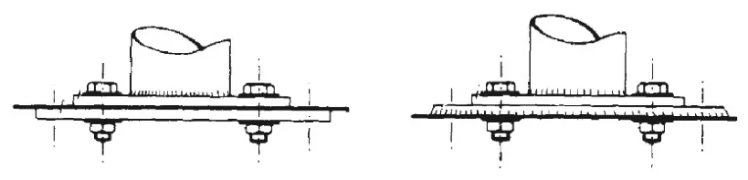<figcaption>図〜第２−15図（この場合、全周を溶接すること）に示すように取付けること。</figcaption></figure>
<p>第２−１図　　　　　　　　　　第２−２図</p>
<figure>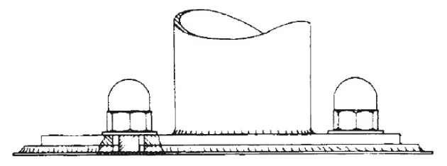</figure>
<p>第２−３図</p>
<figure><span class="pagemark" id="p9">P.9</span>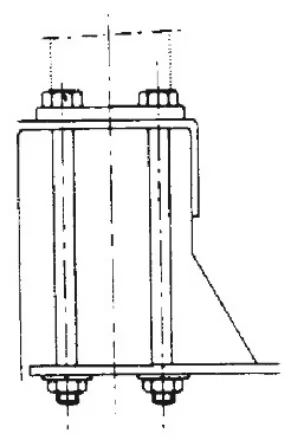</figure>
<p>第２−４図</p>
<figure>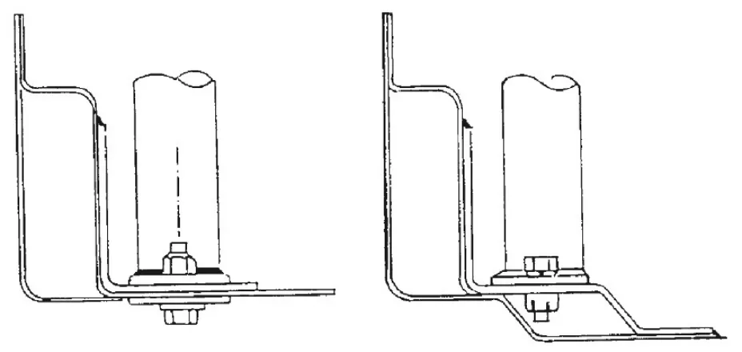</figure>
<p>第２−５図　　　　　　　　　　第２−６図</p>
<figure>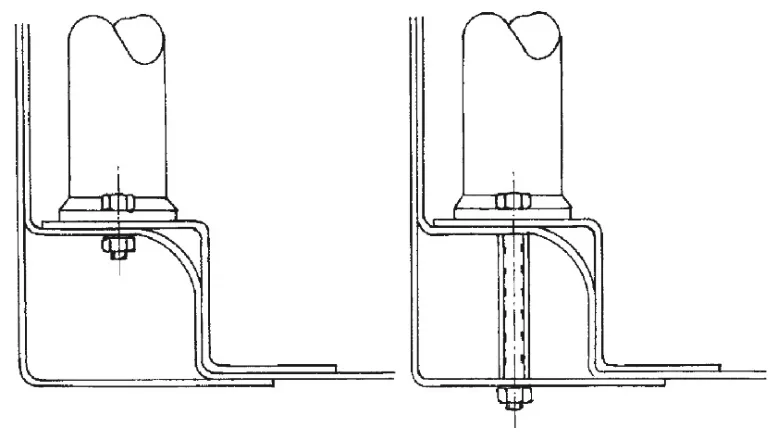</figure>
<p>第２−７図　　　　　　　　　　第２−８図</p>
<figure><span class="pagemark" id="p10">P.10</span>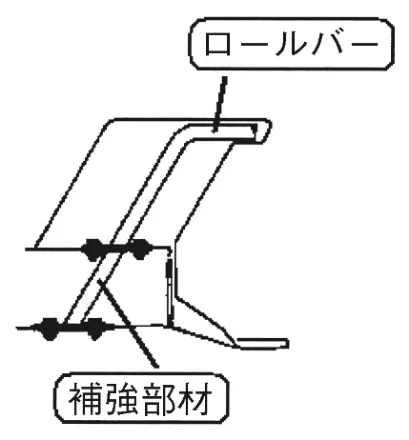</figure>
<p>第２−９図</p>
<p>（ロールバーはバルクヘッドを貫通していない。）</p>
<figure>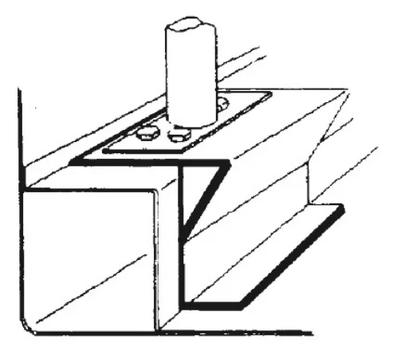</figure>
<p>第２−10図</p>
<figure><span class="pagemark" id="p11">P.11</span>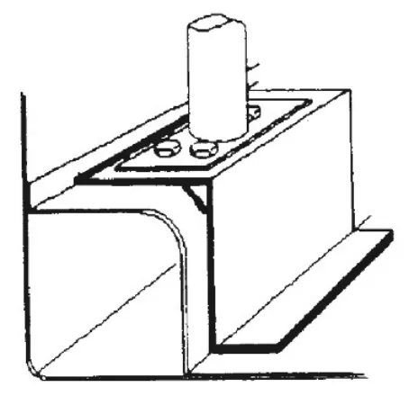</figure>
<p>第２−11図</p>
<figure>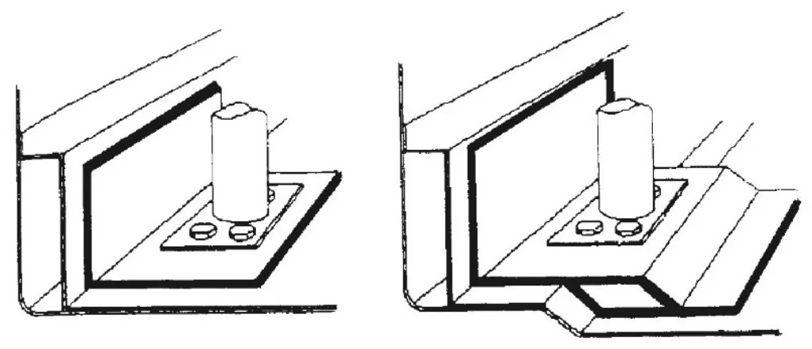</figure>
<p>第２−12図　　　　　　　　　　第２−13図</p>
<figure>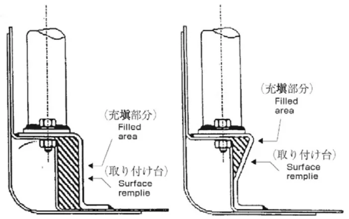</figure>
<p>第２−14図　　　　　　　　　　第２−15図</p>
<p><span class="pagemark" id="p12">P.12</span>③各支柱と車体との結合には、上記①②の取付板および補強板を用い、下記に従いボルトオンにて取付けること。その際の取付方法については次の通りとする。</p>
<p>・直径８mm以上（４Ｔ以上）のボルトを３本以上使用し、緩み止め効果のあるナット（ワッシャ／セルフロッキング等）で、支柱の周辺に分散して取付ける。</p>
<p>・メインロールバーの車体への取付板をＬ型にして既設の３点式安全ベルト最下端部のボルトを用いることにより、とも締めすることは可能であり、その場合当該ボルトは最少取付本数に含まれる。</p>
<p>④車体と支柱側取付板とを溶接にて取付けることは認められない（ボルトと溶接の併用による取付も不可）。</p>
<p>⑤ロールバーの基本構成は、３通りとする。（第２−16 図、第２−17 図および第２−18 図）</p>
<p>⑥非鋼鉄製の車体の場合、車体上に補強板を接着することのみ許される。</p>
<p>８）ロールバーの基本取付部の車体への取付けは、連結部を含めボルトオンのみとする（Ｐ・ＰＮ・Ｎ・ＡＥ車両）。</p>
<p>（１）メインロールバーはセンターピラーにボルトオンで取付けることができる。</p>
<p>（２）ピラーの既存の取付部（シートベルト等）等を利用したボルトによる取付のみが認められる（車体側の加工はできない）。</p>
<p>（３）ロールバーにステーを溶接することは認められる。</p>
<p>９）ロールバーの寸法：</p>
<p>ロールバーは、最小寸法38mm（直径）×2.5mm（肉厚）または40mm（直径）×２mm（肉厚）以上の継ぎ目のない１本のパイプを使用すること。ロールバーの直径と肉厚は、すべてのバーに規定の寸法が適用される。</p>
<p>10）寸法測定のためメインロールケージの曲げ部分、または溶接部分から100mm以上離れた箇所に直径４mmの穴を１ヶ所あけ、その位置を黄ペイントで明示することが許される。</p>
<p>本項に示す寸法測定用の穴の設置は、任意とする。</p>
<p>11）ロールバー取付けのためにダッシュボードの貫通等最小限の改造が許される。</p>
<p>12）斜行バー（第２−19図、第２−20図、第２−21図、第２−22図タイプ）を取り付ける場合は、形状を１つの補強要素として、基本ロールケージに取り付けることが認められる。ただし、ロールケージとの連結部は規定の通りボルトオンで取り付けること。バーを曲げてはならない。斜行バーの方向が逆になっても構わない。バーの連結部が傷害の危険を及ぼさないように配慮すること。</p>
<p>斜行バーの上端は、リアストラットとの連結部から100mm以上離れていないメインロールバー上か、メインロールバーとの連結部から100mm以上離れていないリアストラット上に位置していなければならず、下端は、メインロールバーまたはリアストラットの車体への取り付け点から100mm以上離れてはならない。（その計測については第２－24図を参照）。</p>
<p>13）「×」形状の部材（ドアバーを含む）については、「×」形状を１つの構成要素として基本ロールバーに取り付けることが認められる。（第２−21図、第２−22図、第２−23図タイプ）</p>
<p>「×」形状の連結部をガセット（gusset：補強用鉄板等）により補強することが認められる。</p>
<p>14）ドアバー（側面保護のための補強）を取り付ける場合は、第２－23図、第２－25図〜第２－27図に従い、上部取り付け点はドア開口部の底部より計測しその高さの半分より高くなってはならない。</p>
<p>15）取り外し可能な連結金具：</p>
<p>取り外し可能な部材が、ロールケージの構造として用いられている場合には、使用される取り外し可能な連結具はＦＩＡにより承認された方式、あるいはそれに相当する方式に従っていなくてはならない（第２−28図〜</p>
<p>第２−38図参照）。それらは溶接されていてはならない。ネジおよびボルトは、ＩＳＯ規格の8.8または、4Ｔ以上のものでなくてはならない。</p>
<figure>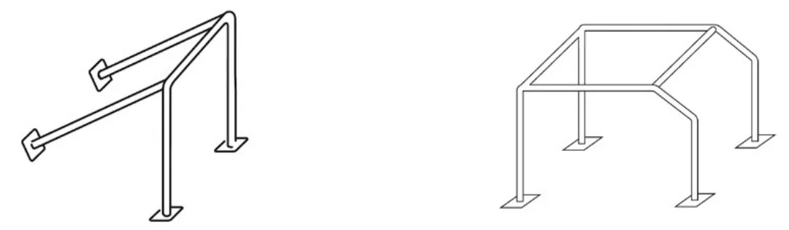</figure>
<p>第２－16図　　　　　　　　　　第２－17図</p>
<figure><span class="pagemark" id="p13">P.13</span>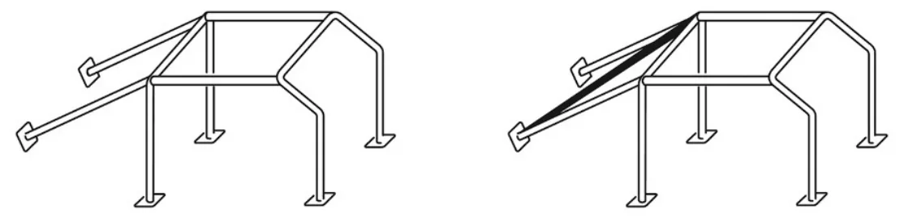</figure>
<p>第２－18図　　　　　　　　　　第２－19図</p>
<figure>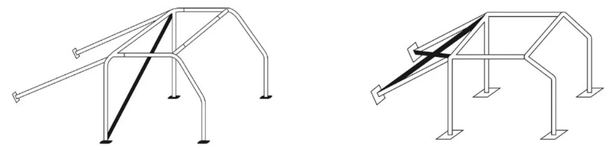</figure>
<p>第２－20図　　　　　　　　　　第２－21図</p>
<figure>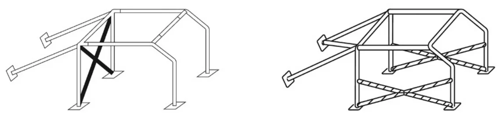</figure>
<p>第２－22図　　　　　　　　　　第２－23図</p>
<figure>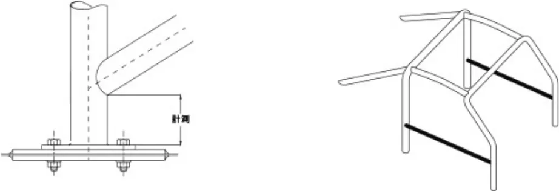</figure>
<p>第２－24図　　　　　　　　　　第２－25図</p>
<figure><span class="pagemark" id="p14">P.14</span>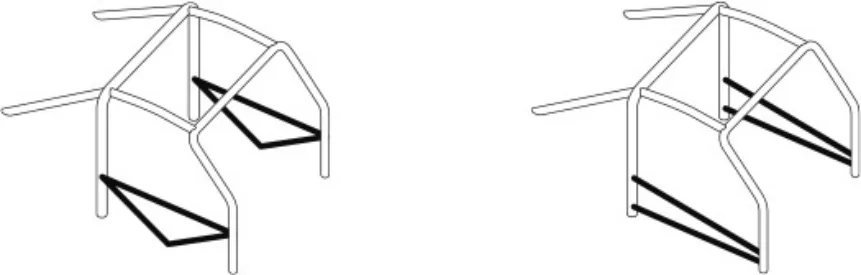</figure>
<p>第２－26図　　　　　　　　　　第２－27図</p>
<figure>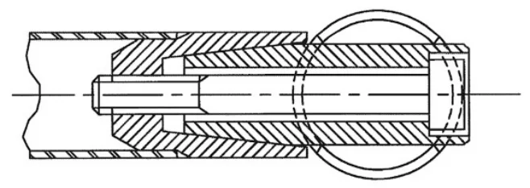</figure>
<p>第２－28図</p>
<figure>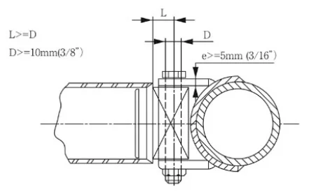</figure>
<p>第２－29図</p>
<figure>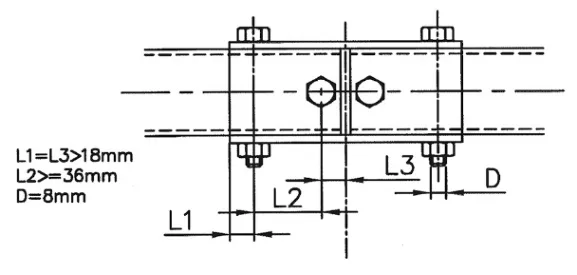</figure>
<p>第２－30図</p>
<figure><span class="pagemark" id="p15">P.15</span>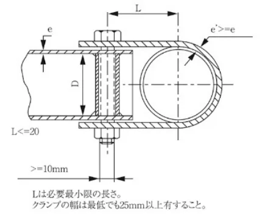</figure>
<p>第２－31図</p>
<figure>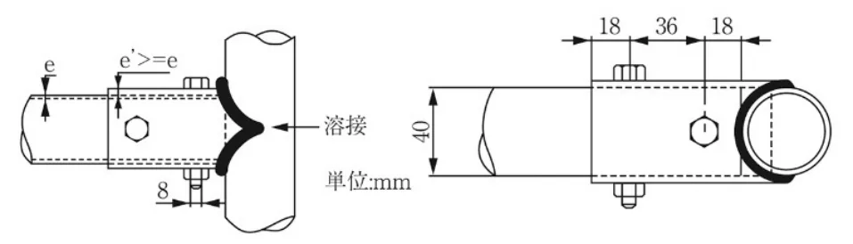</figure>
<p>第２－32図</p>
<figure></figure>
<p>第２－33図</p>
<figure>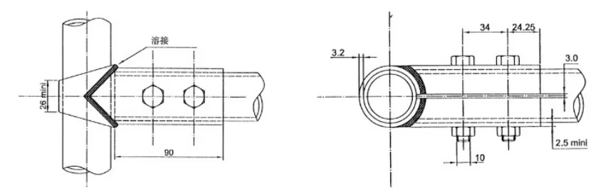</figure>
<p>第２－34図</p>
<figure><span class="pagemark" id="p16">P.16</span></figure>
<p>第２－35図</p>
<figure>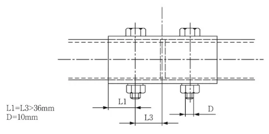</figure>
<p>第２－36図</p>
<figure>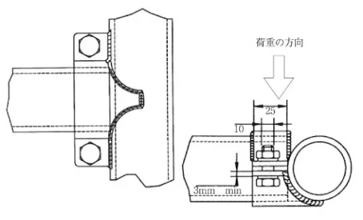</figure>
<p>第２－37図</p>
<figure>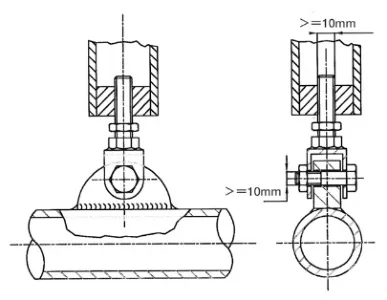</figure>
<p>第２－38図</p>
<h5 id="1-3-サーキットブレーカー">1.3 ）サーキットブレーカー</h5>
<p>サーキットブレーカーを装着する場合は下記規定に従うこと。</p>
<p>イグニッションスイッチおよび燃料ポンプスイッチは、その位置が確認できるよう黄色で明示しなければならない。イグニッションスイッチおよび燃料ポンプスイッチを変更する場合、ＯＮの位置が上、ＯＦＦの位置が下になければならない。</p>
<p>装着するサーキットブレーカーは、運転席および車外から操作できるすべての回路を遮断する各々独立した放電防止型のサーキットブレーカー（主電源回路開閉装置）とする。これらはすべての電気回路を遮断できるものであり、エンジンや電気モーターを停止することができるものであること。その場所は外部から容易に確認できる位置とし、赤色のスパークを底辺が最小12cmの青色の三角形で囲んだ記号で表示すること。引くことにより機能する車外操作部を持つサーキットブレーカーを運転席の反対側のフロントウインドシールド支持枠の下方付近に設置す</p>
<p><span class="pagemark" id="p17">P.17</span>ること。ただし、車両の構造上フロントウインドシールド支持枠の下方付近に設置することが不可能な場合、運転席の反対側のセンターピラーあるいはクォーターピラーの外部から操作可能な位置に装着することが許される。</p>
<p>なお、電気モーターを動力源とする車両の場合は、サーキットブレーカー装着の有無にかかわらず、イグニッションスイッチの位置を黄色で明示しなければならない。当該車両にサーキットブレーカーを装着する場合は、高電圧系の回路を改造することは許されない。</p>
<h5 id="第-2-条-一般改造規定">第 2 条　一般改造規定</h5>
<p>第１章一般規定、本章の安全規定および本章の一般改造規定で課せられている以外、すべての改造は禁止される。車両の構成要素は当初の機能を保持しなければならない。本規定によって許可されていないすべての改造は、明確に禁止される。</p>
<p>改造の範囲や許可される取付けは下記（第３条〜第７条）に規定される。</p>
<h5 id="第-3-条-エンジン">第 3 条　エンジン</h5>
<h5 id="3-1-点火装置">3.1 ）点火装置</h5>
<p>3.1.1 ）スパークプラグ、ハイテンションコードの銘柄、型式は自由。</p>
<h5 id="3-2-吸気装置">3.2 ）吸気装置</h5>
<p>3.2.1 ）フィルター：フィルターカートリッジの変更は、当初のものと同一の方式、材質、形状のものであれば認められる。</p>
<h5 id="第-4-条-駆動装置">第 4 条　駆動装置</h5>
<p>4.1 ）クラッチ：クラッチディスクおよびクラッチカバーは、数および直径を除き変更することができる。ただし、カーボン製（カーボン含有率がすべてを占めるもの）の使用は認められない。</p>
<h5 id="第-5-条-制動装置">第 5 条　制動装置</h5>
<p>5.1 ）パッドおよびブレーキシューは材質変更を含み交換、変更は許される。但し、カーボン材（カーボン100％）は使用できない。</p>
<p>5.2 ）その他：ブレーキディスクやホイールに集積した泥をかき出す装置を追加しても良い。ブレーキキャリパー内のピストンの背後にノックバック防止を目的としたスプリングの追加が許される。</p>
<h5 id="第-6-条-タイヤおよびホイール">第 6 条　タイヤおよびホイール</h5>
<p>6.1 ）タイヤ：当該自動車製造者発行の量産車カタログの同一車両型式に記載されるタイヤサイズの変更がなければ、銘柄は自由。</p>
<p>6.2 ）ホイール：当該自動車製造者発行の量産車カタログの同一車両型式に記載されるホイールサイズの変更がなければ、銘柄は自由。スチール製、またはＪＷＬマークのある軽合金製（アルミ合金製、マグネシウム合金製を含む）とする。ホイールナットの材質および形状の変更は許される。</p>
<h5 id="第-7-条-車体">第 7 条　車体</h5>
<p>7.1 ）追加アクセサリー：車両の美観または居住性に関する付属品（照明、暖房、ラジオ等）といった、車両の動きにいかなる影響も及ぼさないものは全て、制限なく認められる。ただし、これらの付属品が、例え間接的であっても、エンジン、ステアリング、強度、トランスミッション、ブレーキ、ロードホールディングの効率に影響を及ぼすことがないという条件の下に限る。</p>
<p>グローブボックスに追加区画を設けたり、ドアにポケットを追加することができる。ただし、オリジナルのパネルを使用すること。</p>
<p>7.2 ）一般消耗品：次の消耗品は、変更（同等品）が許される。</p>
<p>補機バッテリー（12Ⅴバッテリー）、オイルフィルター、ワイパーブレード、バルブ等。</p>
<p>7.3 ）障がい者用操作装置：障がい者用操作装置を装着することができる。ただし、健常者は使用しないこと。</p>
<h3 id="第-章-スピード-車両規定-2"><span class="pagemark" id="p18">P.18</span>第３章　スピードＰＮ車両規定</h3>
<h5 id="第-1-条-安全規定-2">第 1 条　安全規定</h5>
<h5 id="1-1-安全ベルト-2">1.1 ）安全ベルト</h5>
<p>すべての車両にＦＩＡ公認安全ベルトの使用を強く推奨する。</p>
<p>４点式安全ベルト等（フック式、固定式）を追加装備する場合、安全ベルトは、ワンタッチ式フルハーネスタイプとし、第５編細則「ラリー競技およびスピード競技における安全ベルトに関する指導要綱」および下記条件に従うこと。</p>
<p>１）既設の安全ベルト（３点式等）を変更することなく、４点式安全ベルト等に取付けられているフックを用い容易に既設の安全ベルト取付け装置に着脱できる構造の４点式安全ベルト等を追加装備すること。</p>
<p>２）４点式安全ベルト等は競技走行中のみ装着することが許される。したがって、それ以外の通常走行時は既設の安全ベルト（３点式等）を装着すること。</p>
<p>３）安全ベルト装着による乗車定員変更は許されない。</p>
<h5 id="1-2-ロールバー-2">1.2 ）ロールバー</h5>
<p>すべての車両に４点式以上のロールバーを装着することを推奨する。</p>
<p>なお、オープンカーでジムカーナ競技に参加する場合は４点式以上、ダートトライアル競技に参加する場合は６点式以上のロールバーを取付けること。ロールバーを装着する場合、材質はスチールとし下記の規定に従うこと。</p>
<p>１）高電圧部位及びその配線などに接触の恐れがないように取り付けること。</p>
<p>２）ロールバーを取付けた状態における乗車装置は、座席面上で座席前端より200mmの点から背もたれに平行な天井（ロールバーが頭部付近にある場合はロールバー）までの距離が800mm以上であること。</p>
<p>３）乗員の頭部等を保護するため、頭部等に接触する恐れのあるロールバーの部位は、緩衝材で覆われていること。</p>
<p>４）乗員が接触する恐れのあるロールバーは、半径3.2mm未満の角部を有さないものであること。</p>
<p>５）ロールバーを取付けることにより、前方視界およびバックミラーによる視界を妨げるものでないこと。</p>
<p>６）ロールバーを取付けることにより乗員の乗降を妨げるものでないこと。なお、ロールバーの取付けにより後部乗員のための室内高の確保および乗降口等の確保ができない場合には、各運輸支局等において乗車定員変更のための構造等変更検査の手続を行うこと。</p>
<p>７）ロールバーの車体への最少取付け点数：</p>
<p>－メインロールバーの支柱１本につき１ヵ所。</p>
<p>－サイドロールバー（あるいはフロントロールバー）の支柱１本につき１ヵ所。</p>
<p>－リアストラットの支柱１本につき１ヵ所。</p>
<p>①各支柱の車体への取付板は、面積60cm</p>
<p>2、板厚2.5mm以上を有すること。この取付板は支柱に溶接されていな</p>
<p>くてはならない。</p>
<p>2、板厚3.0mm以上を有し、第３−１図（この場合、溶接は不要）、第３−２</p>
<p>②車体側の補強板は、面積120cm</p>
<figure>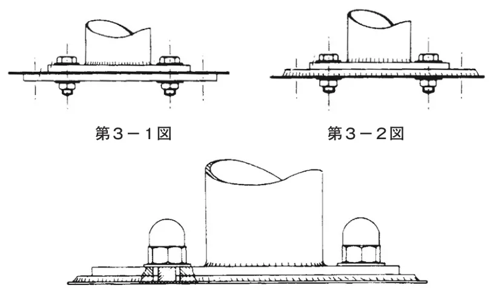<figcaption>図〜第３−15図（この場合、全周を溶接すること）に示すように取付けること。</figcaption></figure>
<figure><span class="pagemark" id="p19">P.19</span>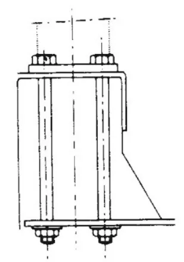</figure>
<p>第３－４図</p>
<figure>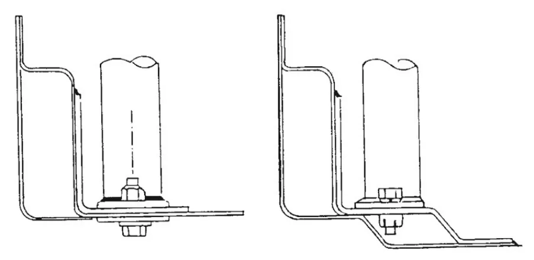</figure>
<p>第３－５図　　　　　　　　　　　　第３－６図</p>
<figure>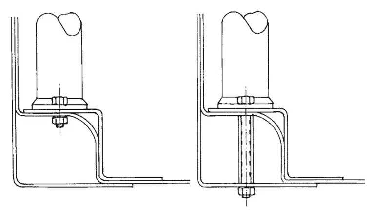</figure>
<p>第３－７図　　　　　　　　　　第３－８図</p>
<figure><span class="pagemark" id="p20">P.20</span>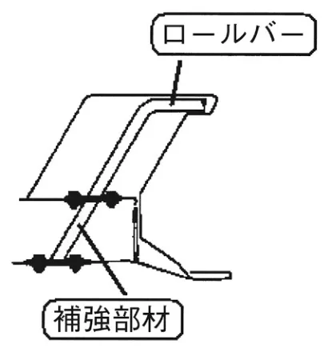</figure>
<p>第３－９図</p>
<p>（ロールバーはバルクヘッドを貫通していない。）</p>
<figure>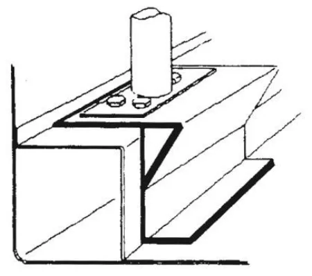</figure>
<p>第３－10図</p>
<figure>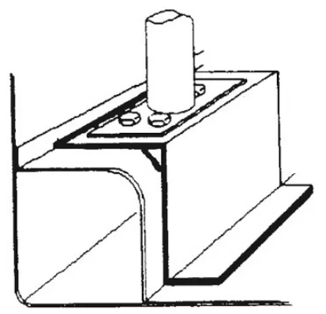</figure>
<p>第３－11図</p>
<figure><span class="pagemark" id="p21">P.21</span>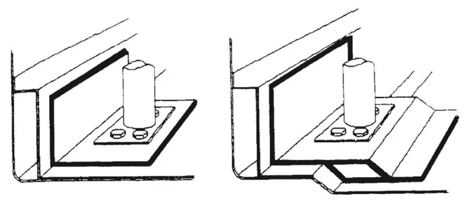</figure>
<p>第３－12図　　　　　　　　　　第３－13図</p>
<figure>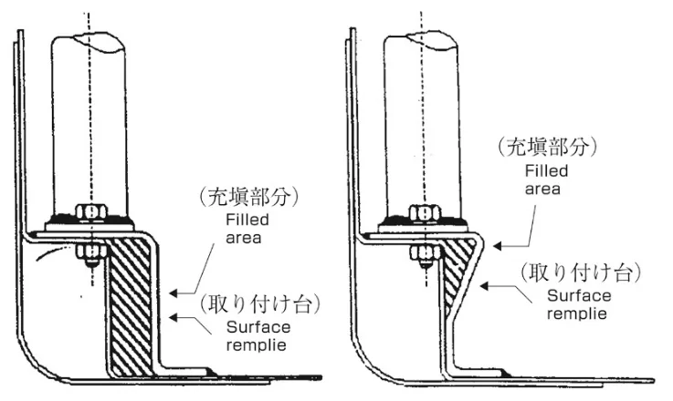</figure>
<p>第３－14図　　　　　　　　　　第３－15図</p>
<p>③各支柱と車体との結合には、上記①②の取付板および補強板を用い、下記に従いボルトオンにて取付けること。その際の取付方法については次の通りとする。</p>
<p>・直径８mm以上（４Ｔ以上）のボルトを３本以上使用し、緩み止め効果のあるナット（ワッシャ／セルフロッキング等）で、支柱の周辺に分散して取付ける。</p>
<p>・メインロールバーの車体への取付板をＬ型にして既設の３点式安全ベルト最下端部のボルトを用いることにより、とも締めすることは可能であり、その場合当該ボルトは最少取付本数に含まれる。</p>
<p>④車体と支柱側取付板とを溶接にて取付けることは認められない（ボルトと溶接の併用による取付も不可）。</p>
<p>⑤ロールバーの基本構成は、３通りとする。（第３−16 図、第３−17 図および第３−18 図）</p>
<p>⑥非鋼鉄製の車体の場合、車体上に補強板を接着することのみ許される。</p>
<p>８）ロールバーの基本取付部の車体への取付けは、連結部を含めボルトオンのみとする（Ｐ・ＰＮ・Ｎ・ＡＥ車両）。</p>
<p>（１）メインロールバーはセンターピラーにボルトオンで取付けることができる。</p>
<p>（２）ピラーの既存の取付部（シートベルト等）等を利用したボルトによる取付のみが認められる（車体側の加工はできない）。</p>
<p>（３）ロールバーにステーを溶接することは認められる。</p>
<p>９）ロールバーの寸法：</p>
<p>ロールバーは、最小寸法38mm（直径）×2.5mm（肉厚）または40mm（直径）×２mm（肉厚）以上の継ぎ目のない１本のパイプを使用すること。ロールバーの直径と肉厚は、すべてのバーに規定の寸法が適用される。</p>
<p>10）寸法測定のためメインロールケージの曲げ部分、または溶接部分から100mm以上離れた箇所に直径４mmの穴を１ヶ所あけ、その位置を黄ペイントで明示することが許される。</p>
<p>本項に示す寸法測定用の穴の設置は、任意とする。</p>
<p>11）ロールバー取付けのためにダッシュボードの貫通等最小限の改造が許される。</p>
<p>12）斜行バー（第３−19図、第３−20図、第３−21図、第３−22図タイプ）を取り付ける場合は、形状を１つの補強要素として、基本ロールケージに取り付けることが認められる。ただし、ロールケージとの連結部は規定の通りボルトオンで取り付けること。バーを曲げてはならない。斜行バーの方向が逆になっても構わない。バー</p>
<p><span class="pagemark" id="p22">P.22</span>の連結部が傷害の危険を及ぼさないように配慮すること。</p>
<p>斜行バーの上端は、リアストラットとの連結部から100mm以上離れていないメインロールバー上か、メインロールバーとの連結部から100mm以上離れていないリアストラット上に位置していなければならず、下端は、メインロールバーまたはリアストラットの車体への取り付け点から100mm以上離れてはならない。（その計測については第３－24図を参照）。</p>
<p>13）「×」形状の部材（ドアバーを含む）については、「×」形状を１つの構成要素として基本ロールバーに取り付けることが認められる。（第３−21図、第３−22図、第３−23図タイプ）</p>
<p>「×」形状の連結部をガセット（gusset：補強用鉄板等）により補強することが認められる。</p>
<p>14）ドアバー（側面保護のための補強）を取り付ける場合は、第３－23図、第３－25図〜第３－27図に従い、上部取り付け点はドア開口部の底部より計測しその高さの半分より高くなってはならない。</p>
<p>15）取り外し可能な連結金具：</p>
<p>取り外し可能な部材が、ロールケージの構造として用いられている場合には、使用される取り外し可能な連結具はＦＩＡにより承認された方式、あるいはそれに相当する方式に従っていなくてはならない（第３−28図〜</p>
<p>第３−38図参照）。それらは溶接されていてはならない。ネジおよびボルトは、ＩＳＯ規格の8.8または、４ Ｔ以上のものでなくてはならない。</p>
<figure>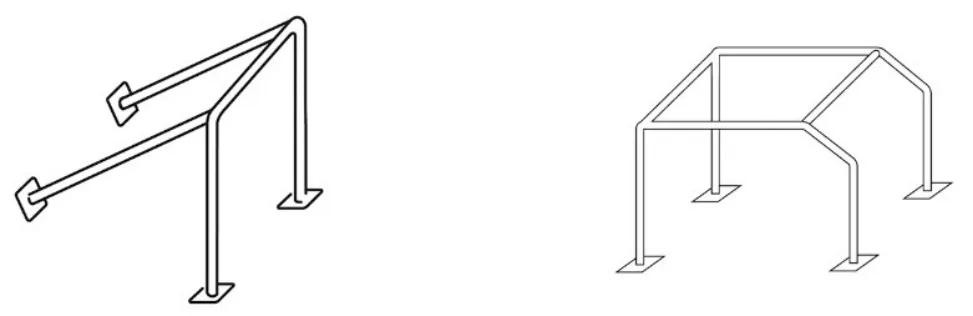</figure>
<p>第３－16図　　　　　　　　　　第３－17図</p>
<figure>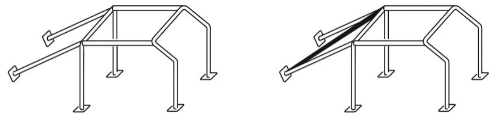</figure>
<p>第３－18図　　　　　　　　　　第３－19図</p>
<figure><span class="pagemark" id="p23">P.23</span>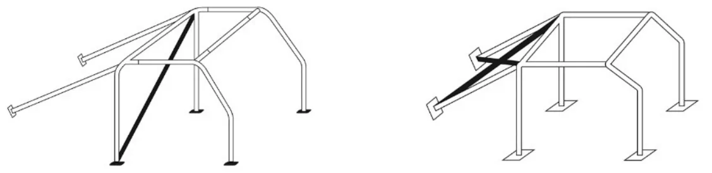</figure>
<p>第３－20図　　　　　　　　　　第３－21図</p>
<figure>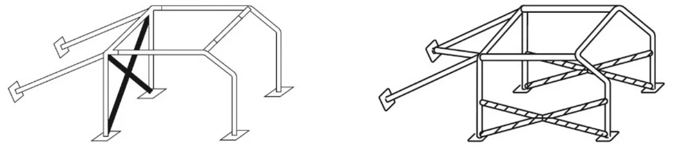</figure>
<p>第３－22図　　　　　　　　　　第３－23図</p>
<figure>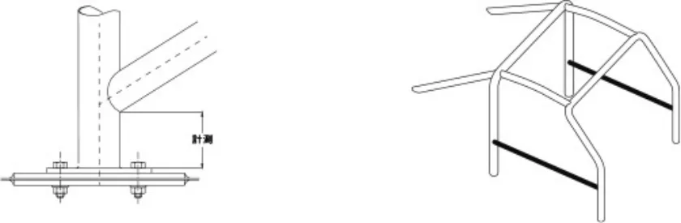</figure>
<p>第３－24図　　　　　　　　　　第３－25図</p>
<figure></figure>
<p>第３－26図　　　　　　　　　　第３－27図</p>
<figure>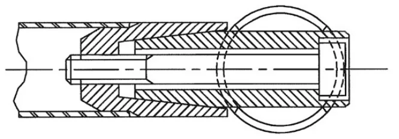</figure>
<p>第３－28図</p>
<figure><span class="pagemark" id="p24">P.24</span>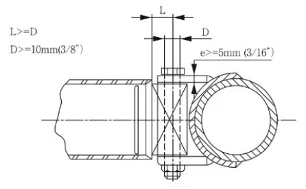</figure>
<p>第３－29図</p>
<figure>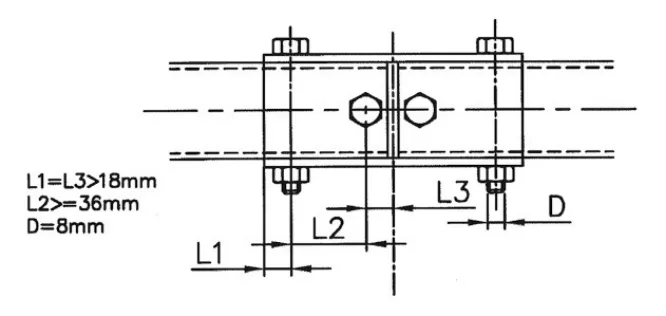</figure>
<p>第３－30図</p>
<figure>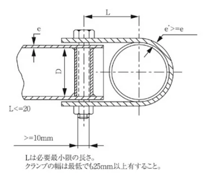</figure>
<p>第３－31図</p>
<figure></figure>
<p>第３－32図</p>
<figure><span class="pagemark" id="p25">P.25</span>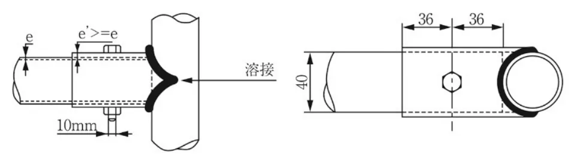</figure>
<p>第３－33図</p>
<figure>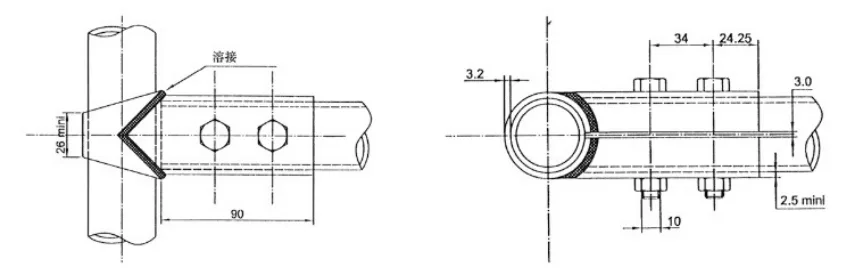</figure>
<p>第３－34図</p>
<figure>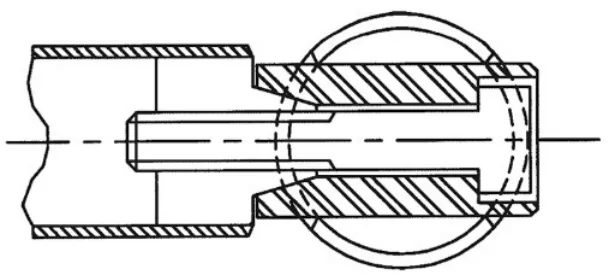</figure>
<p>第３－35図</p>
<figure>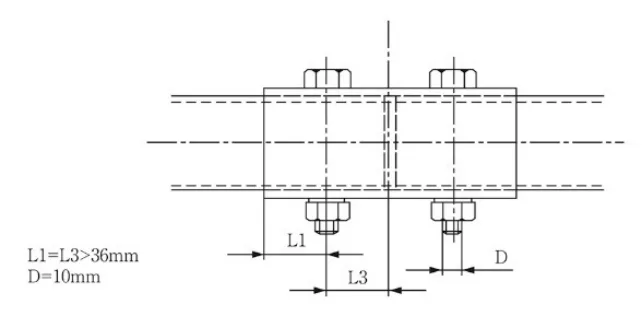</figure>
<p>第３－36図</p>
<figure><span class="pagemark" id="p26">P.26</span>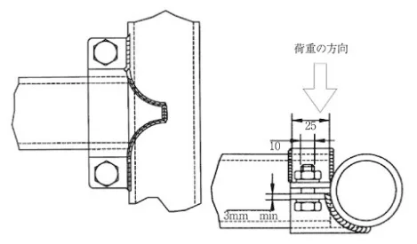</figure>
<p>第３－37図</p>
<figure>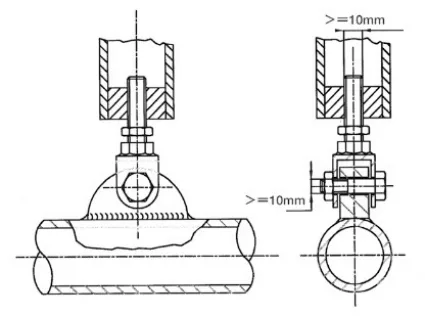</figure>
<p>第３－38図</p>
<h5 id="1-3-サーキットブレーカー-2">1.3 ）サーキットブレーカー</h5>
<p>サーキットブレーカーを装着する場合は下記規定に従うこと。</p>
<p>イグニッションスイッチおよび燃料ポンプスイッチは、その位置が確認できるよう黄色で明示しなければならない。イグニッションスイッチおよび燃料ポンプスイッチを変更する場合、ＯＮの位置が上、ＯＦＦの位置が下になければならない。</p>
<p>装着するサーキットブレーカーは、運転席および車外から操作できるすべての回路を遮断する各々独立した放電防止型のサーキットブレーカー（主電源回路開閉装置）とする。これらはすべての電気回路を遮断できるものであり、エンジンや電気モーターを停止することができるものであること。その場所は外部から容易に確認できる位置とし、赤色のスパークを底辺が最小12cmの青色の三角形で囲んだ記号で表示すること。引くことにより機能する車外操作部を持つサーキットブレーカーを運転席の反対側のフロントウインドシールド支持枠の下方付近に設置すること。ただし、車両の構造上フロントウインドシールド支持枠の下方付近に設置することが不可能な場合、運転席の反対側のセンターピラーあるいはクォーターピラーの外部から操作可能な位置に装着することが許される。</p>
<p>なお、電気モーターを動力源とする車両の場合は、サーキットブレーカー装着の有無にかかわらず、イグニッションスイッチの位置を黄色で明示しなければならない。当該車両にサーキットブレーカーを装着する場合は、高電圧系の回路を改造することは許されない。</p>
<h5 id="第-2-条-一般改造規定-2">第 2 条　一般改造規定</h5>
<p>第１章一般規定、本章の安全規定および本章の一般改造規定で課せられている以外、すべての改造は禁止される。車両の構成要素は当初の機能を保持しなければならない。本規定によって許可されていないすべての改造は、明確に禁止される。</p>
<p>改造の範囲や許可される取付けは下記（第３条〜第９条）に規定される。</p>
<h5 id="第-3-条-エンジン-2">第 3 条　エンジン</h5>
<p>3.1 ）エンジンおよびギアボックスマウント：取付けマウントのラバー部材は同一材質で形状・硬度を変更することは自由。ブラケットの形状、取付け位置、取付け軸は変更しないこと。</p>
<p>3.1.1 ）フライホイール：元のフライホイールを修正加工したり、また他のものに変更および交換できる。</p>
<p>3.1.2 ）補機バッテリー（12Ｖバッテリー）：車室内に補機バッテリーが露出している場合は、強固に固定された補機バッテリー（１２Ｖバッテリー）ボックスを設置しなければならない。</p>
<h5 id="3-2-点火装置">3.2 ）点火装置</h5>
<p>3.2.1 ）スパークプラグ、ハイテンションコードの銘柄、型式は自由。</p>
<h5 id="3-3-吸気装置">3.3 ）吸気装置</h5>
<p>3.3.1 ）フィルター：フィルターカートリッジの変更は、当初のものと同一の方式、材質、形状のものであれば認められる。</p>
<h5 id="3-4-冷却系統">3.4 ）冷却系統</h5>
<p><span class="pagemark" id="p27">P.27</span>サーモスタットおよびラジエターキャップの変更が許される。</p>
<h5 id="第-4-条-シャシー">第 4 条　シャシー</h5>
<p>4.1 ）最低地上高：９cmとする。ただし、アンダーカバー等の装着車両の当該部位は５cmとする。また、車両の１つの側面のすべてのタイヤの空気が抜けた場合であっても、車両のいかなる部分も地表に接してはならない。このテストは出走状態で（ドライバーが搭乗し）平坦な面上で行われる。</p>
<p>4.2 ）最低重量：当該自動車製造者発行のカタログ等に記載された主要諸元一覧表の同一車両型式に設定されている車両重量の内、最小値とする。ただし、同一車両型式に過給器付（ターボチャージャー、スーパーチャージャー等）と過給器無の両仕様が存在する場合は、各々に設定されている車両重量の最小値とする。</p>
<p>バラストは搭載することができない。</p>
<h5 id="第-5-条-駆動装置">第 5 条　駆動装置</h5>
<p>5.1 ）クラッチ：ディスク、カバー、スプリング、カラー、メインドライブシャフトフロントカバー、クラッチレリーズシリンダーおよびベアリングの材質を含み変更することができる。ただし、カーボン製（カーボン含有率がすべてを占めるもの）の使用は認められず、機械式クラッチを電磁クラッチに、電磁クラッチを機械式クラッチに変更することは認められない。</p>
<h5 id="5-2-シフトレバー-シフトノブの変更は許される">5.2 ）シフトレバー：シフトノブの変更は許される。</h5>
<p>5.3 ）ディファレンシャル：フロント・センター・リアディファレンシャルは、数を変更しなければボルトオンで取付けられるリミテッドスリップデフ（ビスカスカップリングを含む）を取付けることができる。ただし、元のケースを使用すること。また、これに関連するドライブシャフトは、同一車両型式内に使用されているものであれば変更することができる。</p>
<p>5.4 ）最終減速比：ギア比の変更は、同一車両型式に設定されている純正部品およびメーカーオプションで、改造および加工の必要なく取り付けられるものであれば、ボルトオンを条件に許される。</p>
<h5 id="第-6-条-制動装置">第 6 条　制動装置</h5>
<p>6.1 ）パッドおよびブレーキシューは材質変更を含み交換、変更は許される。ただし、カーボン材（カーボン100％）は使用できない。</p>
<p>6.2 ）ハンドブレーキレバー：：ハンドブレーキレバーの改造は許されるが、当初の取り付け位置および機能を維持し、駐車ブレーキは主ブレーキとは独立した系統でなければならない。ただし、メーカーオプションに設定されている部品への交換ができる。</p>
<p>6.3 ）ダートトライアル競技に参加する車両（非舗装路面で行うその他の種目を含む）に限り、１６インチ以上のタイヤ装着車両（メーカー設定）で１５インチタイヤが装着できない車両に対し１５インチタイヤ装着を目的とした以下の改造が認められる。ブレーキキャリパー、ブレーキディスクの変更は許され、サイズの変更も認められるが以下に従うこと。ただし、カーボン製ブレーキディスクの使用は禁止される。</p>
<p>①キャリパーは、ブレーキコンポーネントメーカーから市販されている生産部品であること。ホイール毎に１つのキャリパーユニットのみであること。キャリパーハウジング／ボディにはスチールまたはアルミニウム製のみが認められる。キャリパーあたり最大４つのピストンまでとする。取り付けブラケットは自由に作成されてもよい。</p>
<p>ブラケットを除き、すべての部品は製品カタログまたは部品カタログから入手することができなければならない。チタンおよびセラミック材料は禁止される。</p>
<p>②ディスク（ローター）と取り付けベルは、通常入手可能な一般に販売されている部品（市販品）であること。ディスクの最大直径３００mmとする。すべての部品は製品カタログまたは部品カタログから入手することができなければならない。</p>
<p>6.4 ）その他：ブレーキディスクやホイールに集積した泥をかき出す装置を追加しても良い。ブレーキキャリパー内のピストンの背後にノックバック防止を目的としたスプリングの追加が許される。</p>
<h5 id="第-7-条-サスペンション">第 7 条　サスペンション</h5>
<p>材料の追加によるサスペンションの車体取付け部の補強を認める。サスペンションの補強部が、中空体を作ることになってはならない。部分的であっても、全体的であっても複合素材（カーボンコンポジット）から成るサスペンション部材は禁止される。</p>
<h5 id="7-1-補修">7.1 ）補修</h5>
<p>補修を目的とした修正加工は許される。ただし、補修によって標準部品の取付けに影響があってはならない。</p>
<p>7.2 ）スプリング：数は、スプリングを連続して取付けることを条件として自由。長さ、コイルの巻数、ワイヤーの直径、外径、スプリングの種類、スプリングシートの形状（車高調整機能を含む）とともに自由。ただし、下記に従</p>
<p><span class="pagemark" id="p28">P.28</span>うこと。</p>
<p>①ばねに損傷があり、左右のばねのたわみに著しい不同がないこと。</p>
<p>②溶接、肉盛または加熱加工を行わないこと。</p>
<p>③ばねの端部がブラケットから離脱しない（遊びがない）こと。</p>
<p>④切断等によりばねの一部または全部を除去しないこと。</p>
<p>⑤ばねの機能を損なうおそれのある締付具を有さないこと。</p>
<p>⑥ばねの取付け方法はその機能を損なうおそれのないこと。</p>
<p>7.3 ）ショックアブソーバー：材質を含み自由。ただし、カーボン材は使用できない。車高調整機構（ネジ式、Ｃリング等）を伴うものに変更（使用）することができる。また、アッパーマウントをピロボール（キャンバー調整機構のみ付加されたものを含む）もしくは強化ゴムブッシュに変更することができる。ただし、それらの数、形式、作動原理は変更してはならず、別タンク式のものに変更（使用）することは許されない。</p>
<p>遠隔操作による減衰力調整機構への変更は許されない。</p>
<p>7.4 ）スタビライザー：同一車両型式に純正部品および、メーカーオプションで設定されている部品に限り、取付け、取外し、交換が許される。</p>
<h5 id="第-8-条-タイヤおよびホイール">第 8 条　タイヤおよびホイール</h5>
<h5 id="8-1-タイヤ-競技種目別に以下の通りとする">8.1 ）タイヤ：競技種目別に以下の通りとする。</h5>
<p>8.1.1 ）ジムカーナ競技に参加する車両（舗装路面で行うその他の種目を含む）</p>
<p>当該自動車製造者発行の量産車カタログの同一車両型式に記載されるタイヤサイズを基準とし、下記事項を条件に、サイズアップは幅を最大10mm、ホイール径を最大１インチまで、サイズダウンは数値による規制なく変更することが許される。</p>
<p>①タイヤは、ＪＡＴＭＡ ＹＥＡＲ ＢＯＯＫ（日本自動車タイヤ協会規格）に記載されているもの、またはこれと同等なものとする。なお、海外規格（ＴＲＡ、ＥＴＲＴＯ等）タイヤに変更する場合、下記②、③および④に留意し、且つそれらを証明する資料を携行すること。</p>
<p>②タイヤの最大負荷能力は、同一車両型式に定められているタイヤサイズの最大負荷能力と同等以上であること。</p>
<p>③タイヤの静的負荷半径の基準寸法が、同一車両型式に定められているタイヤサイズの静的負荷半径の許容差の範囲であること。</p>
<p>④タイヤは公道走行の許される一般市販タイヤとし、競技専用タイヤは使用しないこと。</p>
<p>⑤タイヤおよびホイールは、静止状態において地表以外の部分と接触してはならない。</p>
<p>⑥タイヤおよびホイールは、フェンダーからはみ出さないこと。（第３－39図参照）</p>
<figure>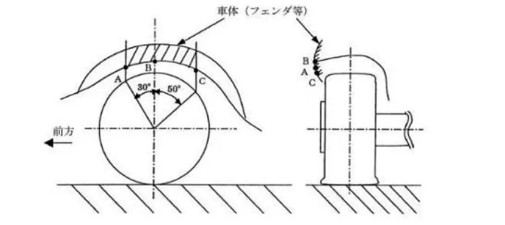</figure>
<p>第3−39図</p>
<p>⑦タイヤの溝は常に1.6mm 以上あること。</p>
<p>⑧タイヤは加工しないこと。</p>
<p>⑨タイヤのウォームアップ、クールダウン、溶剤塗布等は行わないこと。</p>
<p>⑩スパイクタイヤの使用は禁止する。</p>
<p>8.1.2 ）ダートトライアル競技に参加する車両（非舗装路面で行うその他の種目を含む）</p>
<p>当該自動車製造者発行の量産車カタログの同一車両型式に記載されるタイヤサイズを基準とし、競技会開催場所（公認コース）内に限り下記事項を条件に、サイズアップは幅を最大10mm、ホイール径を最大１インチまで、サイズダウンは数値による規制なく変更することが許される。</p>
<p>①タイヤの最大負荷能力は、同一車両型式に定められているタイヤサイズの最大負荷能力と同等以上であること。</p>
<p>②タイヤは公道走行の許される一般市販タイヤとし、競技専用タイヤは使用しないこと。</p>
<p>③タイヤおよびホイールは、静止状態において地表以外の部分と接触してはならない。</p>
<p><span class="pagemark" id="p29">P.29</span>④タイヤおよびホイールは、フェンダーからはみ出さないこと。（第３−40図参照）</p>
<figure></figure>
<p>第3−40図</p>
<p>⑤タイヤの溝は常に1.6mm 以上あること。</p>
<p>⑥タイヤは加工しないこと。</p>
<p>⑦タイヤのウォームアップ、クールダウン、溶剤塗布等は行わないこと。</p>
<p>⑧スパイクタイヤの使用は禁止する。</p>
<h5 id="8-2-ホイール-競技種目別に以下の通りとする">8.2 ）ホイール：競技種目別に以下の通りとする。</h5>
<p>8.2.1 ）ジムカーナ競技に参加する車両（舗装路面で行うその他の種目を含む）</p>
<p>下記事項を条件にホイールを変更することができる。</p>
<p>①タイヤサイズに適用するホイールとしてＪＡＴＭＡ ＹＥＡＲ ＢＯＯＫ（日本自動車タイヤ協会規格）に記載されているサイズ、またはこれと同等なもの。</p>
<p>②部分的であっても、全体的であっても複合素材から成るホイールは禁止される。</p>
<p>③ホイールはスチール製、またはＪＷＬマークのある軽合金製（アルミ合金製、マグネシウム合金製を含む）とする。ホイールナットの材質および形状の変更は許される。</p>
<p>④ホイールスペーサー等の間隔保持のための部材を取付けることは、許されない。（メーカーラインオフ時もしくは純正オプションに設定される部品を除く）</p>
<p>⑤ホイールサイズ変更に伴うトレッド（前、後）の変更は許される。</p>
<p>⑥走行中はずれる恐れのあるホイールキャップは取外さなくてはならない。</p>
<p>8.2.2 ）ダートトライアル競技に参加する車両（非舗装路面で行うその他の種目を含む）</p>
<p>競技会開催場所（公認コース）内に限り下記事項を条件にホイールを変更することができる。</p>
<p>①ホイールはスチール製、またはJWLマークのある軽合金製（アルミ合金製、マグネシウム合金製を含む）とする。ホイールナットの材質および形状の変更は許される。</p>
<p>②ホイールスペーサー等の間隔保持のための部材を取付けることは、許されない。（メーカーラインオフ時もしくは純正オプションに設定される部品を除く）</p>
<p>③ホイールサイズ変更に伴うトレッド（前、後）の変更は許される。</p>
<p>④走行中はずれる恐れのあるホイールキャップは取外さなくてはならない。</p>
<h5 id="第-9-条-車体">第 9 条　車体</h5>
<p>車体まわりおよび車室内に追加・変更等する蓋然性が高く、安全の確保および公害の防止上支障がない第５編細則に定める「アクセサリー等の自動車部品」の取付け、取外し、変更が許される。</p>
<h5 id="9-1-車体外部">9.1 ）車体外部</h5>
<p>9.1.1）〜9.1.4）を簡易的（蝶ねじ等）または固定的（ボルト、ナット等）に取り付ける場合を除き、全長、全幅および全高は変更しないこと。</p>
<h5 id="9-1-1-空力装置">9.1.1 ）空力装置</h5>
<p>第５編細則「アクセサリー等の自動車部品」に示された空気流を調整するための前後スポイラーを新たに装着、交換することができる。ただし、何れの場合でも下記事項に留意すること。</p>
<p>①最低地上高</p>
<p>②鋭い突起を有していないこと。</p>
<p>③振動、衝撃等により緩みを生じないこと。</p>
<p>④第５編細則に定める「エア・スポイラの構造基準」を参照すること。</p>
<p>また、内部構造が剥き出しにならないことを条件にフロント・リアスポイラー、サイドスカート（フロントフェンダーアーチ後端からリアフェンダーアーチ前端までのサイドステップ部分）およびリアスカートの部品を取外す</p>
<p><span class="pagemark" id="p30">P.30</span>ことができる。</p>
<p>9.1.2 ）フロントスポイラー：装着・変更が許される。ただし、一体型を含みバンパーの変更は許されない。</p>
<p>9.1.3 ）リアスポイラー：装着・変更が許される。ただし、トランクおよびリアゲートとの一体型は許されない。</p>
<p>9.1.4 ）サイドスカート：装着・変更が許される。（フロントフェンダーアーチ後端からリアフェンダーアーチ前端までのサイドステップ部分）</p>
<p>9.1.5 ）タワーバー：同一車両型式に設定されている純正部品および、メーカーオプションで設定されている部品に限り、取付け、取外し、交換が許される。</p>
<h5 id="9-1-6-マッドフラップ">9.1.6 ）マッドフラップ</h5>
<p>マッドフラップは以下の条件の下で装着することができる。</p>
<p>‐柔軟な材質で作られていなくてはならない。</p>
<p>‐排気管等に干渉してはならず、車体外側表面部位は外側に向けて尖っていたり、鋭い部分がないこと。</p>
<p>‐それらは各ホイールの少なくとも全幅を覆っていなくてはならないが、前輪、後輪の後方ではマッドフラップに覆われていない部分が車両の幅の１／３以上あること（第３−41図を参照）。</p>
<p>‐リアホイールの前方のマッドフラップの左右の間には、少なくとも20cmの隙間がなくてはならない。</p>
<figure></figure>
<p>第3−41図</p>
<p>‐これらのマッドフラップの底部は、車両に誰も乗車せず、停止した状態で、地表から10cm以上の所にあってはならない。</p>
<p>‐垂直投影面にあって、これらのマッドフラップは車体から突出していてはならない。</p>
<p>前方へのはねを防ぐためのマッドフラップは、柔軟な材質で作られ、競技の特別規則書がそれらを認めるか、要請する時に車両の前部へ取付けることができる。それらは、車両の全幅より突出していてはならず、また当初の全長より10cm以上長いものであってはならない。また、フロントホイールの前方ではマッドフラップに覆われていない部分が車両の幅の少なくとも１／３以上なければならない。</p>
<h5 id="9-1-7-アンダーガード">9.1.7 ）アンダーガード</h5>
<p>車体下部を保護することを目的とした空力効果を生じない取り外し可能な保護体を取付けることが許される。</p>
<h5 id="9-2-車体内部">9.2 ）車体内部</h5>
<p>9.2.1 ）コクピット：次の付属品のみ取付けが許される。スペアコンプリートホイール、工具、安全装置。</p>
<p>9.2.2 ）換気装置：オリジナルの換気装置（デフロスター、ヒーター）を保持しなければならない。</p>
<p>9.2.3 ）内装：車室内の見える範囲のすべての部品は削除することができない。ただし、下記に記載されたものを除く。</p>
<p>①フロアマット類およびアンダーコート</p>
<p>②ネジ等のカバー類</p>
<p>③元の座席位置に隔壁（9.2.10）を設置することにより運転席と空気の流入が遮断された車室外となる内装。</p>
<p>④ロールバーの装着に伴う最小限の内装切除。</p>
<p>⑤２ボックス車の着脱式リアシェルフは取外しても良い。</p>
<p>9.2.4 ）ステアリングホイール：下記の条件を満たしたものと交換することができる。</p>
<p>①スポーク部とボス部は堅固な取付け構造とし、衝撃を受けた場合に容易に脱落する恐れのないこと。</p>
<p><span class="pagemark" id="p31">P.31</span>②計器盤の視認性を阻害しない形状をしていること。</p>
<p>③光の反射による運転の妨げとなるような部分がないこと。</p>
<p>④ステアリングホイールの変更により、かじ取装置の衝撃吸収装置に影響を与えるものでないこと。</p>
<p>⑤クイックリリースタイプでないこと。</p>
<p>9.2.5 ）フットレスト・ペダルカバーおよびヒールプレート等：装着することができる。ただし、確実に取付けること。</p>
<p>9.2.6 ）追加アクセサリー：車両の美観または居住性に関する付属品（照明、暖房、ラジオ等）といった、車両の動きにいかなる影響も及ぼさないものはすべて、制限なく認められる。ただし、これらの付属品が、例え間接的であっても、エンジン、ステアリング、強度、トランスミッション、ブレーキ、ロードホールディングの効率に影響を及ぼすことがないという条件の下に限る。</p>
<p>グローブボックスに追加区画を設けたり、ドアにポケットを追加することができる。ただし、オリジナルのパネルを使用すること。</p>
<p>9.2.7 ）一般消耗品：次の消耗品は、変更（同等品）が許される。</p>
<p>補機バッテリー（12Ⅴバッテリー）、オイルフィルター、ワイパーブレード、バルブ等。</p>
<p>9.2.8 ）障がい者用操作装置：障がい者用操作装置を装着することができる。ただし、健常者は使用しないこと。</p>
<p>9.2.9 ）座席：運転席に限り変更することが許される。変更する場合は下記の規定を満たすこと。変更の有無に拘わらず乗車定員分の座席を有すること。</p>
<p>①座席の幅×奥行は400mm×400mm以上確保すること。</p>
<p>②座席面上で座席前端より200mmの点から背もたれに平行な天井までの距離は800mm以上確保すること。</p>
<p>③座席および当該座席の取付け装置は衝突時等に乗員から受ける衝撃力、慣性力等の荷重に耐えるものでなければならない。</p>
<p>④座席の後面部分（ヘッドレストを含む）は、衝突等で当該座席の後席乗員の頭部等が当たった場合に衝撃を吸収することができる構造でなければならない。</p>
<p>⑤追突等の衝撃を受けた場合に乗員の頭部が過度に後傾するのを抑止することができる装置（ヘッドレスト）を備えるかまたは座席自体が同等の効果を有する構造でなければならない。</p>
<p>なお、変更する座席および座席取り付け装置は、上記のほかにＦＩＡ国際モータースポーツ競技規則付則J項第253条を満たしたものであることが望ましい。</p>
<p>9.2.10 ）隔壁：ロールバーの装着による乗車定員変更に伴い後部座席を除去した場合、難燃性の隔壁板を溶接、リベットおよびビスにより取付けることができる。ただし、隔壁板は後方視界に支障がでない範囲に設置され、ロールバーやタワーバーと連結されてはならない。</p>
<h3 id="第-章-スピード-車両規定-3"><span class="pagemark" id="p32">P.32</span>第４章　スピードＮ車両規定</h3>
<h5 id="第-1-条-安全規定-3">第 1 条　安全規定</h5>
<h5 id="1-1-配管類">1.1 ）配管類</h5>
<h5 id="1-1-1-配管類の保護">1.1.1 ）配管類の保護</h5>
<p>燃料およびオイルとブレーキ配管は、外部から損傷を受けぬよう（飛石、腐触、機械的損傷等）、すべてを考慮して保護策をとらねばならない。また、室内には絶対に火災および損傷を発生させない配慮を必要とする。</p>
<p>量産車の装備がそのまま維持される場合は追加の防護は任意。防音材および防振材等を取り除くことにより配管や配線類が露出する場合には適切なる防護策を講じなければならない。</p>
<p>燃料配管について、金属部品が絶縁部品によってボディシェルから隔離されている場合は、ボディシェルと電気的に接続されていなければならない。</p>
<h5 id="1-2-安全ベルト">1.2 ）安全ベルト</h5>
<p>すべての車両にＦＩＡ公認安全ベルトの使用を強く推奨する。</p>
<p>４点式安全ベルト等（フック式、固定式）を追加装備する場合、安全ベルトは、ワンタッチ式フルハーネスタイプとし、第５編細則「ラリー競技およびスピード競技における安全ベルトに関する指導要綱」および下記条件に従うこと。</p>
<p>１）既設の安全ベルト（３点式等）を変更することなく、４点式安全ベルト等に取付けられているフックを用い容易に既設の安全ベルト取付け装置に着脱できる構造の４点式安全ベルト等を追加装備すること。</p>
<p>２）４点式安全ベルト等は競技走行中のみ装着することが許される。したがって、それ以外の通常走行時は既設の安全ベルト（３点式等）を装着すること。</p>
<p>３）安全ベルト装着による乗車定員変更は許されない。</p>
<h5 id="1-3-ロールバー">1.3 ）ロールバー</h5>
<p>すべての車両に４点式以上のロールバーを装着することを推奨する。</p>
<p>なお、オープンカーでジムカーナ競技に参加する場合は４点式以上、ダートトライアル競技に参加する場合は６点式以上のロールバーを取付けること。ロールバーを装着する場合、材質はスチールとし下記の規定に従うこと。</p>
<p>１）高電圧部位及びその配線などに接触の恐れがないように取り付けること。</p>
<p>２）ロールバーを取付けた状態における乗車装置は、座席面上で座席前端より200mmの点から背もたれに平行な天井（ロールバーが頭部付近にある場合はロールバー）までの距離が800mm以上であること。</p>
<p>３）乗員の頭部等を保護するため、頭部等に接触する恐れのあるロールバーの部位は、緩衝材で覆われていること。</p>
<p>４）乗員が接触する恐れのあるロールバーは、半径3.2mm未満の角部を有さないものであること。</p>
<p>５）ロールバーを取付けることにより、前方視界およびバックミラーによる視界を妨げるものでないこと。</p>
<p>６）ロールバーを取付けることにより乗員の乗降を妨げるものでないこと。なお、ロールバーの取付けにより後部乗員のための室内高の確保および乗降口等の確保ができない場合には、各運輸支局等において乗車定員変更のための構造等変更検査の手続を行うこと。</p>
<p>７）ロールバーの車体への最少取付け点数：</p>
<p>－メインロールバーの支柱１本につき１ヵ所。</p>
<p>－サイドロールバー（あるいはフロントロールバー）の支柱１本につき１ヵ所。</p>
<p>－リアストラットの支柱１本につき１ヵ所。</p>
<p>①各支柱の車体への取付板は、面積60cm</p>
<p>2、板厚2.5mm以上を有すること。この取付板は支柱に溶接されていな</p>
<p>くてはならない。</p>
<p>2、板厚3.0mm以上を有し、第４−１図（この場合、溶接は不要）、第４−２</p>
<p>②車体側の補強板は、面積120cm</p>
<p>図〜第４−15図（この場合、全周を溶接すること）に示すように取付けること。</p>
<figure><span class="pagemark" id="p33">P.33</span></figure>
<p>第４－１図　　　　　　　　　　第４－２図</p>
<figure></figure>
<p>第４－３図</p>
<figure></figure>
<p>第４－４図</p>
<figure></figure>
<p>第４－５図　　　　　　　　　　　　第４－６図</p>
<figure><span class="pagemark" id="p34">P.34</span></figure>
<p>第４－７図　　　　　　　　　　第４－８図</p>
<figure></figure>
<p>第４－９図</p>
<p>（ロールバーはバルクヘッドを貫通していない。）</p>
<figure><span class="pagemark" id="p35">P.35</span></figure>
<p>第４－10図</p>
<figure></figure>
<p>第４－11図</p>
<figure></figure>
<p>第４－12図　　　　　　　　　　第４－13図</p>
<figure><span class="pagemark" id="p36">P.36</span></figure>
<p>第４－14図　　　　　　　　　　第４－15図</p>
<p>③各支柱と車体との結合には、上記①②の取付板および補強板を用い、下記に従いボルトオンにて取付けること。その際の取付方法については次の通りとする。</p>
<p>・直径８mm以上（４Ｔ以上）のボルトを３本以上使用し、緩み止め効果のあるナット（ワッシャ／セルフロッキング等）で、支柱の周辺に分散して取付ける。</p>
<p>・メインロールバーの車体への取付板をＬ型にして既設の３点式安全ベルト最下端部のボルトを用いることにより、とも締めすることは可能であり、その場合当該ボルトは最少取付本数に含まれる。</p>
<p>④車体と支柱側取付板とを溶接にて取付けることは認められない（ボルトと溶接の併用による取付も不可）。</p>
<p>⑤ロールバーの基本構成は、３通りとする。（第４−16図、第４−17図および第４−18図）</p>
<p>⑥非鋼鉄製の車体の場合、車体上に補強板を接着することのみ許される。</p>
<p>８）ロールバーの基本取付部の車体への取付けは、連結部を含めボルトオンのみとする（Ｐ・ＰＮ・Ｎ・ＡＥ車両）。</p>
<p>（１）メインロールバーはセンターピラーにボルトオンで取付けることができる。</p>
<p>（２）ピラーの既存の取付部（シートベルト等）等を利用したボルトによる取付のみが認められる（車体側の加工はできない）。</p>
<p>（３）ロールバーにステーを溶接することは認められる。</p>
<p>９）ロールバーの寸法：</p>
<p>ロールバーは、最小寸法38mm（直径）×2.5mm（肉厚）または40mm（直径）×２mm（肉厚）以上の継ぎ目のない１本のパイプを使用すること。ロールバーの直径と肉厚は、すべてのバーに規定の寸法が適用される。</p>
<p>10）寸法測定のためメインロールケージの曲げ部分、または溶接部分から100mm以上離れた箇所に直径４mmの穴を１ヶ所あけ、その位置を黄ペイントで明示することが許される。</p>
<p>本項に示す寸法測定用の穴の設置は、任意とする。</p>
<p>11）ロールバー取付けのためにダッシュボードの貫通等最小限の改造が許される。</p>
<p>12）斜行バー（第４−19図、第４−20図、第４−21図、第４−22図タイプ）を取り付ける場合は、形状を１つの補強要素として、基本ロールケージに取り付けることが認められる。ただし、ロールケージとの連結部は規定の通りボルトオンで取り付けること。バーを曲げてはならない。斜行バーの方向が逆になっても構わない。バーの連結部が傷害の危険を及ぼさないように配慮すること。</p>
<p>斜行バーの上端は、リアストラットとの連結部から100mm以上離れていないメインロールバー上か、メインロールバーとの連結部から100mm以上離れていないリアストラット上に位置していなければならず、下端は、メインロールバーまたはリアストラットの車体への取り付け点から100mm以上離れてはならない。（その計測については第４－24図を参照）。</p>
<p>13）「×」形状の部材（ドアバーを含む）については、「×」形状を１つの構成要素として基本ロールバーに取り付けることが認められる。（第４−21図、第４−22図、第４−23図タイプ）</p>
<p>「×」形状の連結部をガセット（gusset：補強用鉄板等）により補強することが認められる。</p>
<p>14）ドアバー（側面保護のための補強）を取り付ける場合は、第４－23図、第４－25図〜第４－27図に従い、上部取り付け点はドア開口部の底部より計測しその高さの半分より高くなってはならない。</p>
<p>15）取り外し可能な連結金具：</p>
<p><span class="pagemark" id="p37">P.37</span>取り外し可能な部材が、ロールケージの構造として用いられている場合には、使用される取り外し可能な連結具はＦＩＡにより承認された方式、あるいはそれに相当する方式に従っていなくてはならない（第４−28図〜</p>
<p>第４−38図参照）。それらは溶接されていてはならない。ネジおよびボルトは、ＩＳＯ規格の8.8または、4Ｔ以上のものでなくてはならない。</p>
<figure></figure>
<p>第４－16図　　　　　　　　　　第４－17図</p>
<figure></figure>
<p>第４－18図　　　　　　　　　　第４－19図</p>
<figure></figure>
<p>第４－20図　　　　　　　　　　第４－21図</p>
<figure></figure>
<p>第４－22図　　　　　　　　　　第４－23図</p>
<figure><span class="pagemark" id="p38">P.38</span></figure>
<p>第４－24図　　　　　　　　　　第４－25図</p>
<figure></figure>
<p>第４－26図　　　　　　　　　　第４－27図</p>
<figure></figure>
<p>第４－28図</p>
<figure></figure>
<p>第４－29図</p>
<figure><span class="pagemark" id="p39">P.39</span></figure>
<p>第４－30図</p>
<figure></figure>
<p>第４－31図</p>
<figure></figure>
<p>第４－32図</p>
<figure></figure>
<p>第４－33図</p>
<figure><span class="pagemark" id="p40">P.40</span></figure>
<p>第４－34図</p>
<figure></figure>
<p>第４－35図</p>
<figure></figure>
<p>第４－36図</p>
<figure></figure>
<p>第４－37図</p>
<figure><span class="pagemark" id="p41">P.41</span></figure>
<p>第４－38図</p>
<h5 id="1-4-サーキットブレーカー">1.4 ）サーキットブレーカー</h5>
<p>サーキットブレーカーを装着する場合は下記規定に従うこと。</p>
<p>イグニッションスイッチおよび燃料ポンプスイッチは、その位置が確認できるよう黄色で明示しなければならない。イグニッションスイッチおよび燃料ポンプスイッチを変更する場合、ＯＮの位置が上、ＯＦＦの位置が下になければならない。</p>
<p>装着するサーキットブレーカーは、運転席および車外から操作できるすべての回路を遮断する各々独立した放電防止型のサーキットブレーカー（主電源回路開閉装置）とする。これらはすべての電気回路を遮断できるものであり、エンジンや電気モーターを停止することができるものであること。その場所は外部から容易に確認できる位置とし、赤色のスパークを底辺が最小12cmの青色の三角形で囲んだ記号で表示すること。引くことにより機能する車外操作部を持つサーキットブレーカーを運転席の反対側のフロントウインドシールド支持枠の下方付近に設置すること。ただし、車両の構造上フロントウインドシールド支持枠の下方付近に設置することが不可能な場合、運転席の反対側のセンターピラーあるいはクォーターピラーの外部から操作可能な位置に装着することが許される。</p>
<p>なお、電気モーターを動力源とする車両の場合は、サーキットブレーカー装着の有無にかかわらず、イグニッションスイッチの位置を黄色で明示しなければならない。当該車両にサーキットブレーカーを装着する場合は、高電圧系の回路を改造することは許されない。</p>
<h5 id="第-2-条-一般改造規定-3">第 2 条　一般改造規定</h5>
<p>第１章一般規定、本章の安全規定および本章の一般改造規定で課せられている以外、すべての改造は禁止される。車両の構成要素は当初の機能を保持しなければならない。本規定によって許可されていないすべての改造は、明確に禁止される。</p>
<p>改造の範囲や許可される取付けは下記（第３条〜第９条）に規定される。</p>
<h5 id="第-3-条-エンジン-3">第 3 条　エンジン</h5>
<p>3.1 ）エンジンおよび補機：エンジンルーム内に機械部品を隠すことを目的としたプラスチック製エンジンシールドは、美観を保つこと以外に機能を有さないものであれば、取外しても良い。</p>
<p>3.1.1 ）フライホイール：元のフライホイールを修正加工したり、また他のものに変更および交換できる。</p>
<p>3.1.2 ）エンジンおよびギアボックスマウント：取付けマウントのラバー部材は同一材質で形状・硬度を変更することは自由。ブラケットの形状、取付け位置、取付け軸は変更しないこと。</p>
<p>3.1.3 ）補機バッテリー：動力源としない補機バッテリーについては、形状、容量、端子は自由。補機バッテリー（12</p>
<p>Ⅴバッテリー）の電圧および搭載位置を変更してはならない。ただし、車室内に補機バッテリーが露出している場合は、強固に固定された補機バッテリー（１２Ⅴバッテリー）ボックスを設置しなければならない。</p>
<p>補機バッテリー（12Ⅴバッテリー）ケーブルを室内配線に変更することは許され、またアース配線の追加、変更は自由。</p>
<p>3.1.4 ）オルタネーター：発電容量の大きい物への変更は認められる。</p>
<h5 id="3-2-点火装置-2">3.2 ）点火装置</h5>
<p>3.2.1 ）スパークプラグ、ハイテンションコードの銘柄、型式は自由。</p>
<h5 id="3-3-吸気装置-2">3.3 ）吸気装置</h5>
<p>3.3.1 ）フィルター：フィルターカートリッジの変更は、当初のものと同一の方式、材質、形状のものであれば認められる。</p>
<h5 id="3-4-冷却系統-2">3.4 ）冷却系統</h5>
<p>サーモスタットおよびラジエターキャップの変更が許される。</p>
<h5 id="第-4-条-シャシー-2">第 4 条　シャシー</h5>
<p><span class="pagemark" id="p42">P.42</span>4.1 ）最低地上高：９cmとする。ただし、アンダーカバー等の装着車両の当該部位は５cmとする。また、車両の１つの側面のすべてのタイヤの空気が抜けた場合であっても、車両のいかなる部分も地表に接してはならない。このテストは出走状態で（ドライバーが搭乗し）平坦な面上で行われる。</p>
<p>4.2 ）最低重量：当該自動車製造者発行のカタログ等に記載された主要諸元一覧表の同一車両型式に設定されている車両重量の内、最小値とする。ただし、同一車両型式に過給器付（ターボチャージャー、スーパーチャージャー等）と過給器無の両仕様が存在する場合は、各々に設定されている車両重量の最小値とする。なお、ダートトライアル競技に参加する車両は、当該自動車製造者発行のカタログに記載された主要諸元一覧表の同一車両型式に設定されている車両重量の内、最小値とする。ただし、同一車両型式に過給器付（ターボチャージャー、スーパーチャージャー等）と過給器無の両仕様が存在する場合は、各々に設定されている車両重量の最小値とし、その車両重量から50kg増量された値とする。</p>
<p>バラストは搭載することができない。</p>
<p>4.3 ）ラバーマウントおよびブッシュ：ラバーマウントおよびブッシュは材質の変更が無いことを条件に硬度の変更が許される。ただし、マフラーマウント（取付具）を除き、取付軸は変更しないこと。</p>
<h5 id="第-5-条-駆動装置-2">第 5 条　駆動装置</h5>
<p>5.1 ）クラッチ：ディスク、カバー、スプリング、カラー、メインドライブシャフトフロントカバー、クラッチレリーズシリンダーおよびベアリングの材質を含み変更することができる。ただし、カーボン製（カーボン含有率がすべてを占めるもの）の使用は認められず、機械式クラッチを電磁クラッチに、電磁クラッチを機械式クラッチに変更することは認められない。</p>
<h5 id="5-2-シフトレバー-シフトノブの変更は許される-2">5.2 ）シフトレバー：シフトノブの変更は許される。</h5>
<p>5.3 ）ディファレンシャル：フロント・センター・リアディファレンシャルは、数を変更しなければボルトオンで取付けられるリミテッドスリップデフ（ビスカスカップリングを含む）を取付けることができる。ただし、元のケースを使用すること。また、これに関連するドライブシャフトは、同一車両型式内に使用されているものであれば変更することができる。</p>
<p>5.4 ）最終減速比：ギア比の変更は、ボルトオンを条件に許される。</p>
<h5 id="第-6-条-制動装置-2">第 6 条　制動装置</h5>
<p>6.1 ）パッドおよびブレーキシューは材質変更を含み交換、変更は許される。ただし、カーボン材（カーボン100％）は使用できない。</p>
<p>6.2 ）バックプレート：保護用プレートは取外したり曲げても良い。</p>
<p>6.3 ）ハンドブレーキレバー：ハンドブレーキレバーの改造は許されるが、当初の取り付け位置および機能を維持し、駐車ブレーキは主ブレーキとは独立した系統でなければならない。ただし、メーカーオプションに設定されている部品への交換ができる。</p>
<p>6.4 ）ダートトライアル競技に参加する車両（非舗装路面で行うその他の種目を含む）に限り、１６インチ以上のタイヤ装着車両（メーカー設定）で１５インチタイヤが装着できない車両に対し１５インチタイヤ装着を目的とした以下の改造が認められる。ブレーキキャリパー、ブレーキディスクの変更は許され、サイズの変更も認められるが以下に従うこと。ただし、カーボン製ブレーキディスクの使用は禁止される。</p>
<p>①キャリパーは、ブレーキコンポーネントメーカーから市販されている生産部品であること。ホイール毎に１つのキャリパーユニットのみであること。キャリパーハウジング／ボディにはスチールまたはアルミニウム製のみが認められる。キャリパーあたり最大４つのピストンまでとする。取り付けブラケットは自由に作成されてもよい。ブラケットを除き、すべての部品は製品カタログまたは部品カタログから入手することができなければならない。チタンおよびセラミック材料は禁止される。</p>
<p>②ディスク（ローター）と取り付けベルは、通常入手可能な一般に販売されている部品（市販品）であること。ディスクの最大直径３００mmとする。すべての部品は製品カタログまたは部品カタログから入手することができなければならない。</p>
<p>6.5 ）その他：ブレーキディスクやホイールに集積した泥をかき出す装置を追加しても良い。ブレーキキャリパー内のピストンの背後にノックバック防止を目的としたスプリングの追加が許される。また、マスターシリンダーストッパーを追加することが出来る。</p>
<h5 id="第-7-条-サスペンション-2">第 7 条　サスペンション</h5>
<p>7.1 ）スプリング：数は、スプリングを連続して取付けることを条件として自由。長さ、コイルの巻数、ワイヤーの直径、外径、スプリングの種類、スプリングシートの形状（車高調整機能を含む）とともに自由。ただし、下記に従</p>
<p><span class="pagemark" id="p43">P.43</span>うこと。</p>
<p>①ばねに損傷があり、左右のばねのたわみに著しい不同がないこと。</p>
<p>②溶接、肉盛または加熱加工を行わないこと。</p>
<p>③ばねの端部がブラケットから離脱しない（遊びがない）こと。</p>
<p>④切断等によりばねの一部または全部を除去しないこと。</p>
<p>⑤ばねの機能を損なうおそれのある締付具を有さないこと。</p>
<p>⑥ばねの取付け方法はその機能を損なうおそれのないこと。</p>
<p>7.2 ）ショックアブソーバー：材質を含み自由。ただし、カーボン材は使用できない。車高調整機構（ネジ式、Ｃリング等）を伴うものに変更（使用）すること、別タンク式（別タンクの車体への取付は許されない）のものに変更（使用）することができる。また、アッパーマウントをピロボール（キャンバー調整機構のみ付加されたものを含む）に変更することができる。</p>
<p>ただし、それらの数、形式、作動原理は変更してはならない。遠隔操作による減衰力調整機構への変更は許されない。</p>
<p>7.3 ）スタビライザー：ブッシュ・ブラケット（リンクを含む）を含み変更することができるが、取付けはボルトオンによるものとし、車室内から調整可能であってはならない。新規取付および取外すことは許されない。</p>
<h5 id="第-8-条-タイヤおよびホイール-2">第 8 条　タイヤおよびホイール</h5>
<h5 id="8-1-タイヤ-競技種目別に以下の通りとする-2">8.1 ）タイヤ：競技種目別に以下の通りとする。</h5>
<p>8.1.1 ）ジムカーナ競技に参加する車両（舗装路面で行うその他の種目を含む）</p>
<p>当該自動車製造者発行の量産車カタログの同一車両型式に記載されるタイヤサイズを基準とし、下記事項を条件に、サイズアップは幅を最大10mm、ホイール径を最大１インチまで、サイズダウンは数値による規制なく変更することが許される。</p>
<p>①タイヤは、ＪＡＴＭＡ ＹＥＡＲ ＢＯＯＫ（日本自動車タイヤ協会規格）に記載されているもの、またはこれと同等なものとする。なお、海外規格（ＴＲＡ、ＥＴＲＴＯ等）タイヤに変更する場合、下記②、③および④に留意し、且つそれらを証明する資料を携行すること。</p>
<p>②タイヤの最大負荷能力は、同一車両型式に定められているタイヤサイズの最大負荷能力と同等以上であること。</p>
<p>③タイヤの静的負荷半径の基準寸法が、同一車両型式に定められているタイヤサイズの静的負荷半径の許容差の範囲であること。</p>
<p>④タイヤは公道走行の許される一般市販タイヤとし、競技専用タイヤは使用しないこと。</p>
<p>⑤タイヤおよびホイールは、静止状態において地表以外の部分と接触してはならない。</p>
<p>⑥タイヤおよびホイールは、フェンダーからはみ出さないこと。（第４−39図参照）</p>
<figure></figure>
<p>第４－39図</p>
<p>⑦タイヤの溝は常に1.6mm以上あること。</p>
<p>⑧タイヤは加工しないこと。</p>
<p>⑨タイヤのウォームアップ、クールダウン、溶剤塗布等は行わないこと。</p>
<p>⑩スパイクタイヤの使用は禁止する。</p>
<p>8.1.2 ）ダートトライアル競技に参加する車両（非舗装路面で行うその他の種目を含む）</p>
<p>当該自動車製造者発行の量産車カタログの同一車両型式に記載されるタイヤサイズを基準とし、競技会開催場所（公認コース）内に限り下記事項を条件に、サイズアップは幅を最大10mm、ホイール径を最大１インチまで、サイズダウンは数値による規制なく変更することが許される。</p>
<p>①タイヤの最大負荷能力は、同一車両型式に定められているタイヤサイズの最大負荷能力と同等以上であること。</p>
<p>②タイヤは公道走行の許される一般市販タイヤとし、競技専用タイヤは使用しないこと。</p>
<p>③タイヤおよびホイールは、静止状態において地表以外の部分と接触してはならない。</p>
<p><span class="pagemark" id="p44">P.44</span>④タイヤおよびホイールは、フェンダーからはみ出さないこと。（第４−40図参照）</p>
<figure></figure>
<p>第４－40図</p>
<p>⑤タイヤの溝は常に1.6mm以上あること。</p>
<p>⑥タイヤは加工しないこと。</p>
<p>⑦タイヤのウォームアップ、クールダウン、溶剤塗布等は行わないこと。</p>
<p>⑧スパイクタイヤの使用は禁止する。</p>
<h5 id="8-2-ホイール-競技種目別に以下の通りとする-2">8.2 ）ホイール：競技種目別に以下の通りとする。</h5>
<p>8.2.1 ）ジムカーナ競技に参加する車両（舗装路面で行うその他の種目を含む）</p>
<p>下記事項を条件にホイールを変更することができる。</p>
<p>①タイヤサイズに適用するホイールとしてＪＡＴＭＡ ＹＥＡＲ ＢＯＯＫ（日本自動車タイヤ協会規格）に記載されているサイズ、またはこれと同等なもの。</p>
<p>②部分的であっても、全体的であっても複合素材から成るホイールは禁止される。</p>
<p>③ホイールはスチール製、またはＪＷＬマークのある軽合金製（アルミ合金製、マグネシウム合金製を含む）とする。ホイールナットの材質および形状の変更は許される。</p>
<p>④ホイールスペーサー等の間隔保持のための部材を取付けることは、許されない。（メーカーラインオフ時もしくは純正オプションに設定される部品を除く）</p>
<p>⑤ホイールサイズ変更に伴うトレッド（前、後）の変更は許される。</p>
<p>⑥走行中はずれる恐れのあるホイールキャップは取外さなくてはならない。</p>
<p>8.2.2 ）ダートトライアル競技に参加する車両（非舗装路面で行うその他の種目を含む）</p>
<p>競技会開催場所（公認コース）内に限り下記事項を条件にホイールを変更することができる。</p>
<p>①ホイールはスチール製、またはＪＷＬマークのある軽合金製（アルミ合金製、マグネシウム合金製を含む）とする。ホイールナットの材質および形状の変更は許される。</p>
<p>②ホイールスペーサー等の間隔保持のための部材を取付けることは、許されない。（メーカーラインオフ時もしくは純正オプションに設定される部品を除く）</p>
<p>③ホイールサイズ変更に伴うトレッド（前、後）の変更は許される。</p>
<p>④走行中はずれる恐れのあるホイールキャップは取外さなくてはならない。</p>
<h5 id="第-9-条-車体-2">第 9 条　車体</h5>
<p>車体まわりおよび車室内に追加・変更等する蓋然性が高く、安全の確保および公害の防止上支障がない第５編細則に定める「アクセサリー等の自動車部品」の取付け、取外し、変更が許される。</p>
<h5 id="9-1-車体外部-2">9.1 ）車体外部</h5>
<p>9.1.1）〜9.1.5） を簡易的（蝶ねじ等）または固定的（ボルト、ナット等）に取り付ける場合を除き、全長、全幅および全高は変更しないこと。</p>
<p>9.1.1 ）ヘッドライトカバー：保護用のヘッドライトカバーを取付けることは許される。ただし、それらの機能は、ヘッドライトガラスの保護のみであり、車両の空力学的特性に影響を及ぼすものであってはならない。</p>
<h5 id="9-1-2-空力装置">9.1.2 ）空力装置</h5>
<p>第５編細則「アクセサリー等の自動車部品」に示された空気流を調整するための前後スポイラーを新たに装着、交換することができる。ただし、何れの場合でも下記事項に留意すること。</p>
<p>①最低地上高</p>
<p>②鋭い突起を有していないこと。</p>
<p>③振動、衝撃等により緩みを生じないこと。</p>
<p>④第５編細則に定める「エア・スポイラの構造基準」を参照すること。</p>
<p>また、内部構造が剥き出しにならないことを条件にフロント・リアスポイラー、サイドスカート（フロントフェ</p>
<p><span class="pagemark" id="p45">P.45</span>ンダーアーチ後端からリアフェンダーアーチ前端までのサイドステップ部分）およびリアスカートの部品を取外すことができる。</p>
<p>9.1.3 ）フロントスポイラー：装着・変更が許される。ただし、一体型を含みバンパーの変更は許されない。</p>
<p>9.1.4 ）リアスポイラー：装着・変更が許される。ただし、トランクおよびリアゲートとの一体型は許されない。</p>
<p>9.1.5 ）サイドスカート：装着・変更が許される。（フロントフェンダーアーチ後端からリアフェンダーアーチ前端までのサイドステップ部分）</p>
<h5 id="9-2-補強">9.2 ）補強</h5>
<p>車体（排気系を含み）、ならびにサイドシル・各メンバー・懸架部分（バネ上）の補強は、使用される材料が当初の形状に沿い、それに接触しているならば許される。</p>
<p>ただし、補強によって標準部品の取付けに影響があってはならない。</p>
<p>車体に対して溶接、接着、リベット加工による補修は許される。</p>
<figure></figure>
<figure></figure>
<p>第４−41図　　　　　　　　　　　　　　　　　　第４−42図</p>
<p>9.2.1 ）材料の追加によるサスペンションおよびその取付け部の補強を認める。サスペンションの補強部が、中空体を作ることになってはならない。部分的であっても、全体的であっても複合素材（カーボンコンポジット）から成るサスペンション部材は禁止される。</p>
<p>9.2.2 ）タワーバー：メーカーラインオフ時に当初から装着されているタワーバーについては、取付点を変更しなければ他のものに変更することができる。</p>
<p>また、フロント及びリアに新たに取り付けることが出来る。その場合、サスペンションのアッパーマウントの取付ボルトのみを使用して取り付けること。フロントタワーバーについては、マスターシリンダーストッパーとの結合、または一体化でも許される。</p>
<p>リアについては、その取付けにあたり内張りを改造する場合は最小限にとどめること。</p>
<p>なお、同一車両型式に当該部品が装着されていないものがある場合にのみ、取外すことができる。</p>
<h5 id="9-2-3-マッドフラップ">9.2.3 ）マッドフラップ</h5>
<p>マッドフラップは以下の条件の下で装着することができる。</p>
<p>‐柔軟な材質で作られていなくてはならない。</p>
<p>‐排気管等に干渉してはならず、車体外側表面部位は外側に向けて尖っていたり、鋭い部分がないこと。</p>
<p>‐それらは各ホイールの少なくとも全幅を覆っていなくてはならないが、前輪、後輪の後方ではマッドフラップに覆われていない部分が車両の幅の１／３以上あること（第４−43図を参照）。</p>
<figure><span class="pagemark" id="p46">P.46</span></figure>
<p>第４−43図</p>
<p>‐リアホイールの前方のマッドフラップの左右の間には、少なくとも20cmの隙間がなくてはならない。</p>
<p>‐これらのマッドフラップの底部は、車両に誰も乗車せず、停止した状態で、地表から10cm以上の所にあってはならない。</p>
<p>‐垂直投影面にあって、これらのマッドフラップは車体から突出していてはならない。</p>
<p>前方へのはねを防ぐためのマッドフラップは、柔軟な材質で作られ、競技の特別規則書がそれらを認めるか、要請する時に車両の前部へ取付けることができる。それらは、車両の全幅より突出していてはならず、また当初の全長より10cm以上長いものであってはならない。また、フロントホイールの前方ではマッドフラップに覆われていない部分が車両の幅の少なくとも１／３以上なければならない。</p>
<h5 id="9-2-4-アンダーガード">9.2.4 ）アンダーガード</h5>
<p>車体下部を保護することを目的とした空力効果を生じない取り外し可能な保護体を取付けることが許される。</p>
<p>9.2.5 ）ジャッキ：ジャッキアップポイントの補強、移動、追加は認められるがあくまでもその改造はジャッキアップポイントとしての目的に限られる。</p>
<h5 id="9-3-車体内部">9.3 ）車体内部</h5>
<p>9.3.1 ）コクピット：次の付属品のみ取付けが許される。スペアコンプリートホイール、工具、安全装置。</p>
<p>9.3.2 ）換気装置：オリジナルの換気装置（デフロスター、ヒーター）を保持しなければならない。</p>
<p>9.3.3 ）内装：車室内の見える範囲のすべての部品は削除することができない。ただし、下記に記載されたものを除く。</p>
<p>①フロアマット類およびアンダーコート</p>
<p>②ネジ等のカバー類</p>
<p>③元の座席位置に隔壁（9.2.10）を設置することにより運転席と空気の流入が遮断された車室外となる内装。</p>
<p>④ロールバーの装着、またはタワーバー設置に伴う最小限の内装切除。</p>
<p>⑤２ボックス車の着脱式リアシェルフは取外しても良い。</p>
<p>9.3.4 ）ステアリングホイール：下記の条件を満たしたものと交換することができる。</p>
<p>①スポーク部とボス部は堅固な取付け構造とし、衝撃を受けた場合に容易に脱落する恐れのないこと。</p>
<p>②計器盤の視認性を阻害しない形状をしていること。</p>
<p>③光の反射による運転の妨げとなるような部分がないこと。</p>
<p>④ステアリングホイールの変更により、かじ取装置の衝撃吸収装置に影響を与えるものでないこと。</p>
<p>⑤クイックリリースタイプでないこと。</p>
<p>9.3.5 ）フットレスト・ペダルカバーおよびヒールプレート等：装着することができる。ただし、確実に取付けること。</p>
<h5 id="9-3-6-追加アクセサリー">9.3.6 ）追加アクセサリー：</h5>
<p>車両の美観または居住性に関する付属品（照明、暖房、ラジオ等）といった、車両の動きにいかなる影響も及ぼさないものはすべて、制限なく認められる。ただし、これらの付属品が、例え間接的であっても、エンジン、ステアリング、強度、トランスミッション、ブレーキ、ロードホールディングの効率に影響を及ぼすことがないという条件の下に限る。</p>
<p>グローブボックスに追加区画を設けたり、ドアにポケットを追加することができる。ただし、オリジナルのパネルを使用すること。</p>
<p><span class="pagemark" id="p47">P.47</span>9.3.7 ）一般消耗品：次の消耗品は、変更（同等品）が許される。</p>
<p>オイルフィルター、ワイパーブレード、バルブ等。</p>
<p>9.3.8 ）障がい者用操作装置：障がい者用操作装置を装着することができる。ただし、健常者は使用しないこと。</p>
<p>9.3.9 ）座席：変更する場合は下記の規定を満たすこと。変更の有無に拘わらず乗車定員分の座席を有すること。</p>
<p>①座席の幅×奥行は400mm×400mm以上確保すること。</p>
<p>②座席面上で座席前端より200mmの点から背もたれに平行な天井までの距離は800mm以上確保すること。</p>
<p>③座席および当該座席の取付け装置は衝突時等に乗員から受ける衝撃力、慣性力等の荷重に耐えるものでなければならない。</p>
<p>④座席の後面部分（ヘッドレストを含む）は、衝突等で当該座席の後席乗員の頭部等が当たった場合に衝撃を吸収することができる構造でなければならない。</p>
<p>⑤追突等の衝撃を受けた場合に乗員の頭部が過度に後傾するのを抑止することができる装置（ヘッドレスト）を備えるかまたは座席自体が同等の効果を有する構造でなければならない。</p>
<p>⑥２名乗車車両のシートの車体フレームへの直付け（スライド機構無）は許される。</p>
<p>なお、変更する座席および座席取り付け装置は、上記のほかにＦＩＡ国際モータースポーツ競技規則付則Ｊ項第253条を満たしたものであることが望ましい。</p>
<p>9.3.10 ）隔壁：ロールバーの装着による乗車定員変更に伴い後部座席を除去した場合、難燃性の隔壁板を溶接、リベットおよびビスにより取付けることができる。ただし、隔壁板は後方視界に支障がでない範囲に設置され、ロールバーやタワーバーと連結されてはならない。</p>
<h3 id="第-章-スピード-車両規定-4"><span class="pagemark" id="p48">P.48</span>第５章　スピードＳＡ車両規定</h3>
<h5 id="第-1-条-安全規定-4">第 1 条　安全規定</h5>
<h5 id="1-1-配管類-2">1.1 ）配管類</h5>
<h5 id="1-1-1-配管類の保護-2">1.1.1 ）配管類の保護</h5>
<p>燃料およびオイルとブレーキ配管は、外部から損傷を受けぬよう（飛石、腐触、機械的損傷等）、すべてを考慮して保護策をとらねばならない。また、室内には絶対に火災および損傷を発生させない配慮を必要とする。</p>
<p>量産車の装備がそのまま維持される場合は追加の防護は任意。防音材および防振材等を取り除くことにより配管や配線類が露出する場合には適切なる防護策を講じなければならない。</p>
<p>燃料配管について、金属部品が絶縁部品によってボディシェルから隔離されている場合は、ボディシェルと電気的に接続されていなければならない。</p>
<h5 id="1-1-2-仕様および取付け">1.1.2 ）仕様および取付け</h5>
<p>量産の装備が保持されない場合は以下の適用が義務付けられる。</p>
<h5 id="1-1-2-1-液体用配管の取り付け">1.1.2.1 ）液体用配管の取り付け：</h5>
<p>1.1.2.1.1 ）冷却水または潤滑油を収容する配管：車室外部になくてはならない。</p>
<p>1.1.2.1.2 ）燃料または油圧液を収容する配管：車室を通過してよいが、第５−１図および第５−２図に従った前後の隔壁部分とブレーキ回路およびクラッチ液回路を除き、車室内部にいかなるコネクターも有さないこと。</p>
<h5 id="1-1-2-2-液体用配管の仕様">1.1.2.2 ）液体用配管の仕様：</h5>
<p>燃料配管、潤滑油配管および加圧される油圧液を収容する配管の取り付け具は下記の仕様に従って製造されていなくてはならない。柔軟なものである場合、これらの配管はネジ山のついたコネクター、はめ込み式のコネクター、あるいは自動的に密閉されるコネクターと、摩擦と炎に耐え得る（燃焼しない）外部網材を有していなくてはならない。</p>
<p>1.1.2.2.1 ）燃料配管の仕様（インジェクターへの連結部を除く）：135℃（250゜Ｆ）の最低作動温度で７MPa （70bar／1000psi）の最低破裂圧力を有していなくてはならない。</p>
<p>1.1.2.2.2 ）潤滑油の配管の仕様：232℃（450゜Ｆ）の最低作動温度で７MPa（70bar／1000psi）の最低破裂圧力を有していなくてはならない。</p>
<p>1.1.2.2.3 ）加圧下にある油圧液を収容する配管の仕様：232℃（450゜Ｆ）の最低作動温度で最低破裂圧力28MPa （280bar／4,000psi）を有しなくてはならない。</p>
<p>油圧システムの作動圧力が14MPa（140bar／2,000psi）を超える場合は、作動圧力の少なくとも倍の破裂圧力を有していなくてはならない。</p>
<figure></figure>
<h5 id="1-2-安全ベルト-2"><span class="pagemark" id="p49">P.49</span>1.2 ）安全ベルト</h5>
<p>すべての車両にＦＩＡ公認安全ベルトの使用を強く推奨する。</p>
<p>４点式安全ベルト等（フック式、固定式）を追加装備する場合、安全ベルトは、ワンタッチ式フルハーネスタイプとし、第５編細則「ラリー競技およびスピード競技における安全ベルトに関する指導要綱」および下記条件に従うこと。</p>
<p>１）既設の安全ベルト（３点式等）を変更することなく、４点式安全ベルト等に取付けられているフックを用い容易に既設の安全ベルト取付け装置に着脱できる構造の４点式安全ベルト等を追加装備すること。</p>
<p>２）４点式安全ベルト等は競技走行中のみ装着することが許される。したがって、それ以外の通常走行時は既設の安全ベルト（３点式等）を装着すること。</p>
<p>３）安全ベルト装着による乗車定員変更を行う場合、各運輸支局等において乗車定員変更のための構造等変更検査の手続きを行うこと。</p>
<h5 id="1-3-ロールバー-2">1.3 ）ロールバー</h5>
<p>すべての車両に４点式以上のロールバーを装着することを推奨する。</p>
<p>また、2016年11月１日以降に指定を受けた型式指定自動車（当該自動車の自動車検査証の型式指定番号欄に型式指定番号が記載されているもの）および2016年10月31日以前に指定を受けた型式指定自動車（当該自動車の自動車検査証の型式指定番号欄に型式指定番号が記載されているもの）で2018年11月１日以降に継続生産された車両を除き、ＦＩＡまたはＡＳＮによって公認されたロールケージの使用は許される。ただし、公認ロールケージに対する改造はいかなるものでも認められない。</p>
<p>なお、オープンカーでジムカーナ競技に参加する場合は４点式以上、ダートトライアル競技に参加する場合は６点式以上のロールバーを取付けること。ロールバーを装着する場合、材質はスチールとし下記の規定に従うこと。</p>
<p>１）高電圧部位及びその配線などに接触の恐れがないように取り付けること。</p>
<p>２）ロールバーを取付けた状態における乗車装置は、座席面上で座席前端より200mmの点から背もたれに平行な天井（ロールバーが頭部付近にある場合はロールバー）までの距離が800mm以上であること。</p>
<p>３）乗員の頭部等を保護するため、頭部等に接触する恐れのあるロールバーの部位は、緩衝材で覆われていること。</p>
<p>４）乗員が接触する恐れのあるロールバーは、半径3.2mm未満の角部を有さないものであること。</p>
<p>５）ロールバーを取付けることにより、前方視界およびバックミラーによる視界を妨げるものでないこと。</p>
<p>2016年11月１日以降に指定を受けた型式指定自動車（当該自動車の自動車検査証の型式指定番号欄に型式指定番号が記載されているもの）および2016年10月31日以前に指定を受けた型式指定自動車（当該自動車の自動車検査証の型式指定番号欄に型式指定番号が記載されているもの）で2018年11月１日以降に継続生産された車両については、競技会開催場所（公認コース）内に限り、フロントロールバーあるいはサイドロールバーのフロントの支柱の補強バー（第５－３図〜第５－５図参照）を取り付けることが認められる。</p>
<p>６）ロールバーを取付けることにより乗員の乗降を妨げるものでないこと。なお、ロールバーの取付けにより後部乗員のための室内高の確保および乗降口等の確保ができない場合には、各運輸支局等において乗車定員変更のための構造等変更検査の手続を行うこと。</p>
<p>７）ロールバーの車体への最少取付け点数：</p>
<p>－メインロールバーの支柱１本につき１ヵ所。</p>
<p>－サイドロールバー（あるいはフロントロールバー）の支柱１本につき１ヵ所。</p>
<p>－リアストラットの支柱１本につき１ヵ所。</p>
<p>①各支柱の車体への取付板は、面積60cm</p>
<p>2、板厚2.5mm以上を有すること。この取付板は支柱に溶接されていな</p>
<p>くてはならない。</p>
<p>2、板厚3.0mm以上を有し、第５−６図（この場合、溶接は不要）、第５−７</p>
<p>②車体側の補強板は、面積120cm</p>
<p>図〜第５−20図（この場合、全周を溶接すること）に示すように取付けること。</p>
<p>③各支柱と車体との結合には、上記①②の取付板および補強板を用い、下記に従い取付けること。その際の取付方法については次の通りとする。</p>
<p>Ａ．直径８mm以上（４Ｔ以上）のボルトを３本以上使用し、緩み止め効果のあるナット（ワッシャ／セルフロッキング等）で、支柱の周辺に分散して取付ける。</p>
<p>Ｂ．溶接により取り付ける場合、車体あるいは骨組み（フレーム）に溶接して取り付ける。ロールバーの脚部取り付け板は、補強板無しで、直接ボディシェルに溶接してはならない。すべての溶接部は十分な溶融の深さを達成し、十分な品質を保証できる溶接技術が適用されていること（アーク溶接、とりわけヘリアーク溶接</p>
<p><span class="pagemark" id="p50">P.50</span>が望ましい）。溶接は、たとえ外観が良好でも、必ずしも内部まで適切に溶融しているとは限らない、まして外部から見て不十分な場合、絶対に優れた溶接が行われたとは判断できない。熱処理鋼材を使用するときは、製造者の指示を充分に守らねばならない（特殊溶接棒やヘリウムガス使用の溶接法がある）。最も注意すべき点は熱処理鋼材あるいはハイカーボン非合金鋼が、溶接によって強度（屈曲する）と伸び率が低下する傾向を有することである。A.およびB.の取り付け方法は最少限を示すものである。ボルトの数を増加することや取り付け点の数を増やすことは許される。また、ロールケージを取り付けるためにヒューズボックスを移動することは許される。</p>
<p>④非鋼鉄製の車体の場合、車体上に補強板を接着することのみ許される。</p>
<figure></figure>
<p>第５－３図　　　　　　　第５－４図　　　　　　　　第５－５図</p>
<figure></figure>
<figure></figure>
<p>第５－６図　　　　　　　　　　　　第５－７図</p>
<figure></figure>
<p>第５－８図</p>
<figure><span class="pagemark" id="p51">P.51</span></figure>
<p>第５－９図</p>
<figure></figure>
<figure></figure>
<p>第５－10図　　　　　　　　　　　第５－11図</p>
<figure></figure>
<p>第５－12図　　　　　　　　　　　　第５－13図</p>
<figure><span class="pagemark" id="p52">P.52</span></figure>
<p>第５－14図</p>
<p>（ロールバーはバルクヘッドを貫通していない。）</p>
<figure></figure>
<p>第５－15図</p>
<figure></figure>
<p>第５－16図</p>
<figure><span class="pagemark" id="p53">P.53</span></figure>
<figure></figure>
<p>第５－17図　　　　　　　　　　第５－18図</p>
<figure></figure>
<figure></figure>
<p>第５－19図　　　　　　　　　　　　第５－20図</p>
<p><span class="pagemark" id="p54">P.54</span>８）ロールバーの寸法：</p>
<p>ロールバーは、最小寸法35mm（直径）×２mm（肉厚）以上の継ぎ目のない１本のパイプを使用すること。</p>
<p>ロールバーの直径と肉厚は、すべてのバーに規定の寸法が適用される。</p>
<p>公認ロールケージを使用する場合は、本項は適用されない。</p>
<p>９）寸法測定のためメインロールバーの曲げ部分、または溶接部分から100mm以上離れた箇所に直径４mmの穴を１ヵ所あけ、その位置を黄ペイントで明示することが許される。</p>
<p>本項に示す寸法測定用の穴の設置は任意とする。</p>
<p>10）ロールバー取付けのためにダッシュボードの貫通等最小限の改造が許される。</p>
<p>11）斜行バー（第５－21図、第５－22図、第５－23図、第５－24図タイプ）を取り付ける場合は、形状を１つの補強要素として、基本ロールケージに取り付けることが認められる。バーを曲げてはならない。斜行バーの方向が逆になっても構わない。バーの連結部が傷害の危険を及ぼさないように配慮すること。</p>
<p>斜行バーの上端は、リアストラットとの連結部から100mm以上離れていないメインロールバー上か、メインロールバーとの連結部から100mm以上離れていないリアストラット上に位置していなければならず、下端は、メインロールバーまたはリアストラットの車体への取り付け点から100mm以上離れてはならない。（その計測については第５－26図を参照）。</p>
<p>12）「×」形状の部材（ドアバーを含む）については、「×」形状を１つの構成要素として基本ロールバーに取り付けることが認められる。（第５－23図、第５－24図、第５－25図タイプ）</p>
<p>「×」形状の連結部をガセット（gusset：補強用鉄板等）により補強することが認められる。</p>
<p>13）ドアバー（側面保護のための補強）を取り付ける場合は、第５－25図、第５－27図〜第５－29図に従い、上部取り付け点はドア開口部の底部より計測しその高さの半分より高くなってはならない。</p>
<p>14）取り外し可能な連結金具：</p>
<p>取り外し可能な部材が、ロールケージの構造として用いられている場合には、使用される取り外し可能な連結具はＦＩＡにより承認された方式、あるいはそれに相当する方式に従っていなくてはならない（第５−30図〜第５−40図参照）。それらは溶接されていてはならない。ネジおよびボルトは、ＩＳＯ規格の8.8または、4 Ｔ以上のものでなくてはならない。</p>
<figure></figure>
<p>第５−21図　　　　　　　　　　　　　第５−22図</p>
<figure></figure>
<p>第５−23図　　　　　　　　　　　　　第５−24図</p>
<figure></figure>
<p>第５−25図　　　　　　　　　　　　　第５−26図</p>
<figure><span class="pagemark" id="p55">P.55</span></figure>
<p>第５−27図　　　　　　　　　　　　　第５−28図</p>
<figure></figure>
<p>第５−29図</p>
<figure></figure>
<p>第５－30図</p>
<figure></figure>
<p>第５－31図</p>
<figure></figure>
<p>第５－32図</p>
<figure><span class="pagemark" id="p56">P.56</span></figure>
<p>第５－33図</p>
<figure></figure>
<p>第５－34図</p>
<figure></figure>
<p>第５－35図</p>
<figure></figure>
<p>第５－36図</p>
<figure></figure>
<p>第５－37図</p>
<figure><span class="pagemark" id="p57">P.57</span></figure>
<p>第５－38図</p>
<figure></figure>
<p>第５－39図</p>
<figure></figure>
<p>第５－40図</p>
<h5 id="1-4-サーキットブレーカー-2">1.4 ）サーキットブレーカー</h5>
<p>サーキットブレーカーを装着する場合は下記規定に従うこと。</p>
<p>イグニッションスイッチおよび燃料ポンプスイッチは、その位置が確認できるよう黄色で明示しなければならない。イグニッションスイッチおよび燃料ポンプスイッチを変更する場合、ＯＮの位置が上、ＯＦＦの位置が下になければならない。</p>
<p>装着するサーキットブレーカーは、運転席および車外から操作できるすべての回路を遮断する各々独立した放電防止型のサーキットブレーカー（主電源回路開閉装置）とする。これらはすべての電気回路を遮断できるものであり、エンジンや電気モーターを停止することができるものであること。その場所は外部から容易に確認できる位置とし、赤色のスパークを底辺が最小12cmの青色の三角形で囲んだ記号で表示すること。引くことにより機能する車外操作部を持つサーキットブレーカーを運転席の反対側のフロントウインドシールド支持枠の下方付近に設置すること。ただし、車両の構造上フロントウインドシールド支持枠の下方付近に設置することが不可能な場合、運転席の反対側のセンターピラーあるいはクォーターピラーの外部から操作可能な位置に装着することが許される。</p>
<p>なお、電気モーターを動力源とする車両の場合は、サーキットブレーカー装着の有無にかかわらず、イグニッションスイッチの位置を黄色で明示しなければならない。当該車両にサーキットブレーカーを装着する場合は、高電圧系の回路を改造することは許されない。</p>
<h5 id="第-2-条-一般改造規定-4">第 2 条　一般改造規定</h5>
<p>第１章一般規定、本章の安全規定および本章の一般改造規定で課せられている以外、すべての改造は禁止される。車両の構成要素は当初の機能を保持しなければならない。本規定によって許可されていないすべての改造は、明確に禁止される。</p>
<p>改造の範囲や許可される取付けは下記（第３条〜第９条）に規定される。</p>
<h5 id="第-3-条-エンジン-4">第 3 条　エンジン</h5>
<p>3.1 ）エンジンおよび補機：補修を目的として、当該自動車製造者が当該エンジンの補修用として設定している部品を</p>
<p><span class="pagemark" id="p58">P.58</span>使用する場合は、第１編第３章1．9）の気筒容積別クラスを超えないこと。</p>
<p>3.1.1 ）フライホイール：元のフライホイールを修正加工したり、また他のものに変更および交換できる。</p>
<h5 id="3-1-2-エンジンマウントおよびギアボックスマウント">3.1.2 ）エンジンマウントおよびギアボックスマウント</h5>
<p>取付けマウントのラバー部材は、材質および形状の変更を含み加工および変更することができる。ブラケットの形状、取付け位置、取付け軸は変更しないこと。</p>
<p>3.1.3 ）オイルポンプ：オイルポンプの容量を変更することができる。</p>
<p>3.1.4 ）補機バッテリー（12Ⅴバッテリー）：動力源としない補機バッテリー（12Ⅴバッテリー）については、他のものへ変更することができる。また、車室内を除き搭載位置を変更することができる。ただし、トランク部への搭載位置変更は、隔壁（9.4.10参照）に加えて補機（12Ⅴバッテリー）バッテリーボックス（強固なカバー）を設置し、堅固に固定されていることを条件に許される。</p>
<p>ボディアースされていない側の端子は短絡を避けるため絶縁カバー等で覆われていなければならず、搭載位置変更に伴う取付けはステー等により確実に行うこと。アース配線の追加、変更は自由。</p>
<p>3.1.5 ）オルタネーター：ベルト、プーリー、取付け具を含み変更することができる。ただし、当初の機能を有すること。</p>
<p>3.2 ）点火系統：ハイテンションコードおよび点火プラグを変更することができる。</p>
<h5 id="3-2-1-セルモーター-変更することができる">3.2.1 ）セルモーター：変更することができる。</h5>
<h5 id="3-3-吸・排気系統">3.3 ）吸・排気系統</h5>
<p>3.3.1 ）エアクリーナー：当初の機構を保持することを条件にエアクリーナーケース、エレメント、配管（パイプ、ホース等）および取付け具を含み変更することができる。ただし、ブローバイガス還元装置は取外さないこと。</p>
<p>3.3.2 ）マフラーおよび排気管：マフラーおよび排気管（原動機の排気ポート以降の触媒コンバーターを除く管）は、材質、形状（管の太さ、口径等を含む）および排気管の経路を変更することができ、また、排気管出口が複数であったものを単数にすることもできる。変更する場合、第５編細則「ラリー車両およびスピードＳＡ車両の後付マフラーに関する細則」に留意すること。</p>
<p>ただし、変更、交換の有無に拘わらず下記①〜③の規定を満たすこと。なお、オーガナイザーは当該競技会特別規則に規定することにより、音量を規制することができる（マフラーおよび排気管の変更について制限することを含む）。</p>
<p>また、第５編細則「ラリー車両およびスピード車両（Ｐ車両、ＰＮ車両、Ｎ車両、ＳＡ車両、Ｂ車両）の排気音量測定に関する指導要綱」に従い排気音量を測定することができる。</p>
<p>①排気管は左向きまたは右向きに開口していないこと。</p>
<p>②当該自動車に当初から備えられている触媒コンバーター、排気ガス再循環装置、Ｏ2センサー、二次空気導入装置等（各装置の配管・配線を含む）は取外したり、改造してはならない。</p>
<p>③遮熱板等（断熱塗装を含む）の熱害対策装置は当初の遮熱性能を有していること。なお、当該自動車の断続器の形式が無接点式である点火装置を備えた自動車については、排気管およびマフラーの遮熱板（同位置の車体側遮熱板を含む）については装着されていなくとも差し支えない。</p>
<h5 id="3-3-3-排出ガス-当該車両の基準値を超えないこと">3.3.3 ）排出ガス：当該車両の基準値を超えないこと。</h5>
<p>ガソリンを燃料とする４サイクルエンジンの排出ガスに含まれるＣＯ、ＨＣの最大基準値は、暖気運転後アイドリング状態においてＣＯ：１％（軽自動車は２％）、ＨＣ300ppm（軽自動車500ppm）である。ただし、1999年８月31日（輸入自動車にあっては2000年３月31日）以前に製作された自動車（輸入自動車以外の自動車で、平成10年アイドリング規制に適合したものを除く）については、最大基準値をＣＯ：4.5％、ＨＣ：1200ppmとすることができる。</p>
<h5 id="3-4-冷却系統-3">3.4 ）冷却系統</h5>
<p>3.4.1 ）ラジエター：ラジエター本体（キャップを含む）ならびに導風板およびダクトを変更、装着および取付け位置を変更することができる。ただし、配管を含み車体から突出しないこと。なお、取付け位置の移動は当初設置されていたコンパートメント内（エンジンルーム、トランク）とする。</p>
<p>3.4.2 ）ラジエターファン：スイッチ、配線を含み変更および装着することができる。ただし、車体から突出しないこと。</p>
<p>3.4.3 ）配管：取付け具、リザーバータンク、パイプおよびホース等を含み変更することができる。ただし、配管を含み車体から突出しないこと。</p>
<p>3.4.4 ）オイルクーラー：オイルクーラー本体ならびに導風板およびダクト、配管（パイプ、ホース等）および取付け</p>
<p><span class="pagemark" id="p59">P.59</span>具を含み、変更および装着することができる。なお、配管の経路を確保するための車体の修正加工は許されるが、フレーム等の主要構造体に手を加えてはならない。</p>
<p>3.4.5 ）インタークーラー：インタークーラー本体ならびに導風板およびダクト、配管（パイプ、ホース等）および取付け具を含み変更および装着することができる。補機類、アクチュエーター、ソレノイドバルブ、ブローオフバルブは当初のものを使用し（何ら手を加えてはならない）、配列を変えたり、機能を損なってはならず、配管を含み車体から突き出してはならない。なお、配管の経路を確保するために車体の修正加工が許されるが、フレーム等の主要構造体には手を加えてはならない。</p>
<p>ウォッシャータンクおよびクーリングタンク等のタンクは、エンジンルーム内であれば移設することができる。また、これらのタンクは専ら当該目的のためにのみ使用するものとし、他の機能を目的としての使用、相互使用およびタンク（数を含み）は変更してはならない。</p>
<h5 id="3-4-6-サーモスタット-変更および取外すことができる">3.4.6 ）サーモスタット：変更および取外すことができる。</h5>
<h5 id="3-5-電子制御装置">3.5 ）電子制御装置</h5>
<p>変更は許されるが、変更されたユニットは当初のものと完全に互換性がなければならない。すなわち、いかなる場合であっても当該ユニットを量産ユニットと交換してエンジンが正常に稼働しなければならず、入力側のセンサーおよびアクチュエーターはその機能を含み、メーカーラインオフ状態の仕様と同一であること。</p>
<h5 id="第-4-条-シャシー-3">第 4 条　シャシー</h5>
<p>4.1 ）最低地上高：９cmとする。ただし、アンダーカバー等の装着車両の当該部位は５cmとする。また、車両の１つの側面のすべてのタイヤの空気が抜けた場合であっても、車両のいかなる部分も地表に接してはならない。このテストは出走状態で（ドライバーが搭乗し）平坦な面上で行われる。</p>
<figure></figure>
<p>第５−41図</p>
<p>4.2 ）全長、全幅および全高：9.2）を簡易的（蝶ねじ等）または固定的（ボルト、ナット等）に取り付ける場合を除き、変更しないこと。</p>
<h5 id="4-3-最低重量">4.3 ）最低重量</h5>
<p>競技種目別に以下に従った最低重量を保持しなければならない。ＪＡＦは性能の均等化を図るため、年度途中でも事前予告をもって最低重量を変更することがある。</p>
<p>4.3.1 ）ジムカーナ競技（舗装路面で行うその他の種目を含む）に参加する車両は、当該自動車製造者発行のカタログに記載された主要諸元一覧表の同一車両型式に設定されている車両重量の内、最小値とする。ただし、同一車両型式に過給器付（ターボチャージャー、スーパーチャージャー等）と過給器無の両仕様が存在する場合は、各々に設定されている車両重量の最小値とし、その車両重量から50kg減量された値とする。</p>
<p>4.3.2 ）ダートトライアル競技（非舗装路面で行うその他の種目を含む）に参加する車両は、当該自動車製造者発行のカタログに記載された主要諸元一覧表の同一車両型式に設定されている車両重量の内、最小値とする。ただし、同一車両型式に過給器付（ターボチャージャー、スーパーチャージャー等）と過給器無の両仕様が存在する場合は、各々に設定されている車両重量の最小値とする。</p>
<h5 id="4-4-ラバーマウントおよびブッシュ">4.4 ）ラバーマウントおよびブッシュ</h5>
<p>ラバーマウントおよびブッシュは材質および形状の変更を含み加工および変更することができる。ただし、カーボン材は使用してはならず、マフラーマウント（取付具）を除き、取付け軸は変更しないこと。</p>
<h5 id="第-5-条-駆動装置-3">第 5 条　駆動装置</h5>
<p>5.1 ）クラッチ：ディスク、カバー、スプリング、カラー、メインドライブシャフトフロントカバー、クラッチレリーズシリンダーおよびベアリングを変更することができる。ただし、カーボン製（カーボン含有率がすべてを占める</p>
<p><span class="pagemark" id="p60">P.60</span>もの）の使用は認められず、機械式クラッチを電磁クラッチに、電磁クラッチを機械式クラッチに変更することは認められない。</p>
<p>5.2 ）トランスミッション：変速比または変速段を変更することができる。ただし、元のケースを使用し、当初の機能・機構を変更しないこと。</p>
<h5 id="5-2-1-シフトレバーおよびシフトノブ">5.2.1 ）シフトレバーおよびシフトノブ</h5>
<p>変更することができる。ただし、かじとりハンドル中心から左右それぞれ500mm以内に配置し、運転席から容易に識別できるようシフトパターンを表示すること。</p>
<p>5.3 ）ディファレンシャル：フロント・センター・リアディファレンシャルは、数を変更しなければボルトオンで取付けられるリミテッドスリップデフ（ビスカスカップリングを含む）を取付けることができる。ただし、元のケースを使用すること。また、これに関連するドライブシャフトは、同一車両型式内に使用されているものであれば変更することができる。</p>
<p>5.4 ）最終減速比：ギア比の変更は、ボルトオンを条件に許される。</p>
<h5 id="第-6-条-制動装置-3">第 6 条　制動装置</h5>
<p>6.1 ）パッドおよびブレーキシューは材質変更を含み交換、変更は許される。ただし、カーボン材（カーボン100％）は使用しないこと。</p>
<p>6.2 ）マスターシリンダー、ホイールシリンダー、倍力装置、ブレーキカム、ブレーキドラム、ディスクブレーキのキャリパー、ローター、配管（パイプ、ホース等）、取付け具等の補強装置を変更することができる。</p>
<p>6.3 ）マスターシリンダーストッパーを追加することができる。</p>
<p>6.4 ）ドラムブレーキをディスクブレーキに、またはディスクブレーキをドラムブレーキに変更およびペダルの変更は行わないこと。</p>
<p>6.5 ）バックプレート：保護用プレートは変更および取外すことができる。</p>
<p>6.6 ）ハンドブレーキレバー：ハンドブレーキレバーの改造は許されるが、当初の取り付け位置および機能を維持し、駐車ブレーキは主ブレーキとは独立した系統でなければならない。ただし、メーカーオプションに設定されている部品への交換ができる。</p>
<p>6.7 ）その他：ブレーキディスクやホイールに集積した泥をかき出す装置を追加しても良い。ブレーキキャリパー内のピストンの背後にノックバック防止を目的としたスプリングの追加が許される。</p>
<h5 id="第-7-条-サスペンション-3">第 7 条　サスペンション</h5>
<h5 id="7-1-スプリング">7.1 ）スプリング：</h5>
<p>数は、スプリングを連続して取付けることを条件として自由。長さ、コイルの巻数、ワイヤーの直径、外径、スプリングの種類、スプリングシートの形状（車高調整機能を含む）とともに自由。ただし、下記に従うこと。</p>
<p>①ばねに損傷があり、左右のばねのたわみに著しい不同がないこと。</p>
<p>②溶接、肉盛または加熱加工を行わないこと。</p>
<p>③ばねの端部がブラケットから離脱しない（遊びがない）こと。</p>
<p>④切断等によりばねの一部または全部を除去しないこと。</p>
<p>⑤ばねの機能を損なうおそれのある締付具を有さないこと。</p>
<p>⑥ばねの取付け方法はその機能を損なうおそれのないこと。</p>
<h5 id="7-2-ショックアブソーバー">7.2 ）ショックアブソーバー：</h5>
<p>材質を含み自由。但し、カーボン材は使用できない。車高調整機構（ネジ式、Ｃリング等）を伴うものに変更（使用）すること、ならびにスプリングの受け皿を変更することができる。アッパーマウントをピロボール（キャンバー調整機構のみ付加されたものを含む）に変更することができる。別タンクの車体への取付けを含み、別タンク式のものに変更（使用）することができる。ただし、それらの数、形式、作動原理は変更してはならない。遠隔操作による減衰力調整機構への変更は許されない。</p>
<p>7.3 ）スタビライザー：ブッシュ・ブラケット（リンクを含む）を含み変更および装着することができるが、取付けはボルトオンによるものとし、車室内から調整可能であってはならない。また、同一車両型式に当該部品が装着されていないものがある場合にのみ、取外すことができる。</p>
<p>7.4 ）アーム（ロアアーム、テンションロッド等）を加工せずに接手部をピロボールに変更することができる。</p>
<h5 id="第-8-条-タイヤおよびホイール-3">第 8 条　タイヤおよびホイール</h5>
<h5 id="8-1-タイヤ-競技種目別に以下の通りとする-3">8.1 ）タイヤ：競技種目別に以下の通りとする。</h5>
<p>8.1.1 ）ジムカーナ競技に参加する車両（舗装路面で行うその他の種目を含む）</p>
<p><span class="pagemark" id="p61">P.61</span>当該自動車製造者発行の量産車カタログの同一車両型式に記載されるタイヤサイズを基準とし、下記事項を条件に、サイズアップは幅を最大10mm、ホイール径を最大１インチまで、サイズダウンは数値による規制なく変更することが許される。</p>
<p>①タイヤは、ＪＡＴＭＡ ＹＥＡＲ ＢＯＯＫ（日本自動車タイヤ協会規格）に記載されているもの、またはこれと同等なものとする。なお、海外規格（ＴＲＡ、ＥＴＲＴＯ等）タイヤに変更する場合、下記②、③および④に留意し、且つそれらを証明する資料を携行すること。</p>
<p>②タイヤの最大負荷能力は、同一車両型式に定められているタイヤサイズの最大負荷能力と同等以上であること。</p>
<p>③タイヤの静的負荷半径の基準寸法が、同一車両型式に定められているタイヤサイズの静的負荷半径の許容差の範囲であること。</p>
<p>④タイヤは公道走行の許される一般市販タイヤとし、競技専用タイヤは使用しないこと。</p>
<p>⑤タイヤおよびホイールは、静止状態において地表以外の部分と接触してはならない。</p>
<p>⑥タイヤおよびホイールは、フェンダーからはみ出さないこと。（第５−42図参照）</p>
<figure></figure>
<p>第５－42図</p>
<p>⑦タイヤの溝は常に1.6mm以上あること。</p>
<p>⑧タイヤは加工しないこと。</p>
<p>⑨タイヤのウォームアップ、クールダウン、溶剤塗布等は行わないこと。</p>
<p>⑩スパイクタイヤの使用は禁止する。</p>
<p>8.1.2 ）ダートトライアル競技に参加する車両（非舗装路面で行うその他の種目を含む）</p>
<p>当該自動車製造者発行の量産車カタログの同一車両型式に記載されるタイヤサイズを基準とし、競技会開催場所（公認コース）内に限り下記事項を条件に、サイズアップは幅を最大10mm、ホイール径を最大１インチまで、サイズダウンは数値による規制なく変更することが許される。</p>
<p>①タイヤの最大負荷能力は、同一車両型式に定められているタイヤサイズの最大負荷能力と同等以上であること。</p>
<p>②タイヤは公道走行の許される一般市販タイヤとし、競技専用タイヤは使用しないこと。</p>
<p>③タイヤおよびホイールは、静止状態において地表以外の部分と接触してはならない。</p>
<p>④タイヤおよびホイールは、フェンダーからはみ出さないこと。（第５−43図参照）</p>
<figure></figure>
<p>第５－43図</p>
<p>⑤タイヤの溝は常に1.6mm以上あること。</p>
<p>⑥タイヤは加工しないこと。</p>
<p>⑦タイヤのウォームアップ、クールダウン、溶剤塗布等は行わないこと。</p>
<p>⑧スパイクタイヤの使用は禁止する。</p>
<h5 id="8-2-ホイール-競技種目別に以下の通りとする-3">8.2 ）ホイール：競技種目別に以下の通りとする。</h5>
<p>8.2.1 ）ジムカーナ競技に参加する車両（舗装路面で行うその他の種目を含む）</p>
<p>下記事項を条件にホイールを変更することができる。</p>
<p><span class="pagemark" id="p62">P.62</span>①タイヤサイズに適用するホイールとしてＪＡＴＭＡ ＹＥＡＲ ＢＯＯＫ（日本自動車タイヤ協会規格）に記載されているサイズ、またはこれと同等なもの。</p>
<p>②部分的であっても、全体的であっても複合素材から成るホイールは禁止される。</p>
<p>③ホイールはスチール製、またはＪＷＬマークのある軽合金製（アルミ合金製、マグネシウム合金製を含む）とする。ホイールナットの材質および形状の変更は許される。</p>
<p>④ホイールスペーサー等の間隔保持のための部材を取付けることは、許されない。（メーカーラインオフ時もしくは純正オプションに設定される部品を除く）</p>
<p>⑤ホイールサイズ変更に伴うトレッド（前、後）の変更は許される。</p>
<p>⑥走行中はずれる恐れのあるホイールキャップは取外さなくてはならない。</p>
<p>8.2.2 ）ダートトライアル競技に参加する車両（非舗装路面で行うその他の種目を含む）</p>
<p>競技会開催場所（公認コース）内に限り下記事項を条件にホイールを変更することができる。</p>
<p>①ホイールはスチール製、またはＪＷＬマークのある軽合金製（アルミ合金製、マグネシウム合金製を含む）とする。ホイールナットの材質および形状の変更は許される。</p>
<p>②ホイールスペーサー等の間隔保持のための部材を取付けることは、許されない。（メーカーラインオフ時もしくは純正オプションに設定される部品を除く）</p>
<p>③ホイールサイズ変更に伴うトレッド（前、後）の変更は許される。</p>
<p>④走行中はずれる恐れのあるホイールキャップは取外さなくてはならない。</p>
<h5 id="第-9-条-車-体">第 9 条　車　体</h5>
<p>車体まわりおよび車室内に追加・変更等する蓋然性が高く、安全の確保および公害の防止上支障がない第５編細則に定める「アクセサリー等の自動車部品」の取付け、取外し、変更が許される。</p>
<h5 id="9-1-自動車登録番号標-車両番号標">9.1 ）自動車登録番号標（車両番号標）</h5>
<p>前部の自動車登録番号標（車両番号標）を移設することができる。ただし、車両前面外部の見やすい位置に確実に取り付けること。</p>
<p>なお、令和３年10月１日以降に初めて登録・検査・使用の届出がある自動車は国土交通省告示第1265号、第1266号、第280号に従い、取り付けること。</p>
<h5 id="9-2-空力装置">9.2 ）空力装置</h5>
<p>第５編細則「アクセサリー等の自動車部品」に示された空気流を調整するためのフロント・リアスポイラー、サイドスカート（サイドステップ）およびリアスカートを新たに装着、交換することができる。ただし、何れの場合でも下記事項に留意すること。</p>
<p>また、一体構造型バンパーを除き、内部構造が剥き出しにならないことを条件にフロント・リアスポイラー、サイドスカート（サイドステップ）およびリアスカートの部品を取外すことができる。</p>
<p>①最低地上高</p>
<p>②鋭い突起を有していないこと。</p>
<p>③振動、衝撃等により緩みを生じないこと。</p>
<p>④第５編細則に定める「エア・スポイラの構造基準（参考）」を満足すること。</p>
<p>9.2.1 ）ボンネットおよびトランク：窓ガラスを備えているものを除き材質を変更することができる。ただし、下記事項に留意すること。</p>
<p>①堅ろう（亀裂がない）で運行に十分耐えるものであること。</p>
<p>②ヒンジ、継ぎ手およびキャッチ（ストライカー）は当該車両の当初の部品を用いるか、変更する場合当初の強度を保持すること。</p>
<p>③当初の外観形状および全体の強度を保持していること。</p>
<p>④空気の取入れ・取出し用エアスクープとの一体成形はフロント部のみ許される。</p>
<p>9.2.2 ）ボンネットを加工することができる。ただし、下記事項に留意すること。</p>
<p>①直径250mmの円の範囲を超えて、穴または切欠き（数は自由）を設ける場合は、開口部周辺を補強すること。</p>
<p>②ボンネット内側のヒートインシュレータ（遮熱板）およびインナーパッドの加工、装着、取外しは許される。</p>
<p>9.2.3 ）フードスクープ、ルーバー等を装着することができる。ただし、下記事項に留意すること。</p>
<p>・運転に必要な視野を有すること。</p>
<p>・先端が尖っていたり、鋭い部分がないこと。</p>
<p>9.2.4 ）フロント・リアボンネットまたはトランクリッドを変更した場合には、少なくとも２個のファスナーを可能な</p>
<p><span class="pagemark" id="p63">P.63</span>限り離れた位置に取付けること。ファスナーは、赤（もしくは対照的に目立つ色）の矢印で明示することを推奨する。</p>
<p>9.2.5 ）バンパー：フロント／リアスポイラー一体式のものを含み新たに装着、交換および加工することができる。ただし、先端が尖っていたり、鋭い部分がないこと。</p>
<p>9.2.6 ）ミラー：変更することができる。ただし、下記事項に留意すること。</p>
<p>①自動車の最外側から250mm以上、高さから300mm以上突出していないこと。</p>
<p>②取付け部付近の最外側より突き出している部分の最下部が1.8ｍ以下のものは衝撃を緩和できる構造であること（可倒式、回転式は適合）。</p>
<p>③ミラーの面積は100cm</p>
<p>2以上であること。</p>
<p>9.3 ）補強：車体（排気系を含み）、ならびにサイドシル・各メンバー・懸架部分（バネ上）の補強は、使用される材料が当初の形状に沿い、それに接触しているならば許される。</p>
<p>ただし、補強によって標準部品の取付けに影響があってはならない。</p>
<p>車体に対して溶接、接着、リベット加工による補修は許される。</p>
<figure></figure>
<p>第５−44図</p>
<figure></figure>
<p>第５−45図</p>
<p>9.3.1 ）材料の追加によるサスペンションおよびその取付け部の補強を認める。サスペンションの補強部が、中空体を作ることになってはならない。部分的であっても、全体的であっても複合素材（カーボンコンポジット）から成るサスペンション部材は禁止される。</p>
<p>9.3.2 ）タワーバー：メーカーラインオフ時に当初から装着されているタワーバーについては、変更および加工することができる。ただし、変更および加工、また新たに取り付ける場合、タワーバー取付け点は、フロント部では左右のサスペンションタワー２点の他車体への取付け点は２点までとし、リア部では左右のサスペンションタワー上部２点のみとする。取り付けは、ボルトによって取付けること。</p>
<p>フロントタワーバーについては、マスターシリンダーストッパーとの結合、または一体化でも許される。</p>
<p>リアについては、その取付けに当り内張りを改造する場合は最小限にとどめること。</p>
<p>なお、同一車両型式に当該部品が装着されていないものがある場合にのみ、取外すことができる。</p>
<p>9.3.3 ）ロア補強バー：メーカーラインオフ時に当初から装着されているロアアーム補強バーについては、変更および加工することができる。また、新たに装着する場合、左右のロアアーム取付け部を使用し、ボルトオンで取付けることができる。なお、同一車両型式に当該部品が装着されていないものがある場合にのみ、取外すことができる。</p>
<p>9.3.4 ）マッドフラップ：マッドフラップは以下の条件の下で装着することができる。</p>
<p>－ 柔軟な材質で作られていなくてはならない。</p>
<p>－ 排気管等に干渉してはならず、車体外側表面部位は外側に向けて尖っていたり、鋭い部分がないこと。</p>
<p>－ それらは各ホイールの少なくとも全幅を覆っていなくてはならないが、前輪、後輪の後方ではマッドフラップに覆われていない部分が車両の幅の１／３以上あること（第５－46図を参照）。</p>
<figure><span class="pagemark" id="p64">P.64</span></figure>
<p>第５−46図</p>
<p>－ リアホイールの前方のマッドフラップの左右の間には、少なくとも20cmの隙間がなくてはならない。</p>
<p>－ これらのマッドフラップの底部は、車両に誰も乗車せず、停止した状態で、地表から10cm以上の所にあってはならない。</p>
<p>－ 垂直投影面にあって、これらのマッドフラップは車体から突出していてはならない。</p>
<p>前方へのはねを防ぐためのマッドフラップは、柔軟な材質で作られ、競技の特別規則書がそれらを認めるか、要請する時に車両の前部へ取付けることができる。それらは、車両の全幅より突出していてはならず、また当初の全長より10cm以上長いものであってはならない。また、フロントホイールの前方ではマッドフラップに覆われていない部分が車両の幅の少なくとも１／３以上なければならない。</p>
<p>9.3.5 ）アンダーガード：車体下部を保護することを目的とした空力効果を生じない取り外し可能な保護体を取付けることが許される。</p>
<p>9.3.6 ）ジャッキ：ジャッキアップポイントの補強、移動、追加は認められるがあくまでもその改造はジャッキアップポイントとしての目的に限られる。</p>
<h5 id="9-4-車体内部">9.4 ）車体内部</h5>
<p>9.4.1 ）コクピット：次の付属品のみ取付けが許される。スペアコンプリートホイール、工具、安全装置。</p>
<p>9.4.2 ）換気装置：オリジナルの換気装置（デフロスター、ヒーター）を保持しなければならない。</p>
<p>9.4.3 ）内装：運転席に乗車し車室内の見える範囲のすべての部品は削除することができない。ただし、下記に記載されたものを除く。</p>
<p>①フロアマット類およびアンダーコート</p>
<p>②ネジ等のカバー類</p>
<p>③元の座席位置に隔壁（9.4.10）を設置することにより運転席と空気の流入が遮断された車室外となる内装。</p>
<p>④ロールバーのピラー等シャシーへの直付け（溶接）およびステー装着、またはタワーバー設置に伴う最小限の内装切除。</p>
<p>⑤２ボックス車の着脱式リアシェルフは取外しても良い。</p>
<p>9.4.4 ）ステアリングホイール：下記の条件を満たしたものと交換することができる。</p>
<p>①スポーク部とボス部は堅固な取付け構造とし、衝撃を受けた場合に容易に脱落する恐れのないこと。</p>
<p>②計器盤の視認性を阻害しない形状をしていること。</p>
<p>③光の反射による運転の妨げとなるような部分がないこと。</p>
<p>④ステアリングホイールの変更により、かじ取装置の衝撃吸収装置に影響を与えるものでないこと。</p>
<p>9.4.5 ）フットレスト・ペダルカバーおよびヒールプレート等：装着することができる。ただし、確実に取付けること。</p>
<h5 id="9-4-6-追加アクセサリー">9.4.6 ）追加アクセサリー：</h5>
<p>車両の美観または居住性に関する付属品（照明、暖房、ラジオ等）といった、車両の動きにいかなる影響も及ぼさないものはすべて、制限なく認められる。</p>
<p>ただし、これらの付属品が、例え間接的であっても、エンジン、ステアリング、強度、トランスミッション、ブレーキ、ロードホールディングの効率に影響を及ぼすことがないという条件の下に限る。</p>
<p><span class="pagemark" id="p65">P.65</span>グローブボックスに追加区画を設けたり、ドアにポケットを追加することができる。ただし、オリジナルのパネルを使用すること。</p>
<p>9.4.7 ）一般消耗品：次の消耗品は、変更（同等品）が許される。</p>
<p>オイルフィルター、ワイパーブレード、バルブ等。</p>
<p>9.4.8 ）障がい者用操作装置：障がい者用操作装置を装着することができる。ただし、健常者は使用しないこと。</p>
<p>9.4.9 ）座席：座席を変更する場合は下記の規定を満たすこと。変更の有無に拘わらず乗車定員分の座席を有すること。</p>
<p>①座席の幅×奥行は400mm×400mm以上確保すること。</p>
<p>②座席面上で座席前端より200mmの点から背もたれに平行な天井までの距離は800mm以上確保すること。</p>
<p>③座席および当該座席の取付け装置は衝突時等に乗員から受ける衝撃力、慣性力等の荷重に耐えるものでなければならない。</p>
<p>④座席の後面部分（ヘッドレストを含む）は、衝突等で当該座席の後席乗員の頭部等が当たった場合に衝撃を吸収することができる構造でなければならない。</p>
<p>⑤追突等の衝撃を受けた場合に乗員の頭部が過度に後傾するのを抑止することができる装置（ヘッドレスト）を備えるかまたは座席自体が同等の効果を有する構造でなければならない。</p>
<p>⑥２名乗車車両のシートの車体フレームへの直付け（スライド機構無）は許される。</p>
<p>なお、変更する座席および座席取り付け装置は、上記のほかにＦＩＡ国際モータースポーツ競技規則付則Ｊ項第253条を満たしたものであることが望ましい。</p>
<p>9.4.10 ）隔壁およびバッテリーボックス：第１条1.2）安全ベルトおよび1.3）ロールバーによる乗車定員変更に伴い後部座席を除去した場合、難燃性の隔壁板を溶接、リベットおよびビスにより取付けることができる。ただし、隔壁板は後方視界に支障が出ない範囲に設置され、ロールバーやタワーバーと連結されてはならない。また、車室内に補機バッテリーが露出している場合は、強固に固定された補機バッテリー（１２Ⅴバッテリー）ボックスを設置しなければならない。</p>
<h3 id="第-章-スピード-車両規定-5"><span class="pagemark" id="p66">P.66</span>第６章　スピードＳＡＸ車両規定</h3>
<h3 id="第-章-スピード-車両規定-6">第６章　スピードＳＡＸ車両規定</h3>
<h5 id="第-1-条-安全規定-5">第 1 条　安全規定</h5>
<p>本編第５章スピードＳＡ車両規定第１条「安全規定」と同一とする。</p>
<h5 id="第-2-条-一般改造規定-5">第 2 条　一般改造規定</h5>
<p>第１章一般規定、本章の安全規定および本章の一般改造規定で課せられている以外、すべての改造は禁止される。車両の構成要素は当初の機能を保持しなければならない。本規定によって許可されていないすべての改造は、明確に禁止される。</p>
<p>改造の範囲や許可される取付けは本編第５章スピードＳＡ車両規定第３条〜第９条（9.1）を除く）に規定される。</p>
<h3 id="第-章-スピード-車両規定-7"><span class="pagemark" id="p67">P.67</span>第７章　スピードＢ車両規定</h3>
<h3 id="第-章-スピード-車両規定-8">第７章　スピードＢ車両規定</h3>
<h5 id="第-1-条-安全規定-6">第 1 条　安全規定</h5>
<h5 id="1-1-配管類-3">1.1 ）配管類</h5>
<h5 id="1-1-1-配管類の保護-3">1.1.1 ）配管類の保護</h5>
<p>燃料およびオイルとブレーキ配管は、外部から損傷を受けぬよう（飛石、腐触、機械的損傷等）、すべてを考慮して保護策をとらねばならない。また、室内には絶対に火災および損傷を発生させない配慮を必要とする。</p>
<p>量産車の装備がそのまま維持される場合は追加の防護は任意。防音材および防振材等を取り除くことにより配管や配線類が露出する場合には適切なる防護策を講じなければならない。</p>
<p>燃料配管について、金属部品が絶縁部品によってボディシェルから隔離されている場合は、ボディシェルと電気的に接続されていなければならない。</p>
<h5 id="1-1-2-仕様および取付け-2">1.1.2 ）仕様および取付け</h5>
<p>量産の装備が保持されない場合は以下の適用が義務付けられる。</p>
<h5 id="1-1-2-1-液体用配管の取り付け-2">1.1.2.1 ）液体用配管の取り付け：</h5>
<p>1.1.2.1.1 ）冷却水または潤滑油を収容する配管：車室外部になくてはならない。</p>
<p>1.1.2.1.2 ）燃料または油圧液を収容する配管：車室を通過してよいが、第７−１図および第７−２図に従った前後の隔壁部分とブレーキ回路およびクラッチ液回路を除き、車室内部にいかなるコネクターも有さないこと。</p>
<h5 id="1-1-2-2-液体用配管の仕様-2">1.1.2.2 ）液体用配管の仕様：</h5>
<p>燃料配管、潤滑油配管および加圧される油圧液を収容する配管の取り付け具は下記の仕様に従って製造されていなくてはならない。柔軟なものである場合、これらの配管はネジ山のついたコネクター、はめ込み式のコネクター、あるいは自動的に密閉されるコネクターと、摩擦と炎に耐え得る（燃焼しない）外部網材を有していなくてはならない。</p>
<p>1.1.2.2.1 ）燃料配管の仕様（インジェクターへの連結部を除く）：135℃（250゜Ｆ）の最低作動温度で７MPa（70bar ／1,000psi）の最低破裂圧力を有していなくてはならない。</p>
<p>1.1.2.2.2 ）潤滑油の配管の仕様：232℃（450゜Ｆ）の最低作動温度で７MPa（70bar／1,000psi）の最低破裂圧力を有していなくてはならない。</p>
<p>1.1.2.2.3 ）加圧下にある油圧液を収容する配管の仕様：232℃（450゜Ｆ）の最低作動温度で最低破裂圧力28MPa （280bar／4,000psi）を有しなくてはならない。</p>
<p>油圧システムの作動圧力が14MPa（140bar／2,000psi）を超える場合は、作動圧力の少なくとも倍の破裂圧力を有していなくてはならない。</p>
<figure></figure>
<h3 id="第-章-スピード-車両規定-9"><span class="pagemark" id="p68">P.68</span>第７章　スピードＢ車両規定</h3>
<h5 id="1-2-ファスナーの追加">1.2 ）ファスナーの追加</h5>
<p>フロント・リアボンネットまたはトランクリッドを変更した場合には、少なくとも２個のファスナーを可能な限り離れた位置に取付けること。ファスナーは、赤（もしくは対照的に目立つ色）の矢印で明示することを推奨する。</p>
<h5 id="1-3-安全ベルト">1.3 ）安全ベルト</h5>
<p>すべての車両にＦＩＡ公認安全ベルトの使用を強く推奨する。</p>
<p>４点式安全ベルト等（フック式、固定式）を追加装備する場合、安全ベルトは、ワンタッチ式フルハーネスタイプとし、第５編細則「ラリー競技およびスピード競技における安全ベルトに関する指導要綱」および下記条件に従うこと。</p>
<p>１）既設の安全ベルト（３点式等）を変更することなく、４点式安全ベルト等に取付けられているフックを用い容易に既設の安全ベルト取付け装置に着脱できる構造の４点式安全ベルト等を追加装備すること。</p>
<p>２）４点式安全ベルト等は競技走行中のみ装着することが許される。したがって、それ以外の通常走行時は既設の安全ベルト（３点式等）を装着すること。</p>
<p>３）安全ベルト装着による乗車定員変更を行う場合、各運輸支局等において乗車定員変更のための構造等変更検査の手続きを行うこと。</p>
<h5 id="1-4-ロールバー">1.4 ）ロールバー</h5>
<p>すべての車両に４点式以上のロールバーを装着することを推奨する。</p>
<p>なお、オープンカーでジムカーナ競技に参加する場合は４点式以上、ダートトライアル競技に参加する場合は６点式以上のスチール材のロールバーを取付けること。高電圧部位及びその配線などに接触の恐れがないように取り付けること。</p>
<p>ロールケージを取り付けることにより、前方視界およびバックミラーによる視界を妨げるものでないこと。</p>
<p>2016年11月１日以降に指定を受けた型式指定自動車（当該自動車の自動車検査証の型式指定番号欄に型式指定番号が記載されているもの）および2016年10月31日以前に指定を受けた型式指定自動車（当該自動車の自動車検査証の型式指定番号欄に型式指定番号が記載されているもの）で2018年11月１日以降に継続生産された車両については、競技会開催場所（公認コース）内に限り、フロントロールバーあるいはサイドロールバーのフロントの支柱の補強バー（第７－３図〜第７－５図参照）を取り付けることが認められる。</p>
<figure></figure>
<p>第７－３図　　　　　　　　　　　第７－４図　　　　　　　　　　　第７－５図</p>
<h5 id="1-5-サーキットブレーカー">1.5 ）サーキットブレーカー</h5>
<p>サーキットブレーカーを装着する場合は下記規定に従うこと。</p>
<p>イグニッションスイッチおよび燃料ポンプスイッチは、その位置が確認できるよう黄色で明示しなければならない。イグニッションスイッチおよび燃料ポンプスイッチを変更する場合、ＯＮの位置が上、ＯＦＦの位置が下になければならない。</p>
<p>装着するサーキットブレーカーは、運転席および車外から操作できるすべての回路を遮断する各々独立した放電防止型のサーキットブレーカー（主電源回路開閉装置）とする。これらはすべての電気回路を遮断できるものであり、エンジンや電気モーターを停止することができるものであること。その場所は外部から容易に確認できる位置とし、赤色のスパークを底辺が最小12cmの青色の三角形で囲んだ記号で表示すること。引くことにより機能する車外操作部を持つサーキットブレーカーを運転席の反対側のフロントウインドシールド支持枠の下方付近に設置すること。ただし、車両の構造上フロントウインドシールド支持枠の下方付近に設置することが不可能な場合、運転席の反対側のセンターピラーあるいはクォーターピラーの外部から操作可能な位置に装着することが許される。</p>
<p>なお、電気モーターを動力源とする車両の場合は、サーキットブレーカー装着の有無にかかわらず、イグニッションスイッチの位置を黄色で明示しなければならない。当該車両にサーキットブレーカーを装着する場合は、高電圧系の回路を改造することは許されない。</p>
<h3 id="第-章-スピード-車両規定-10"><span class="pagemark" id="p69">P.69</span>第７章　スピードＢ車両規定</h3>
<h5 id="第-2-条-一般改造規定-6">第 2 条　一般改造規定</h5>
<p>車両の部品を変更または交換したり、いかなる部品を装着し使用する場合にも、車両の使用者の責任において保安基準に適合させた状態とし、常に適合するよう維持しなければならない。</p>
<h5 id="第-3-条-材質の制限">第 3 条　材質の制限</h5>
<p>本編第２章、第３章、第４章、第５章で認められる部位、メーカーラインオフ状態での装着（純正装着）および車体を除きカーボンの使用は禁止される。</p>
<h3 id="第-章-スピード-車両規定-11"><span class="pagemark" id="p70">P.70</span>第８章　スピードＳＣ車両規定</h3>
<h5 id="第-1-条-安全規定-7">第 1 条　安全規定</h5>
<h5 id="1-1-配管類-4">1.1 ）配管類</h5>
<h5 id="1-1-1-配管類の保護-4">1.1.1 ）配管類の保護</h5>
<p>燃料およびオイルとブレーキ配管は、外部から損傷を受けぬよう（飛石、腐触、機械的損傷等）、すべてを考慮して保護策をとらねばならない。また、室内には絶対に火災および損傷を発生させない配慮を必要とする。</p>
<p>量産車の装備がそのまま維持される場合は追加の防護は任意。防音材および防振材等を取り除くことにより配管や配線類が露出する場合には適切なる防護策を講じなければならない。</p>
<p>燃料配管について、金属部品が絶縁部品によってボディシェルから隔離されている場合は、ボディシェルと電気的に接続されていなければならない。</p>
<h5 id="1-1-2-仕様および取付け-3">1.1.2 ）仕様および取付け</h5>
<p>量産の装備が保持されない場合は以下の適用が義務付けられる。</p>
<h5 id="1-1-2-1-液体用配管の取り付け-3">1.1.2.1 ）液体用配管の取り付け：</h5>
<p>1.1.2.1.1 ）冷却水または潤滑油を収容する配管：車室外部になくてはならない。</p>
<p>1.1.2.1.2 ）燃料または油圧液を収容する配管：車室を通過してよいが、第８－１図および第８－２図に従った前後の隔壁部分とブレーキ回路およびクラッチ液回路を除き、車室内部にいかなるコネクターも有さないこと。</p>
<h5 id="1-1-2-2-液体用配管の仕様-3">1.1.2.2 ）液体用配管の仕様：</h5>
<p>燃料配管、潤滑油配管および加圧される油圧液を収容する配管の取り付け具は下記の仕様に従って製造されていなくてはならない。柔軟なものである場合、これらの配管はネジ山のついたコネクター、はめ込み式のコネクター、あるいは自動的に密閉されるコネクターと、摩擦と炎に耐え得る（燃焼しない）外部網材を有していなくてはならない。</p>
<p>1.1.2.2.1 ）燃料配管の仕様（インジェクターへの連結部を除く）：135℃（250゜Ｆ）の最低作動温度で７MPa（70bar ／1000psi）の最低破裂圧力を有していなくてはならない。</p>
<p>1.1.2.2.2 ）潤滑油の配管の仕様：232℃（450゜Ｆ）の最低作動温度で７MPa（70bar／1000psi）の最低破裂圧力を有していなくてはならない。</p>
<p>1.1.2.2.3 ）加圧下にある油圧液を収容する配管の仕様：232℃（450゜Ｆ）の最低作動温度で最低破裂圧力28MPa （280bar／4000psi）を有しなくてはならない。</p>
<p>油圧システムの作動圧力が14MPa（140bar／2000psi）を超える場合は、作動圧力の少なくとも倍の破裂圧力を有していなくてはならない。</p>
<figure></figure>
<p>第8−2図</p>
<h5 id="1-2-配線"><span class="pagemark" id="p71">P.71</span>1.2 ）配線</h5>
<p>すべての配線は暫定的な物であってはならず、グロメット、コネクター、クランプなどを含め十分安全性の高いものにしなければならない。</p>
<h5 id="1-3-ブレーキ">1.3 ）ブレーキ</h5>
<h5 id="1-3-1-ブレーキ">1.3.1 ）ブレーキ</h5>
<p>同一のペダルによって作動する二重回路であること。ペダルは通常すべてのホイールに作動するものであること。制動装置のパイプに漏れが生じた場合でも、ペダルは少なくとも２つのホイールに作動するものとする。</p>
<h5 id="1-3-2-駐車ブレーキ">1.3.2 ）駐車ブレーキ</h5>
<p>左右同時かつ確実に作動すること。</p>
<h5 id="1-4-安全ベルト">1.4 ）安全ベルト</h5>
<p>安全ベルトはワンタッチ式ハーネスタイプとして材質、取付け方法などは、第５編細則「ラリー競技およびスピード競技における安全ベルトに関する指導要綱」に従うこと。</p>
<h5 id="1-5-ロールケージ">1.5 ）ロールケージ</h5>
<p>すべての車両に６点式以上のロールケージの装着を義務付ける。</p>
<p>また、ＦＩＡまたはＡＳＮによって公認されたロールケージの使用は許される。公認ロールケージに対する改造はいかなるものでも認められない。</p>
<p>斜行バーは必ず取り付けること。</p>
<p>ジムカーナ競技において、ドアバーの取り付けは推奨される。</p>
<p>ダートトライアル競技においては、車両の運転席側にドアバーを取り付けなければならず、助手席側に取り付けることも強く推奨される。</p>
<p>材質はスチールとし下記の規定に従うこと。</p>
<p>１）高電圧部位及びその配線などに接触の恐れがないように取り付けること。</p>
<p>２）ロールバーを取付けた状態における乗車装置は、座席面上で座席前端より200mmの点から背もたれに平行な天井（ロールバーが頭部付近にある場合はロールバー）までの距離が800mm以上であること。</p>
<p>３）乗員の頭部等を保護するため、頭部等に接触する恐れのあるロールバーの部位は、緩衝材で覆われていること。</p>
<p>４）乗員が接触する恐れのあるロールバーは、半径3.2mm未満の角部を有さないものであること。</p>
<p>５）ロールバーを取付けることにより、前方視界およびバックミラーによる視界を妨げるものでないこと。</p>
<p>６）ロールバーを取付けることにより乗員の乗降を妨げるものでないこと。</p>
<p>７）ロールバーの車体への最少取付け点数：</p>
<p>－ メインロールバーの支柱１本につき１ヵ所。</p>
<p>－ サイドロールバー（あるいはフロントロールバー）の支柱１本につき１ヵ所。</p>
<p>－ リアストラットの支柱１本につき１ヵ所。</p>
<p>①各支柱の車体への取付板は、面積60cm</p>
<p>2、板厚2.5mm以上を有すること。この取付板は支柱に溶接されていな</p>
<p>くてはならない。</p>
<p>2、板厚3.0mm以上を有し、第８－３図（この場合、溶接は不要）、第８－４</p>
<p>②車体側の補強板は、面積120cm</p>
<p>図～第８－17図（この場合、全周を溶接すること）に示すように取付けること。</p>
<p>③各支柱と車体との結合には、上記①②の取付板および補強板を用い、下記に従い取付けること。その際の取付方法については次の通りとする。</p>
<p>Ａ．直径８mm以上（４Ｔ以上）のボルトを３本以上使用し、緩み止め効果のあるナット（ワッシャ／セルフロッキング等）で、支柱の周辺に分散して取付ける。（第８－３図～第８－17図）</p>
<p>Ｂ．溶接により取り付ける場合、車体あるいは骨組み（フレーム）に溶接して取り付ける。ロールバーの脚部取り付け板は、補強板無しで、直接ボディシェルに溶接してはならない。すべての溶接部は十分な溶融の深さを達成し、十分な品質を保証できる溶接技術が適用されていること（アーク溶接、とりわけヘリアーク溶接が望ましい）。溶接は、たとえ外観が良好でも、必ずしも内部まで適切に溶融しているとは限らない、まして外部から見て不十分な場合、絶対に優れた溶接が行われたとは判断できない。熱処理鋼材を使用するときは、製造者の指示を充分に守らねばならない（特殊溶接棒やヘリウムガス使用の溶接法がある）。最も注意すべき点は熱処理鋼材あるいはハイカーボン非合金鋼が、溶接によって強度（屈曲する）と伸び率が低下する傾向を有することである。Ａ.およびＢ.の取り付け方法は最少限を示すものである。ボルトの数を増加することや取り付け点の数を増やすことは許される。また、ロールケージを取り付ける</p>
<p><span class="pagemark" id="p72">P.72</span>ためにヒューズボックスを移動することは許される。</p>
<p>④非鋼鉄製の車体の場合、車体上に補強板を接着することのみ許される。</p>
<figure></figure>
<p>第8−3図　　　　　　　　　　　　第8−4図</p>
<figure></figure>
<p>第8−5図</p>
<figure></figure>
<p>第8−6図</p>
<figure></figure>
<p>第8−7図　　　　　　　　　　　第8−8図</p>
<figure><span class="pagemark" id="p73">P.73</span></figure>
<p>第8−9図　　　　　　　　　　　　第8−10図</p>
<figure></figure>
<p>第8−11図</p>
<p>（ロールバーはバルクヘッドを貫通していない。）</p>
<figure><span class="pagemark" id="p74">P.74</span></figure>
<p>第8−12図</p>
<figure></figure>
<p>第8−13図</p>
<figure></figure>
<p>第8−14図　　　　　　　　　　第8−15図</p>
<figure><span class="pagemark" id="p75">P.75</span></figure>
<p>第8−16図　　　　　　　　　　　　第8−17図</p>
<p>８）ロールバーの寸法：</p>
<p>ロールバーは、最小寸法38mm（直径）×2.5mm（肉厚）または、40mm（直径）×２mm（肉厚）以上の継ぎ目のない１本のパイプを使用すること。</p>
<p>ロールバーの直径と肉厚は、すべてのバーに規定の寸法が適用される。</p>
<p>公認ロールケージを使用する場合は、本項は適用されない。</p>
<p>９）斜行バー（第８－18図、第８－19図、第８－20図、第８－21図タイプ）は、形状を１つの補強要素として、基本ロールケージに取り付けること。バーを曲げてはならない。斜行バーの方向が逆になっても構わない。バーの連結部が傷害の危険を及ぼさないように配慮すること。</p>
<p>斜行バーの上端は、リアストラットとの連結部から100mm以上離れていないメインロールバー上か、メインロールバーとの連結部から100mm以上離れていないリアストラット上に位置していなければならず、下端は、メインロールバーまたはリアストラットの車体への取り付け点から100mm以上離れてはならない。（その計測については第８－23図を参照）。</p>
<p>10）「×」形状の部材（ドアバーを含む）については、「×」形状を１つの構成要素として基本ロールバーに取り付けることが認められる。（第８－20図、第８－21図、第８－22図タイプ）</p>
<p>「×」形状の連結部をガセット（gusset：補強用鉄板等）により補強することが認められる。</p>
<p>11）ドアバー（側面保護のための補強）は、第８－22図、第８－24図〜第８－26図に従い、上部取り付け点はドア開口部の底部より計測しその高さの半分より高くなってはならない。</p>
<p>12）取り外し可能な連結金具：</p>
<p>取り外し可能な部材が、ロールケージの構造として用いられている場合には、使用される取り外し可能な連結具はＦＩＡにより承認された方式、あるいはそれに相当する方式に従っていなくてはならない（第８－27図～</p>
<p>第８－37図参照）。それらは溶接されていてはならない。ネジおよびボルトは、ＩＳＯ規格の8.8または、４ Ｔ以上のものでなくてはならない。</p>
<figure></figure>
<p>第8−22図　　　　　　　　　　　　　第8−23図</p>
<figure><span class="pagemark" id="p76">P.76</span></figure>
<p>第8−24図　　　　　　　　　　　　　第8−25図</p>
<figure></figure>
<p>第8−26図</p>
<figure></figure>
<p>第8−27図</p>
<figure></figure>
<p>第8−28図</p>
<figure><span class="pagemark" id="p77">P.77</span></figure>
<p>第8−29図</p>
<figure></figure>
<p>第8−30図</p>
<figure></figure>
<p>第8−31図</p>
<figure></figure>
<p>第8−32図</p>
<figure><span class="pagemark" id="p78">P.78</span></figure>
<p>第8−33図</p>
<figure></figure>
<p>第8−34図</p>
<figure></figure>
<p>第8−35図</p>
<figure></figure>
<p>第8−36図</p>
<figure><span class="pagemark" id="p79">P.79</span></figure>
<p>第8−37図</p>
<p>13）ロールケージの一部補強：第１編レース車両規定第４章「公認車両および登録車両に関する安全規定6.3.2.1）の第４－９図～第４－42Ａ図の示す補強は許される。</p>
<h5 id="1-6-ウインドシールド">1.6 ）ウインドシールド</h5>
<p>車両の前面ウインドシールドは合わせガラスを備えていること。上端からガラス面に沿って10cmの幅で幻惑防止処置を施すことができる。</p>
<figure></figure>
<p>第8－38図</p>
<h5 id="1-7-サーキットブレーカー-主電源回路開閉装置">1.7 ）サーキットブレーカー（主電源回路開閉装置）</h5>
<p>イグニッションスイッチおよび燃料ポンプスイッチの位置が確認できるように黄色で明示すること。また、運転席から操作および車外から操作できるすべての回路を遮断する各々独立したサーキットブレーカー（主電源回路開閉装置）を装着しなければならず、これはエンジンを停止することのできるものであること。その場所は外部から容易に確認できる位置とし、赤色のスパークを底辺が最小10cm以上の青色の三角形で囲んだ記号で表示すること。</p>
<p>サーキットブレーカーの車外操作部はフロントウインドシールド支持枠の下方付近であること。</p>
<h5 id="1-8-燃料タンク">1.8 ）燃料タンク</h5>
<p>自動車製造者がその型式に、標準仕様として取付けたものとし、変更する場合はＪＡＦまたはＦＩＡ公認の安全燃料タンクの使用が義務づけられる。</p>
<p>コレクタータンクを別に装着する場合は最大２ℓまでとする。容量はコレクタータンクを含み最大42ℓとする。燃料タンクは当初の位置あるいは荷物室に取付けることが許される。漏出した燃料が車室内に滞留しない構造であること。また、荷物室に設置した場合、非燃性材料により隔壁を取付けなければならない。当初の燃料タンクの移動によって生じた空間部をはめ板でふさぐことは許されるが、空力的効果が生じないこと。注入口の位置、寸法ならびに注入口のキャップは車体の線を超えて突出することのなく車内に燃料が漏れて流出することが防止されるならば変更できる。この注入口は窓枠に位置してもよい。</p>
<h5 id="1-9-最低地上高">1.9 ）最低地上高</h5>
<p>車両の左右１つの側面のすべてのタイヤの空気が抜けた場合であっても、車両のいかなる部分も地表に接地してはならない。このテストは、競技出走状態で（ドライバーが搭乗し）平坦な面上で行われること。</p>
<h5 id="1-10-内張り">1.10 ）内張り</h5>
<p>運転席および助手席のドアの内張り、および車体のドア開口部のプロテクターを除き取外しは許される。ただし、運転席および助手席のドアの内張りの材質変更は許される。天井の内張りが難燃材の場合を除き、取外さなければならない。</p>
<h5 id="1-11-サンルーフ">1.11 ）サンルーフ</h5>
<p>ガラス以外の安全な素材に変更すること。</p>
<h5 id="1-12-排気管"><span class="pagemark" id="p80">P.80</span>1.12 ）排気管</h5>
<p>排気管は後方もしくは側方に向けなければならず、燃料系統に対して十分な防護措置を講じなければならない。排気口の位置は、ホイールベースの中心線より後方に位置し、車体外側より突き出してはならない。</p>
<p>ターボ車両のウェストゲートバルブからの排気は、エンジンルーム内で大気開放せず、上記規定に従うこと。</p>
<p>マフラーを取付ける場合、生産車のマフラーが取付けられていた位置に取付けることが望ましい。</p>
<h5 id="1-13-車-室">1.13 ）車　室</h5>
<p>車室とは、固定された前後バルクヘッド（隔壁）で仕切られた空間（乗員が搭乗する空間）をいう。</p>
<p>２ボックス車両はフロントバルクヘッド（隔壁）と最後部座席の後端より後方に設置された隔壁で仕切られた空間をいい、それより後方の空間は荷物室という。車室はエンジンルーム、ガソリンタンク、オイルタンク、ギアボックス、プロペラシャフト、バッテリー、配管の継ぎ目から安全に隔離されていなければならない。</p>
<h5 id="1-14-オイルキャッチ装置">1.14 ）オイルキャッチ装置</h5>
<p>クローズドループブローバイシステムの車両を除き、オイルが流出することを防ぐため確実な装置を備えなければならない。その取付け方法は、針金やテープなどによる暫定的なものであってはならない。オイルキャッチタンクを使用する場合は気筒容積2,000ccを含み、2,000ccまでの車両は最低２ℓ、2,000ccを超える車両は最低３ℓの容量を有さなければならない。この容器は、プラスチック製または透明な窓を備えなければならない。</p>
<h5 id="第-2-条-一般改造規定-7">第 2 条　一般改造規定</h5>
<p>下記の規定に記載されていない事項については、一切の変更および改造は許されない。（本編第１章第５条5.2）“交換”および5.5）“調整”は許される）</p>
<h5 id="第-3-条-エンジン-5">第 3 条　エンジン</h5>
<h5 id="3-1-エンジン">3.1 ）エンジン</h5>
<h5 id="3-1-1-エンジンの搭載">3.1.1 ）エンジンの搭載</h5>
<p>車両と同一の製造者の他の公認・登録車両の生産エンジンであれば、排気量の大小および過給装置の有無に拘わらず、別車種のエンジンに変更し搭載することができる。</p>
<h5 id="3-1-2-エンジンの位置と取付け">3.1.2 ）エンジンの位置と取付け</h5>
<p>エンジンの位置と取付けは、当該車両に対する当初のエンジンの搭載方向が保持されているならば、マウントを含み下記の通り自由。</p>
<p>①別車種のエンジンを搭載する場合、当該エンジンを搭載することとなる車両が当初搭載していたエンジンの方位と方向（縦置き、横置き等）が保持されていれば、エンジンルーム内で自由に位置することができ、これに伴うマウントの位置変更が自由にできる。</p>
<p>②別車種のエンジンを搭載しない場合、当該車両が搭載しているエンジンの方位と方向（縦置き、横置き等）が保持されていれば、エンジンルーム内で自由に位置することができ、これに伴うマウントの位置変更が自由にできる。</p>
<h5 id="3-1-3-気筒容積">3.1.3 ）気筒容積</h5>
<p>気筒容積の変更は搭載しているエンジンが所属する気筒容積別クラスの限度まで許される。即ち、自然吸気ピストンエンジンは当該気筒容積別クラスの限度まで変更することができ、過給装置付エンジンは第１章7.2）の係数を乗じそれによって得られた値に相当するクラスの限度まで下記の通り変更することができる。</p>
<p>①自然吸気ピストンエンジン搭載車両の場合、別車種のエンジン（本章３条3.1.1）による）搭載如何に拘わらず、搭載しているエンジンの気筒容積が所属する気筒容積別クラス（第１編レース車両規定第３章1.9）の範囲内であれば、上限もしくは下限まで変更することができるが、所属する気筒容積別クラス区分の範囲を超えて他の気筒容積別クラスに移行することはできない。</p>
<p>②過給装置付エンジン搭載車両の場合、別車種のエンジン（本章３条3.1.1）による）搭載如何に拘わらず、搭載しているエンジン排気量を1.7倍した値の気筒容積が所属する気筒容積別クラス（第１編レース車両規定第３章</p>
<p>1.9）の範囲内であれば、上限もしくは下限まで変更することができるが、所属する気筒容積別クラス区分の範囲を超えて他の気筒容積別クラスに移行することはできない。</p>
<p>③上記①、②による気筒容積は、その車両の実際の気筒容積とみなされ、最低重量についても適用される。</p>
<h5 id="3-1-4-シリンダーヘッドおよびバルブ">3.1.4 ）シリンダーヘッドおよびバルブ</h5>
<p>自由。ただし、シリンダーヘッドは搭載されているエンジンの当初のものを使用すること。</p>
<h5 id="3-1-5-ガスケット">3.1.5 ）ガスケット</h5>
<p>自由。</p>
<p><span class="pagemark" id="p81">P.81</span>3.1.6 ）カムシャフトおよび動弁系（バルブスプリングを含む）</p>
<p>自由。</p>
<h5 id="3-1-7-ピストン-ピストンピンおよびピストンリング">3.1.7 ）ピストン、ピストンピンおよびピストンリング</h5>
<p>自由。</p>
<h5 id="3-1-8-クランクシャフト-コンロッド">3.1.8 ）クランクシャフト、コンロッド</h5>
<p>自由。ただし、チタンの使用は許されない。</p>
<h5 id="3-1-9-フライホイール-クラッチ">3.1.9 ）フライホイール、クラッチ</h5>
<p>自由。ただし、破損時の防護等安全面に十分考慮すること。</p>
<h5 id="3-1-10-ベアリング">3.1.10 ）ベアリング</h5>
<p>プレンベアリング、ローラーベアリングなどベアリングが同種の他のものに交換することができる。</p>
<h5 id="3-1-11-吸気装置">3.1.11 ）吸気装置</h5>
<p>3.1.11.1 ）吸気系統は自由。過給装置については新たに設置することを含み自由。</p>
<p>3.1.11.2 ）冷却装置を含め、インタークーラーの装置は自由。</p>
<p>3.1.11.3 ）エアフィルターはエアクリーナー、エアファンネル、ハウジングも含めて自由。</p>
<p>３．１．１１．４ ）吸気系統に噴射装置は取り付けてはならない。</p>
<h5 id="3-1-12-燃料供給装置">3.1.12 ）燃料供給装置</h5>
<p>自由。燃料ポンプを含む。ただし、燃料ポンプは室内に取り付けることは許されない。</p>
<h5 id="3-1-13-点火系統">3.1.13 ）点火系統</h5>
<p>自由。</p>
<h5 id="3-1-14-潤滑系統">3.1.14 ）潤滑系統</h5>
<p>自由。ただし、オイルクーラーは、上から見た車両の輪郭から突出するものであってはならず、車体外側に取付ける場合には、それが出走状態の車両の車輪回転中心を通る水平面より下でなければならない。</p>
<h5 id="3-1-15-オイルフィルター">3.1.15 ）オイルフィルター</h5>
<p>自由。</p>
<h5 id="3-1-16-ロータリーエンジンのポート方式">3.1.16 ）ロータリーエンジンのポート方式</h5>
<p>元のポート方式の再仕上げあるいは再加工によるロータリーハウジングの改造は許される。基本のポート方式からペリフェラルポート方式、サイドポート方式、コンビネーションポート方式に変更することは許される。</p>
<h5 id="3-1-17-サイクルエンジン">3.1.17 ）２サイクルエンジン</h5>
<p>元のシリンダーブロックの再仕上げあるいは再加工してポートタイミングを変更することは許される。ただし、基本のバルブ方式の変更は許されない。基本のバルブ方式とはピストンバルブ方式、ロータリーバルブ方式、リードバルブ方式の３つをいう。</p>
<h5 id="3-1-18-その他の要素">3.1.18 ）その他の要素</h5>
<p>プーリー類、ベルト：自由。</p>
<h5 id="3-1-19-排気系統">3.1.19 ）排気系統</h5>
<p>エキゾーストマニホールド、パイプ、マフラーについては自由。ただし、触媒装置を装着しなければならない。</p>
<p>また、オーガナイザーは、排気音低減等に関し、特別規則書で規定することができる。</p>
<h5 id="3-2-冷却系統">3.2 ）冷却系統</h5>
<h5 id="3-2-1-サーモスタット">3.2.1 ）サーモスタット</h5>
<p>自由。</p>
<h5 id="3-2-2-クーリングファン">3.2.2 ）クーリングファン</h5>
<p>ファンシュラウドを含み自由。</p>
<h5 id="3-2-3-ウォーターラジエター">3.2.3 ）ウォーターラジエター</h5>
<p>自由。</p>
<h5 id="3-2-4-ウォーターポンプ">3.2.4 ）ウォーターポンプ</h5>
<p>自由。</p>
<h5 id="3-3-電装品および補機">3.3 ）電装品および補機</h5>
<h5 id="3-3-1-配管および配線">3.3.1 ）配管および配線</h5>
<p>配管と配線は位置、取付け方法、材質を変更してもよい。</p>
<h5 id="3-3-2-スイッチ"><span class="pagemark" id="p82">P.82</span>3.3.2 ）スイッチ</h5>
<p>数および位置は自由。</p>
<h5 id="3-3-3-電気系統">3.3.3 ）電気系統</h5>
<p>装着ブラケットを含み自由。ただし、バッテリー電圧の変更は許されない。</p>
<h5 id="第-4-条-シャシー-4">第 4 条　シャシー</h5>
<h5 id="4-1-最低重量">4.1 ）最低重量：</h5>
<p>競技種目別に以下の最低重量を必要とする。</p>
<p>4.1.1 ）ジムカーナ競技に参加する車両（舗装路面で行うその他の種目を含む）</p>
<p>当該自動車製造者発行のカタログに記載された主要諸元一覧表の同一車両型式に設定されている車両重量の内、最小値から１００kg減量された値とする。ただし、同一車両型式に過給器付（ターボチャージャー、スーパーチャージャー等） と過給器無の両仕様が存在する場合は、各々に設定されている車両重量の最小値とする。</p>
<p>4.1.2 ）ダートトライアル競技に参加する車両（非舗装路面で行うその他の種目を含む）</p>
<p>搭載しているエンジンの気筒容積に対し次表の最低重量を必要とする。これらの重量は、出走可能な状態で一切の潤滑油、冷却水を満たし、燃料とドライバーを除く車両の真の最低重量である。競技中、いかなるときでも下表に記載されている最低重量より車両が軽くなっていてはならない。疑義がある場合、技術委員は、重量を検証するため、燃料タンク（複数）を空にすることができる。</p>
<div class="tablewrap"><table><tr><td>６６０cc 以 下</td><td>５８０kg</td></tr><tr><td>１,０００cc 〃</td><td>６２０kg</td></tr><tr><td>１,４００cc 〃</td><td>７００kg</td></tr><tr><td>１,６００cc 〃</td><td>７８０kg</td></tr><tr><td>２,０００cc 〃</td><td>８６０kg</td></tr><tr><td>２,５００cc 〃</td><td>９４０kg</td></tr><tr><td>３,０００cc 〃</td><td>１,０２０kg</td></tr><tr><td>３,５００cc 〃</td><td>１,１００kg</td></tr><tr><td>４,０００cc 〃</td><td>１,１８０kg</td></tr><tr><td>４,５００cc 〃</td><td>１,２６０kg</td></tr><tr><td>５,０００cc 〃</td><td>１,３４０kg</td></tr><tr><td>５,５００cc 〃</td><td>１,４２０kg</td></tr><tr><td>５,５００ccを超える</td><td>１,５００kg</td></tr></table></div>
<h5 id="4-2-バラスト">4.2 ）バラスト</h5>
<p>１個あるいは数個のバラストによって最低重量を満たすことが許される。ただし、バラストは十分な強度を有する単一構造体で、工具によって、車室または荷物室の床に目に見えるように取り付けられ、封印できる構造でなければならない。上記条件を満たせば、１個のコンプリートホイールをバラストとして使用してもよい。</p>
<h5 id="第-5-条-駆動装置-4">第 5 条　駆動装置</h5>
<h5 id="5-1-クラッチ">5.1 ）クラッチ</h5>
<p>自由。カーボン材を使用することもできる。</p>
<h5 id="5-2-トランスミッションおよびコントロールレバー">5.2 ）トランスミッションおよびコントロールレバー</h5>
<p>オイルクーラーの取付け方法を含み自由。また、後退ギアは作動しなければならない。</p>
<h5 id="5-3-最終減速機と差動装置">5.3 ）最終減速機と差動装置</h5>
<p>当初の数を変更しなければ自由。トランスミッションと最終減速機との間のシャフトは自由。オイルクーラーの取付けも自由。</p>
<h5 id="5-4-アクスル">5.4 ）アクスル</h5>
<p>スピンドルも含み自由。ただし、センターロックへの変更は許されない。</p>
<h5 id="第-6-条-制動装置-4">第 6 条　制動装置</h5>
<h5 id="6-1-ブレーキシステム">6.1 ）ブレーキシステム</h5>
<p>変更および追加が許される。</p>
<h5 id="6-2-ペダル類"><span class="pagemark" id="p83">P.83</span>6.2 ）ペダル類</h5>
<p>安全性、操作性を向上させる目的でペダルを変更することは許される。</p>
<h5 id="第-7-条-サスペンション-4">第 7 条　サスペンション</h5>
<h5 id="7-1-スプリング-2">7.1 ）スプリング</h5>
<p>自由。ただし、主要な形式は変更してはならない。</p>
<h5 id="7-2-ショックアブソーバー-2">7.2 ）ショックアブソーバー</h5>
<p>自由。ただし、数の変更は許されない。</p>
<h5 id="7-3-サスペンションの要素">7.3 ）サスペンションの要素</h5>
<p>当初の形式を保つならば変更、改造は最小限の車体改造を含み自由。当初の形式はマクファーソン方式、ウイッシュボーン方式、トレーリングアーム方式、スウィングアクスル方式、リジッドアクスル方式の５つをいう。</p>
<h5 id="7-4-ブッシュ類">7.4 ）ブッシュ類</h5>
<p>自由。</p>
<h5 id="7-5-スタビライザー">7.5 ）スタビライザー</h5>
<p>自由。</p>
<h5 id="第-8-条-タイヤおよびホイール-4">第 8 条　タイヤおよびホイール</h5>
<p>ホイールスペーサーを含み自由。ただし、タイヤは静止状態において地表以外の部分と接触してはならない。</p>
<p>なお、タイヤのウォームアップ、クールダウン、溶剤塗布等は行わないこと。</p>
<h5 id="第-9-条-車-体-2">第 9 条　車　体</h5>
<h5 id="9-1-バンパー-ステーを含む">9.1 ）バンパー（ステーを含む）</h5>
<p>先端が尖っていたり、鋭い部分がなく、基本車両の±３cmの範囲内であることを条件として、フロントまたはリアスポイラーと一体式のものを含みバンパーを交換・変更・加工することは許される。バンパーのリーンホースメントは自由。また、一体化されたバンパーとスポイラーとの区分けは車輪回転の中心を通過する水平面の延長線によって行われる。</p>
<p>フェンダーを変更すること、またはスポイラーを装着することにより、これらとバンパーとの接合／結合を行うため、バンパーの当該部分の形状を変更することは許される。</p>
<h5 id="9-2-モール類">9.2 ）モール類</h5>
<p>自由。</p>
<h5 id="9-3-ボンネット-トランクリッド-リアゲートを含む">9.3 ）ボンネット、トランクリッド（リアゲートを含む）</h5>
<p>ボンネットおよびトランクは、材質変更および加工を行うことができる。ただし、下記事項に留意すること。</p>
<p>①堅ろう（亀裂がない）で運行に十分耐えるものであること。</p>
<p>②当初の外観形状および全体の強度を保持していること。</p>
<p>③空力装置（空気の取入れ・取出し用エアスクープを含む）との一体成形はフロント部のみ許される。</p>
<p>④直径250mmの円の範囲を超えて、穴または切欠き（数は自由）を設ける場合は、開口部周辺を補強すること。</p>
<p>⑤ボンネット内側のヒートインシュレータ（遮熱板）およびインナーパッドの加工、装着、取外しは許される。</p>
<p>フロントおよびリアボンネットとトランクリッドには、それぞれ前後左右に４ヶ所以上の締め具（ヒンジを含む）を必要とする。いずれの場合も既存の開閉装置（ボンネットオープナー）は作動しないように処理すること。</p>
<p>ファスナーは、赤（もしくは対照的に目立つ色）の矢印で明示することを推奨する。</p>
<p>9.4 ）フードスクープ、ルーバー等を装着することができる。ただし、下記事項に留意すること。</p>
<p>・運転に必要な視野を有すること。</p>
<p>・先端が尖っていたり、鋭い部分がないこと。</p>
<h5 id="9-5-ライト類">9.5 ）ライト類</h5>
<p>ヘッドライトハウジングが当初の純正形状であればヘッドライトユニット（灯火類）を変更することができる。また霧灯の追加、取外しも許される。</p>
<h5 id="9-6-空力装置">9.6 ）空力装置</h5>
<p>フロントおよびリアスポイラー、サイドスカート（サイドステップ）ならびにリアスカートの部品を新たに装着、交換することができる。</p>
<p>①フロントスポイラー</p>
<p>車両の車輪回転軸中心を通る水平面より下の車両前部に取付けることは許される。また、バンパーと一体成形することができ、基本車両の±３cmまでの変更は許されるが、可動式であってはならない。前車軸中心より前方</p>
<p><span class="pagemark" id="p84">P.84</span>のアンダーパネルは自由。</p>
<p>②サイドスカート</p>
<p>サイドスカートは、車両の輪郭から突き出してはならず、車体から遊離した形状でなければ取付けることができるが、最低地上高はいかなる状態でも確保されなければならない。</p>
<p>③リアスポイラー</p>
<p>自由。ただし、基本車両の全長・全幅から突き出してはならず、全高からの高さが150mmに収まらなければならない。</p>
<p>④リアスカート</p>
<p>新たに装着することができる。ただし、車両の全長および基本車両の最大幅を超えることは許されない。</p>
<h5 id="9-7-オーバーフェンダー-ウイングエキステンション">9.7 ）オーバーフェンダー（ウイングエキステンション）</h5>
<p>車両の全幅から10cmの範囲であれば、車両各々の側面にオーバーフェンダーを取付けることができ、また、フェンダーを拡幅すること、およびブリスターフェンダーに交換することができる。車輪回転軸を通過する垂直線の前後に回転軸中心から計測して前方に30°、後方に50°以上の範囲においてタイヤが真上からはみ出してはならない。オーバーフェンダーは車体のシルエットから遊離した形状であってはならず、横方向および後方から機械構造物が見えてはならない。タイヤが容易に取外せる形状であること（第８−39図）。</p>
<figure></figure>
<p>第8−39図</p>
<h5 id="9-8-室外ミラー">9.8 ）室外ミラー</h5>
<p>自由。</p>
<h5 id="9-9-幌">9.9 ）幌</h5>
<p>ジムカーナ競技に参加する場合オープンカーの幌は取外しても、ハードトップと交換してもよい。</p>
<h5 id="9-10-車体内部">9.10 ）車体内部</h5>
<h5 id="9-10-1-座-席">9.10.1 ）座　席</h5>
<p>シートおよびシートレールの変更および助手席の取外しは許される。シートを変更した場合、取付け部等の強度は当初のものと同等以上であること。なお後部座席は取り外すこと。</p>
<h5 id="9-10-2-ダッシュボード">9.10.2 ）ダッシュボード</h5>
<p>ダッシュボード（インストルメントパネル）の変更および交換は許されるが取外しは許されない。</p>
<h5 id="9-10-3-バッテリー">9.10.3 ）バッテリー</h5>
<p>バッテリーの位置は自由。バッテリーは確実に固定され、ショート漏電防止のため覆われていなければならない。ただし、車室内にバッテリーを設置する場合は、強固に固定されたバッテリーボックスを設置しなければならない。</p>
<h5 id="9-10-4-車体の改造">9.10.4 ）車体の改造</h5>
<p>マフラーおよび安全燃料タンクの取付け・取外しに際し、サイドシルおよびフロアの極端な叩き出し、切除等の改造は許されない。</p>
<h5 id="9-10-5-防音材">9.10.5 ）防音材</h5>
<p>防音材を取外すことは許される。</p>
<h5 id="9-10-6-窓ガラス">9.10.6 ）窓ガラス</h5>
<p>フロントウインドシールドを除く他の窓ガラスを透明な材質のものと変更してもよい。ただし、取付け位置と形状の変更は認められない。取付け部をタッピング、ビス等で補強することが推奨される。</p>
<h5 id="9-10-7-ドアウィンドウ">9.10.7 ）ドアウィンドウ</h5>
<p>パワーウィンドウを手動式に変更することができる。運転席および助手席のドアウィンドウを除き、開閉装置を取外すことができる。</p>
<h5 id="9-10-8-車体の補強">9.10.8 ）車体の補強</h5>
<p>安全を目的とした最小限の車体補強ができる。ただし、オープンカーのハードトップを除き、フロントピラーお</p>
<p><span class="pagemark" id="p85">P.85</span>よびルーフトリップ部分の改造、サイドウィンドウガラス取付位置の変更、空力特性の改善をもたらす車体の不可視部分の改造、取付けおよび切除等の空力特性の改善をもたらす車両の改造は一切許されない。</p>
<h5 id="9-10-9-補助的付加物">9.10.9 ）補助的付加物</h5>
<p>必要ならば補助的付加物の取付けもしくは取外しはその配線も含み許される。（例えば、マッドガード、アンダーガード、室内照明、ラジオ、ヒーター、メーター類、室内ミラー）。</p>
<h5 id="9-10-10-排気音量規制">9.10.10 ）排気音量規制</h5>
<p>半径10ｍに障害物のない場所で、排気パイプの出口から45度の角度で３ｍ離れた地点の排気の流れに沿った高さにマイクロホンをセットし、搭載するエンジンの公称最大馬力を出力する回転数の75％の回転数でエンジンが回転している時に測定する。測定された音量は100dB（Ａ）以下でなければならない。第５編細則「レース車両の排気音量測定に関する指導要綱」参照。なお、開催場所により各都道府県が制定した「音量に関する規定」があればそれに従うこと。また、車両の排気音量についてオーガナイザーが100dB（Ａ）値以下の規制値を設定することは自由とする。</p>
<h5 id="9-10-11-ステアリングおよびステアリングギア">9.10.11 ）ステアリングおよびステアリングギア</h5>
<p>自由。ただし、ステアリングホイールリムは連続して閉じていなければならない。</p>
<h3 id="第-章-スピード-車両規定-12"><span class="pagemark" id="p86">P.86</span>第９章　スピードＤ車両規定</h3>
<p>スピードＳＡ車両規定、Ｂ車両規定およびスピードＳＣ車両規定の改造規定における改造範囲を超えて改造または製作された車両で、かつ車両の最低重量は400kgとし、ホイールベース200cm以上、トレッド120cm以上とする。</p>
<h5 id="第-1-条-安全規定-8">第 1 条　安全規定</h5>
<p>タイヤ、プロペラシャフト、ドライブシャフトを除き、駆動装置は露出していないこと。</p>
<h5 id="1-1-配管類-5">1.1 ）配管類</h5>
<h5 id="1-1-1-配管類の保護-5">1.1.1 ）配管類の保護</h5>
<p>燃料およびオイルとブレーキ配管は、外部から損傷を受けぬよう（飛石、腐触、機械的損傷等）、すべてを考慮して保護策をとらねばならない。また、室内には絶対に火災および損傷を発生させない配慮を必要とする。</p>
<p>量産車の装備がそのまま維持される場合は追加の防護は任意。防音材および防振材等を取り除くことにより配管や配線類が露出する場合には適切なる防護策を講じなければならない。</p>
<p>燃料配管について、金属部品が絶縁部品によってボディシェルから隔離されている場合は、ボディシェルと電気的に接続されていなければならない。</p>
<h5 id="1-1-2-仕様および取付け-4">1.1.2 ）仕様および取付け</h5>
<p>量産の装備が保持されない場合は以下の適用が義務付けられる。</p>
<h5 id="1-1-2-1-液体用配管の取り付け-4">1.1.2.1 ）液体用配管の取り付け：</h5>
<p>1.1.2.1.1 ）冷却水または潤滑油を収容する配管：車室外部になくてはならない。</p>
<p>1.1.2.1.2 ）燃料または油圧液を収容する配管：車室を通過してよいが、第９－１図および第９－２図に従った前後の隔壁部分とブレーキ回路およびクラッチ液回路を除き、車室内部にいかなるコネクターも有さないこと。</p>
<h5 id="1-1-2-2-液体用配管の仕様-4">1.1.2.2 ）液体用配管の仕様：</h5>
<p>燃料配管、潤滑油配管および加圧される油圧液を収容する配管の取り付け具は下記の仕様に従って製造されていなくてはならない。柔軟なものである場合、これらの配管はネジ山のついたコネクター、はめ込み式のコネクター、あるいは自動的に密閉されるコネクターと、摩擦と炎に耐え得る（燃焼しない）外部網材を有していなくてはならない。</p>
<p>1.1.2.2.1 ）燃料配管の仕様（インジェクターへの連結部を除く）：135℃（250゜Ｆ）の最低作動温度で７MPa（70bar ／1000psi）の最低破裂圧力を有していなくてはならない。</p>
<p>1.1.2.2.2 ）潤滑油の配管の仕様：232℃（450゜Ｆ）の最低作動温度で７MPa（70bar／1000psi）の最低破裂圧力を有していなくてはならない。</p>
<p>1.1.2.2.3 ）加圧下にある油圧液を収容する配管の仕様：232℃（450゜Ｆ）の最低作動温度で最低破裂圧力28MPa （280bar／4000psi）を有しなくてはならない。</p>
<p>油圧システムの作動圧力が14Mpa（140bar／2000psi）を超える場合は、作動圧力の少なくとも倍の破裂圧力を有していなくてはならない。</p>
<figure></figure>
<p>第9−2図</p>
<h5 id="1-2-配線-2"><span class="pagemark" id="p87">P.87</span>1.2 ）配線</h5>
<p>すべての配管、配線は暫定的な物であってはならず、グロメット、コネクター、クランプなどを含め十分安全性の高いものにしなければならない。</p>
<h5 id="1-3-ブレーキ-2">1.3 ）ブレーキ</h5>
<p>1.3.1 ）同一のペダルによって作動する二重回路。ペダルは通常、すべてのホイールに作動するものであること。制動装置のパイプに漏れもしくは欠陥が生じた場合でも、ペダルは少なくとも２つのホイールに作動しなければならない。量産車にこのシステムが取り付けられている場合は変更を必要としない。ペダルブラケットの安全のための補強は許される。</p>
<h5 id="1-3-2-駐車ブレーキ-2">1.3.2 ）駐車ブレーキ</h5>
<p>駐車ブレーキの設置は任意とする。ただし、駐車ブレーキを装備する場合、駐車ブレーキ装置は左右同時に作動すること。</p>
<h5 id="1-4-ファスナー-締め金具-の追加">1.4 ）ファスナー（締め金具）の追加</h5>
<p>フロントおよびリアボンネットとトランクリッドにはそれぞれ前後左右に４カ所以上の締め具（ヒンジを含む）を必要とする。いずれの場合も既存の開閉装置（ボンネットオープナー）は作動しないように処理すること。</p>
<p>ファスナーは、赤（もしくは対照的に目立つ色）の矢印で明示することを推奨する。</p>
<h5 id="1-5-安全ベルト">1.5 ）安全ベルト</h5>
<p>安全ベルトはワンタッチ式フルハーネスタイプとして、材質、取付方法などは第５編細則「ラリー競技およびスピード競技における安全ベルトに関する指導要綱」に従うこと。</p>
<h5 id="1-6-ロールケージ">1.6 ）ロールケージ</h5>
<p>すべての車両に６点式以上のロールケージの装着が義務付けられる。（ただし、単座席、２座席レーシングカーを除く）。</p>
<p>斜行バーは必ず取り付けること。</p>
<p>ジムカーナ競技において、ドアバーの取り付けは推奨される。</p>
<p>ダートトライアル競技においては、ドアバーを取り付けなければならない。</p>
<p>材質はスチールとし下記の規定に従うこと。</p>
<p>１）高電圧部位及びその配線などに接触の恐れがないように取り付けること。</p>
<p>２）ロールバーを取付けた状態における乗車装置は、座席面上で座席前端より200mmの点から背もたれに平行な天井（ロールバーが頭部付近にある場合はロールバー）までの距離が800mm以上であること。</p>
<p>３）乗員の頭部等を保護するため、頭部等に接触する恐れのあるロールバーの部位は、緩衝材で覆われていること。</p>
<p>４）乗員が接触する恐れのあるロールバーは、半径3.2mm未満の角部を有さないものであること。</p>
<p>５）ロールバーを取付けることにより、前方視界およびバックミラーによる視界を妨げるものでないこと。</p>
<p>６）ロールバーを取付けることにより乗員の乗降を妨げるものでないこと。</p>
<p>７）ロールバーの車体への最少取付け点数：</p>
<p>－ メインロールバーの支柱１本につき１ヵ所。</p>
<p>－ サイドロールバー（あるいはフロントロールバー）の支柱１本につき１ヵ所。</p>
<p>－ リアストラットの支柱１本につき１ヵ所。</p>
<p>①各支柱の車体への取付板は、面積60cm</p>
<p>2、板厚2.5mm以上を有すること。この取付板は支柱に溶接されていな</p>
<p>くてはならない。</p>
<p>②車体側の補強板は、面積120cm</p>
<p>2、板厚3.0mm以上を有し、第９－３図（この場合、溶接は不要）、第９－４</p>
<p>図～第９－17図（この場合、全周を溶接すること）に示すように取付けること。</p>
<p>③各支柱と車体との結合には、上記①②の取付板および補強板を用い、下記に従い取付けること。その際の取付方法については次の通りとする。</p>
<p>Ａ．直径８mm以上（４Ｔ以上）のボルトを３本以上使用し、緩み止め効果のあるナット（ワッシャ／セルフロッキング等）で、支柱の周辺に分散して取付ける。（第９－３図～第９－17図）</p>
<p>Ｂ．溶接により取り付ける場合、車体あるいは骨組み（フレーム）に溶接して取り付ける。ロールバーの脚部取り付け板は、補強板無しで、直接ボディシェルに溶接してはならない。すべての溶接部は十分な溶融の深さを達成し、十分な品質を保証できる溶接技術が適用されていること（アーク溶接、とりわけヘリアーク溶接が望ましい）。溶接は、たとえ外観が良好でも、必ずしも内部まで適切に溶融しているとは限らない、まして外部から見て不十分な場合、絶対に優れた溶接が行われたとは判断できない。熱処理鋼材を使</p>
<p><span class="pagemark" id="p88">P.88</span>用するときは、製造者の指示を充分に守らねばならない（特殊溶接棒やヘリウムガス使用の溶接法がある）。最も注意すべき点は熱処理鋼材あるいはハイカーボン非合金鋼が、溶接によって強度（屈曲する）と伸び率が低下する傾向を有することである。Ａ.およびＢ.の取り付け方法は最少限を示すものである。ボルトの数を増加することや取り付け点の数を増やすことは許される。また、ロールケージを取り付けるためにヒューズボックスを移動することは許される。</p>
<p>④非鋼鉄製の車体の場合、車体上に補強板を接着することのみ許される。</p>
<figure></figure>
<figure></figure>
<p>第9−5図</p>
<figure></figure>
<p>第9−6図</p>
<figure><span class="pagemark" id="p89">P.89</span></figure>
<p>第9−7図　　　　　　　　　　　第9−8図</p>
<figure></figure>
<p>第9−9図　　　　　　　　　　　　第9−10図</p>
<figure><span class="pagemark" id="p90">P.90</span></figure>
<p>第9−11図</p>
<p>（ロールバーはバルクヘッドを貫通していない。）</p>
<figure></figure>
<p>第9−12図</p>
<figure></figure>
<p>第9−13図</p>
<figure><span class="pagemark" id="p91">P.91</span></figure>
<p>第9−16図　　　　　　　　　　　　第9−17図</p>
<p>８）ロールバーの寸法：</p>
<p>ロールバーは、最小寸法38mm（直径）×2.5mm（肉厚）または、40mm（直径）×２mm（肉厚）以上の継ぎ目のない１本のパイプを使用すること。</p>
<p>ロールバーの直径と肉厚は、すべてのバーに規定の寸法が適用される。</p>
<p>９）斜行バー（第９－18図、第９－19図、第９－20図、第９－21図タイプ）は、形状を１つの補強要素として、基本ロールケージに取り付けること。バーを曲げてはならない。斜行バーの方向が逆になっても構わない。バーの連結部が傷害の危険を及ぼさないように配慮すること。</p>
<p>斜行バーの上端は、リアストラットとの連結部から100mm以上離れていないメインロールバー上か、メインロールバーとの連結部から100mm以上離れていないリアストラット上に位置していなければならず、下端は、メインロールバーまたはリアストラットの車体への取り付け点から100mm以上離れてはならない。（その計測については第９－23図を参照）。</p>
<p>10）「×」形状の部材（ドアバーを含む）については、「×」形状を１つの構成要素として基本ロールバーに取り付けることが認められる。（第９－20図、第９－21図、第９－22図タイプ）</p>
<p>「×」形状の連結部をガセット（gusset：補強用鉄板等）により補強することが認められる。</p>
<p>11）ドアバー（側面保護のための補強）は、第９－22図、第９－24図〜第９－26図に従い、上部取り付け点はドア開口部の底部より計測しその高さの半分より高くなってはならない。</p>
<p>12）取り外し可能な連結金具：</p>
<p>取り外し可能な部材が、ロールケージの構造として用いられている場合には、使用される取り外し可能な連結具はＦＩＡにより承認された方式、あるいはそれに相当する方式に従っていなくてはならない（第９－27図～</p>
<p>第９－37図参照）。それらは溶接されていてはならない。ネジおよびボルトは、ＩＳＯ規格の8.8または、４ Ｔ以上のものでなくてはならない。</p>
<figure></figure>
<p>第9−20図　　　　　　　　　　　　　第9−21図</p>
<figure><span class="pagemark" id="p92">P.92</span></figure>
<p>第9−22図　　　　　　　　　　　　　第9−23図</p>
<figure></figure>
<p>第9−24図　　　　　　　　　　　　　第9−25図</p>
<figure></figure>
<p>第9−26図</p>
<figure></figure>
<p>第9−27図</p>
<figure><span class="pagemark" id="p93">P.93</span></figure>
<p>第9−28図</p>
<figure></figure>
<p>第9−29図</p>
<figure></figure>
<p>第9−30図</p>
<figure></figure>
<p>第9−31図</p>
<figure><span class="pagemark" id="p94">P.94</span></figure>
<p>第9−32図</p>
<figure></figure>
<p>第9−33図</p>
<figure></figure>
<p>第9−34図</p>
<figure></figure>
<p>第9−35図</p>
<figure><span class="pagemark" id="p95">P.95</span></figure>
<p>第9−37図</p>
<p>13）ロールケージの一部補強：第１編レース車両規定第４章「公認車両および登録車両に関する安全規定6.3.2.1.）の第４－９図～第４－42Ａ図の示す補強は許される。</p>
<h5 id="1-6-1-単座席-座席レーシングカーのロールバー">1.6.1 ）単座席、２座席レーシングカーのロールバー</h5>
<p>下記規定に従うこと。</p>
<p>１）安全構造の基本目的はドライバーの防護にある。この目的は設計の基本考察である。</p>
<p>２）すべての車両は少なくても２つのロールバー構造を装備しなければならない。</p>
<p>第１ロールバー構造体は、ステアリングホイールの前方にあり、ステアリングホイールの前方25cm以上にあってはならず、また少なくともステアリングホイールの頂点と同じ高さでなければならない。</p>
<p>第２ロールバー構造体は、第１構造体の後方20cm以上離れていなければならず、ドライバ−が正常に着座し、ヘルメットをかぶり、シートベルトを締めた状態の時、そのドライバーのヘルメットは第１構造体の頂点と第２構造体の頂点を結ぶ線を越えてはならない。座席の背部にある第２構造体は、車両の縦の中心線に対し左右対称であり、また次の項目に合致しなければならない。</p>
<p>‐最低高さはドライバーの脊椎の垂直線上で座席の金属部分からロールバーの頂点までの間が少なくとも92cm （36インチ）なければならない。</p>
<p>‐ロールバーの頂点は、通常の運転姿勢におけるドライバーのヘルメットから少なくとも５cm以上上方になければならない。</p>
<p>‐幅は二本の垂直主柱の内側をドライバー脊椎の垂直線上で座席の金属部分から60cmの高さにおいて測定し、少なくとも40cmなければならない。</p>
<p>ロールバーの強度：</p>
<p>ロールバーに対する十分な強度を得るためコンストラクターにとって２つの方法がある。</p>
<p>‐チューブとブレース（支柱）の直径は少なくとも3.5cm（13／８インチ）で、肉厚は少なくとも２mm（0.090インチ）なければならない。その材質はモリブデンクロムＳＡＥ4130またはＳＡＥ4125（あるいはＤＩＮ、ＮＦなどとの同等のもの）。</p>
<p>‐ロールバーの構造規格についてはまったく自由であり、下記に示された最小強度に耐えうるものでなければならない。1.5Ｗ横方向5.5Ｗ車の前後方向7.5Ｗ垂直方向Ｗは車両のレーシング荷重とする。コンストラクター責任者またはその設計者によってサインされた証明書を競技会の技術委員に提出せねばならない。このロールバー図面または写真、およびこのロールバーが上記の荷重に耐えることを証明しなければならない。もし、２本の支柱を取り付ける場合には、それぞれの直径を20mm〜26mmに減少することができる。メインフープと支柱との間の連結部品を取り除く場合、ＦＩＡによって承認された他の方式に従わなければならない。</p>
<p>一般考察：</p>
<p>‐ボルト、ナットを使用する場合には、その数に応じて十分な最小寸法を必要とする。その材質は最上級のものであること。（航空機用）。スクエアーヘッドボルト、ナットは使用しないこと。</p>
<p>‐構造の主たる部分には継ぎ目のない１本の管を使用し、曲折部分は滑らかに連続的に曲げられており、ひだ、あ</p>
<p><span class="pagemark" id="p96">P.96</span>るいは壁部に欠損がないこと。</p>
<p>‐溶接は全体にわたって最高の技能を持って行われるべきである（通常アーク溶接、または特別の場合にはヘリアーク溶接が使われる）。</p>
<p>‐スペースフレーム構造に関し、ロールバーの構造はそれにかかる荷重を広い面積に分散するように車両に取り付けられることが重要である。ロールバーを単一な管、あるいは継ぎ足された管に付帯させるだけでは不十分である。</p>
<p>‐ロールバーはフレームの延長として設計されるべきで、単にフレームの付属として考えるべきではない。基本構造の強度は十分な考慮が払われるべきである。例えば荷重を分散させるため補強バーあるいはプレートを付加すること。なお、ドライバー側面保護のため１本または複数の前後方向の部材を車両の両側に取り付けること。これらは取り外し可能であってよい。側面防護部品は、できるだけ高い位置に設けなくてはならないが、底部から測定して、ドア開口部の１／３より高い位置であってはならない。レース車両規定に基づく競技専用車両については、前後方向の補強ストラットを取り付けなくてもよい。</p>
<h5 id="1-7-ウインドシールド">1.7 ）ウインドシールド</h5>
<p>クローズドボディーの車両の前面ウインドシールドは合わせガラスを備えていること。上端からガラス面に沿って10cmの幅で幻惑防止処置を施すことができる。側面、後面のウインドシールドの材質は自由。</p>
<h5 id="1-8-サーキットブレーカー-主電源回路開閉装置">1.8 ）サーキットブレーカー（主電源回路開閉装置）</h5>
<p>イグニッションスイッチおよび燃料ポンプスイッチの位置が確認できるように黄色で明示すること。また運転席から操作および車外から操作できるすべての回路を遮断する各々独立したサーキットブレーカー（主電源回路開閉装置）を装着しなければならず、これはエンジンを停止することのできるものであること。その場所は外部から容易に発見できる位置とし、赤色のスパークを底辺が最小10cm以上の青色の三角形で囲んだ記号で表示すること。サーキットブレーカーの車外操作部はフロントウインドシールド支持枠の下方付近であること。</p>
<p>なお、単座席、２座席レーシングカーについての車外操作部は、主要なロールオーバー構造の基部付近であること。</p>
<h5 id="1-9-燃料タンク">1.9 ）燃料タンク</h5>
<p>自動車製造者がその型式に標準仕様として取り付けたもの、あるいはＪＡＦまたはＦＩＡ公認の安全燃料タンクの使用が義務づけられる。</p>
<p>コレクタータンクを別に装着する場合は最大容量２ℓまでとする。</p>
<p>容量は、コレクタータンクを含み最大42ℓとする。燃料タンクは当初の位置あるいは荷物室に取り付けることが許される。漏出した燃料が滞留しない構造であること。</p>
<p>専用設計車両の場合、第１編レース車両規定第10章“スーパーＦＪ”8.3）「燃料タンク」に準拠しなければならない。</p>
<p>また、荷物室に設置した場合、非燃性材料による隔壁を取り付けなければならない。</p>
<p>注入口の位置、寸法ならびに注入口のキャップは車体の線を超えて突出することなく車内に燃料が漏れて流入することが防止されるならば変更できる。この注入口は窓枠に位置してもよい。</p>
<h5 id="1-10-座-席">1.10 ）座　席</h5>
<p>自由。</p>
<h5 id="1-11-ライト">1.11 ）ライト</h5>
<p>自由。</p>
<h5 id="1-12-タイヤ">1.12 ）タイヤ</h5>
<p>自由。タイヤは静止状態において地表以外の部分と接触してはならない。</p>
<p>なお、タイヤのウォームアップ、クールダウン、溶剤塗布等は行わないこと。</p>
<h5 id="1-13-フェンダー">1.13 ）フェンダー</h5>
<p>フェンダーを取り付ける場合は、コンプリートホイールの上に張り出して、少なくともコンプリートホイールの円周の１／２、およびコンプリートホイールの全幅を覆わなければならない。サイクルフェンダーも認められるが、上記を満足すること。フェンダーはいかなる場合でも暫定的な性格のものであってはならず、しっかりと固定されていること。フェンダーエッジは鋭利な状態であってはならず、適切にＲ化し、滑らかにすること。</p>
<h5 id="1-14-排気系統">1.14 ）排気系統</h5>
<p>エキゾースト、マニホールド、パイプ、マフラーについては自由。ただし、触媒装置を装着しなければならない。</p>
<p>また、オーガナイザーは排気管に関し、特別規則書で規定することができる。</p>
<h5 id="1-14-1-排気管"><span class="pagemark" id="p97">P.97</span>1.14.1 ）排気管</h5>
<p>排気管は、車室外で後方もしくは、側方に向けなければならず燃料系統に対して十分な防護措置を講じなければならない。後方に向けた場合、排気口の位置は燃料タンクの後方でなければならず、側方に向ける場合はホイールベースの中心線より後方に位置し、車体外側より突き出してはならない。ターボ車のウエストゲートからの排気は、エンジンルーム内で大気開放せず、上記規定に従うこと。</p>
<h5 id="1-15-車-室">1.15 ）車　室</h5>
<p>車室はエンジンルーム、ガソリンタンク、オイルタンク、ギアボックス、プロペラシャフト、バッテリー、配管の継ぎ目から安全に隔離されていなければならない。</p>
<h5 id="1-16-クローズドボディーの運転席側のドア">1.16 ）クローズドボディーの運転席側のドア</h5>
<p>ドライバーが安全にかつ速やかに乗降できるものであること。</p>
<h5 id="1-17-バッテリー">1.17 ）バッテリー</h5>
<p>バッテリーの位置は車室内以外ならば自由。バッテリーは確実に固定され、ショート漏電防止のため覆われていなければならない。</p>
<h5 id="1-18-オイルキャッチ装置">1.18 ）オイルキャッチ装置</h5>
<p>クローズドループブローバイシステムの車両を除き、オイルが流出することを防ぐため確実な装置を備えなければならない。その装置の取付方法は、針金やテープなどによる暫定的なものであってはならない。オイルキャッチタンクを使用する場合は気筒容積2,000ccを含み、2,000ccまでの車両は最低２ℓ、2,000ccを超える車両は最低３ℓの容量を有さなければならない。この容器は、プラスチック製または透明な窓を備えなければならない。</p>
<h5 id="1-19-車室内においての始動">1.19 ）車室内においての始動</h5>
<p>ドライバー席に着座したドライバーによって操作可能な、車両に搭載されている電気あるいは他のエネルギー源による始動装置を持たなければならない。</p>
<h5 id="1-20-後退ギアの装置">1.20 ）後退ギアの装置</h5>
<p>競技に出走したすべての車両は、正常に車両に着座したドライバーによって操作でき、また正常に作動する後退ギアを備えていなければならない。</p>
<h5 id="1-21-排気音量規制">1.21 ）排気音量規制</h5>
<p>半径10ｍに障害物のない場所で、排気パイプの出口から45度の角度で３ｍ離れた地点の排気の流れに沿った高さにマイクロホンをセットし、搭載するエンジンの公称最大馬力を出力する回転数の75％の回転数でエンジンが回転している時に測定する。測定された音量は100dB（Ａ）以下でなければならない。第５編細則「レース車両の排気音量測定に関する指導要綱」参照。</p>
<p>なお、開催場所により各都道府県が制定した「音量に関する規定」があればそれに従うこと。</p>
<p>また、車両の排気音量についてオーガナイザーが100dB（Ａ）値以下の規制値を設定することは自由とする。</p>
<h5 id="1-22-燃-料">1.22 ）燃　料</h5>
<p>石油会社で生産され、一般に市販されている無鉛の自動車用燃料の使用が義務づけられる。また、オクタン価を上げることのない通常販売されている潤滑油、水抜き剤を除き、他の添加剤の使用は許されない。</p>
<h3 id="第10章-スピード-車両規定"><span class="pagemark" id="p98">P.98</span>第10章　スピードＡＥ車両規定</h3>
<h5 id="第-1-条-安全規定-9">第 1 条　安全規定</h5>
<h5 id="1-1-安全ベルト-3">1.1 ）安全ベルト</h5>
<p>すべての車両にＦＩＡ公認安全ベルトの使用を強く推奨する。</p>
<p>４点式安全ベルト等（フック式、固定式）を追加装備する場合、安全ベルトは、ワンタッチ式フルハーネスタイプとし、第５編細則「ラリー競技およびスピード競技における安全ベルトに関する指導要綱」および下記条件に従うこと。</p>
<p>１）既設の安全ベルト（３点式等）を変更することなく、４点式安全ベルト等に取付けられているフックを用い容易に既設の安全ベルト取付け装置に着脱できる構造の４点式安全ベルト等を追加装備すること。</p>
<p>２）４点式安全ベルト等は競技走行中のみ装着することが許される。したがって、それ以外の通常走行時は既設の安全ベルト（３点式等）を装着すること。</p>
<p>３）安全ベルト装着による乗車定員変更は許されない。</p>
<h5 id="1-2-ロールバー-3">1.2 ）ロールバー</h5>
<p>すべての車両に４点式以上のロールバーを装着することを推奨する。</p>
<p>なお、オープンカーでジムカーナ競技に参加する場合は４点式以上、ダートトライアル競技に参加する場合は６点式以上のロールバーを取付けること。ロールバーを装着する場合、材質はスチールとし下記の規定に従うこと。</p>
<p>１）高電圧部位及びその配線などに接触の恐れがないように取り付けること。</p>
<p>２）ロールバーを取付けた状態における乗車装置は、座席面上で座席前端より200mmの点から背もたれに平行な天井（ロールバーが頭部付近にある場合はロールバー）までの距離が800mm以上であること。</p>
<p>３）乗員の頭部等を保護するため、頭部等に接触する恐れのあるロールバーの部位は、緩衝材で覆われていること。</p>
<p>４）乗員が接触する恐れのあるロールバーは、半径3.2mm未満の角部を有さないものであること。</p>
<p>５）ロールバーを取付けることにより、前方視界およびバックミラーによる視界を妨げるものでないこと。</p>
<p>６）ロールバーを取付けることにより乗員の乗降を妨げるものでないこと。なお、ロールバーの取付けにより後部乗員のための室内高の確保および乗降口等の確保ができない場合には、各運輸支局等において乗車定員変更のための構造等変更検査の手続を行うこと。</p>
<p>７）ロールバーの車体への最少取付け点数：</p>
<p>－メインロールバーの支柱１本につき１ヵ所。</p>
<p>－サイドロールバー（あるいはフロントロールバー）の支柱１本につき１ヵ所。</p>
<p>－リアストラットの支柱１本につき１ヵ所。</p>
<p>①各支柱の車体への取付板は、面積60cm</p>
<p>2、板厚2.5mm以上を有すること。この取付板は支柱に溶接されていな</p>
<p>くてはならない。</p>
<p>2、板厚3.0mm以上を有し、第10−１図（この場合、溶接は不要）、第10−２</p>
<p>②車体側の補強板は、面積120cm</p>
<figure><figcaption>図〜第10−15図（この場合、全周を溶接すること）に示すように取付けること。</figcaption></figure>
<figure></figure>
<p>第10－１図　　　　　　　　　　　　第10－２図</p>
<figure></figure>
<figure><span class="pagemark" id="p99">P.99</span></figure>
<p>第10－４図</p>
<figure></figure>
<figure></figure>
<p>第10－５図　　　　　　　　　　　　第10－６図</p>
<figure></figure>
<figure></figure>
<p>第10－７図　　　　　　　　　　第10－８図</p>
<figure><span class="pagemark" id="p100">P.100</span></figure>
<p>第10－９図</p>
<p>（ロールバーはバルクヘッドを貫通していない。）</p>
<figure></figure>
<p>第10－10図</p>
<figure></figure>
<p>第10－11図</p>
<figure><span class="pagemark" id="p101">P.101</span></figure>
<figure></figure>
<p>第10－12図　　　　　　　　　　第10－13図</p>
<p>第10－14図　　　　　　　　　　第10－15図</p>
<p>③各支柱と車体との結合には、上記①②の取付板および補強板を用い、下記に従いボルトオンにて取付けること。その際の取付方法については次の通りとする。</p>
<p>・直径８mm以上（４Ｔ以上）のボルトを３本以上使用し、緩み止め効果のあるナット（ワッシャ／セルフロッキング等）で、支柱の周辺に分散して取付ける。</p>
<p>・メインロールバーの車体への取付板をＬ型にして既設の３点式安全ベルト最下端部のボルトを用いることにより、とも締めすることは可能であり、その場合当該ボルトは最少取付本数に含まれる。</p>
<p>④車体と支柱側取付板とを溶接にて取付けることは認められない（ボルトと溶接の併用による取付も不可）。</p>
<p>⑤ロールバーの基本構成は、３通りとする。（第10−16図、第10−17図および第10−18図）</p>
<p>⑥非鋼鉄製の車体の場合、車体上に補強板を接着することのみ許される。</p>
<p>８）ロールバーの基本取付部の車体への取付けは、連結部を含めボルトオンのみとする（Ｐ・ＰＮ・Ｎ・ＡＥ車両）。</p>
<p>（１）メインロールバーはセンターピラーにボルトオンで取付けることができる。</p>
<p>（２）ピラーの既存の取付部（シートベルト等）等を利用したボルトによる取付のみが認められる（車体側の加工はできない）。</p>
<p>（３）ロールバーにステーを溶接することは認められる。</p>
<p>９）ロールバーの寸法：</p>
<p>ロールバーは、最小寸法38mm（直径）×2.5mm（肉厚）または40mm（直径）×２mm（肉厚）以上の継ぎ目のない１本のパイプを使用すること。ロールバーの直径と肉厚は、すべてのバーに規定の寸法が適用される。</p>
<p>10）寸法測定のためメインロールケージの曲げ部分、または溶接部分から100mm以上離れた箇所に直径４mmの穴を１ヶ所あけ、その位置を黄ペイントで明示することが許される。</p>
<p>本項に示す寸法測定用の穴の設置は、任意とする。</p>
<p>11）ロールバー取付けのためにダッシュボードの貫通等最小限の改造が許される。</p>
<p>12）斜行バー（第10−19図、第10−20図、第10−21図、第10−22図タイプ）を取り付ける場合は、形状を１つの補強要素として、基本ロールケージに取り付けることが認められる。ただし、ロールケージとの連結部は規定の通りボルトオンで取り付けること。バーを曲げてはならない。斜行バーの方向が逆になっても構わない。バーの連結部が傷害の危険を及ぼさないように配慮すること。</p>
<p>斜行バーの上端は、リアストラットとの連結部から100mm以上離れていないメインロールバー上か、メイ</p>
<p><span class="pagemark" id="p102">P.102</span>ンロールバーとの連結部から100mm以上離れていないリアストラット上に位置していなければならず、下端は、メインロールバーまたはリアストラットの車体への取り付け点から100mm以上離れてはならない。（その計測については第10－24図を参照）。</p>
<p>13）「×」形状の部材（ドアバーを含む）については、「×」形状を１つの構成要素として基本ロールバーに取り付けることが認められる。（第10−21図、第10−22図、第10−23図タイプ）</p>
<p>「×」形状の連結部をガセット（gusset：補強用鉄板等）により補強することが認められる。</p>
<p>14）ドアバー（側面保護のための補強）を取り付ける場合は、第10－23図、第10－25図〜第10－27図に従い、上部取り付け点はドア開口部の底部Ｆより計測しその高さの半分より高くなってはならない。</p>
<p>15）取り外し可能な連結金具：</p>
<p>取り外し可能な部材が、ロールケージの構造として用いられている場合には、使用される取り外し可能な連結具はＦＩＡにより承認された方式、あるいはそれに相当する方式に従っていなくてはならない（第10−28図〜</p>
<p>第10−38図参照）。それらは溶接されていてはならない。ネジおよびボルトは、ＩＳＯ規格の8.8または、４ Ｔ以上のものでなくてはならない。</p>
<figure></figure>
<figure></figure>
<p>第10－16図　　　　　　　　　　　　　第10－17図</p>
<figure></figure>
<figure></figure>
<p>第10－18図　　　　　　　　　　　　　第10－19図</p>
<figure><span class="pagemark" id="p103">P.103</span></figure>
<figure></figure>
<p>第10－20図　　　　　　　　　　　　　第10－21図</p>
<figure></figure>
<figure></figure>
<p>第10－22図　　　　　　　　　　　　　第10－23図</p>
<figure></figure>
<p>第10−24図　　　　　　　　　　　　　第10−25図</p>
<figure></figure>
<p>第10−26図　　　　　　　　　　　　　第10−27図</p>
<figure><span class="pagemark" id="p104">P.104</span></figure>
<p>第10−28図</p>
<figure></figure>
<p>第10−29図</p>
<figure></figure>
<p>第10−30図</p>
<figure></figure>
<p>第10−31図</p>
<figure><span class="pagemark" id="p105">P.105</span></figure>
<p>第10−32図</p>
<figure></figure>
<p>第10−33図</p>
<figure></figure>
<p>第10−34図</p>
<figure></figure>
<p>第10−35図</p>
<figure><span class="pagemark" id="p106">P.106</span></figure>
<p>第10−38図</p>
<h5 id="1-3-サーキットブレーカー-3">1.3 ）サーキットブレーカー</h5>
<p>サーキットブレーカーを装着する場合は、高電圧系の回路を改造することは許されない。</p>
<p>また、下記規定にしたがうこと。</p>
<p>イグニッションスイッチおよび燃料ポンプスイッチは、その位置が確認できるよう黄色で明示しなければならない。イグニッションスイッチおよび燃料ポンプスイッチを変更する場合、ONの位置が上、OFFの位置が下になければならない。</p>
<p>装着するサーキットブレーカーは、運転席および車外から操作できる12Ｖ電気回路を遮断する各々独立した放電防止型のサーキットブレーカー（12Ｖ電源回路開閉装置）とする。これらは12Ｖ電気回路を遮断できるものであり、エンジン・電気モーターを停止することができるものであること。その場所は外部から容易に確認できる位置とし、赤色のスパークを底辺が最小12cmの青色の三角形で囲んだ記号で表示すること。引くことにより機能する車外操作部を持つサーキットブレーカーを運転席の反対側のフロントウインドシールド支持枠の下方付近に設置すること。ただし、車両の構造上フロントウインドシールド支持枠の下方付近に設置することが不可能な場合、運転席の反対側のセンターピラーあるいはクォーターピラーの外部から操作可能な位置に装着することが許される。</p>
<h5 id="第-2-条-一般改造規定-8">第 2 条　一般改造規定</h5>
<p>第１章一般規定、本章の安全規定および本章の一般改造規定で課せられている以外、すべての改造は禁止される。車両の構成要素は当初の機能を保持しなければならない。本規定によって許可されていないすべての改造は、明確に禁止される。</p>
<p>改造の範囲や許可される取付けは下記（第３条〜第９条）に規定される。</p>
<h5 id="第-3-条-電気モーター-エンジン">第 3 条　電気モーター、エンジン</h5>
<p>3.1 ）電気モーターおよびエンジンおよびギアボックスマウント：電気モーター、エンジンおよびミッションの取付けマウントのラバー部材は同一材質で形状・硬度を変更することは自由。ブラケットの形状、取付け位置、取付け軸は変更しないこと。</p>
<h5 id="第-4-条-シャシー-5">第 4 条　シャシー</h5>
<p>4.1 ）最低地上高：９cmとする。ただし、アンダーカバー等の装着車両の当該部位は５cmとする。また、車両の１つ</p>
<p><span class="pagemark" id="p107">P.107</span>の側面のすべてのタイヤの空気が抜けた場合であっても、車両のいかなる部分も地表に接してはならない。このテストは出走状態で（ドライバーが搭乗し）平坦な面上で行われる。</p>
<p>4.2 ）最低重量：当該自動車製造者発行のカタログ等に記載された主要諸元一覧表の同一車両型式に設定されている車両重量の内、最小値とする。ただし、同一車両型式に過給器付（ターボチャージャー、スーパーチャージャー等）と過給器無の両仕様が存在する場合は、各々に設定されている車両重量の最小値とする。</p>
<p>バラストは搭載することができない。</p>
<h5 id="第-5-条-駆動装置-5">第 5 条　駆動装置</h5>
<h5 id="5-1-シフトレバー-シフトノブの変更は許される">5.1 ）シフトレバー：シフトノブの変更は許される。</h5>
<p>5.2 ）ディファレンシャル：フロント・センター・リアディファレンシャルは、数を変更しなければボルトオンで取付けられるリミテッドスリップデフ（ビスカスカップリングを含む）を取付けることができる。ただし、元のケースを使用すること。また、これに関連するドライブシャフトは、同一車両型式内に使用されているものであれば変更することができる。</p>
<h5 id="第-6-条-制動装置-5">第 6 条　制動装置</h5>
<p>6.1 ）パッドおよびブレーキシューは材質変更を含み交換、変更は許される。ただし、カーボン材（カーボン100％）は使用できない。</p>
<h5 id="第-7-条-サスペンション-5">第 7 条　サスペンション</h5>
<p>材料の追加によるサスペンションの車体取付け部の補強を認める。およびその取付け部の補強を認める。サスペンションの補強部が、中空体を作ることになってはならない。部分的であっても、全体的であっても複合素材（カーボンコンポジット）から成るサスペンション部材は禁止される。</p>
<h5 id="7-1-補修-2">7.1 ）補修</h5>
<p>補修を目的とした修正加工は許される。ただし、補修によって標準部品の取付けに影響があってはならない。</p>
<p>7.2 ）スプリング：数は、スプリングを連続して取付けることを条件として自由。長さ、コイルの巻数、ワイヤーの直径、外径、スプリングの種類、スプリングシートの形状（車高調整機能を含む）とともに自由。ただし、下記に従うこと。</p>
<p>①ばねに損傷があり、左右のばねのたわみに著しい不同がないこと。</p>
<p>②溶接、肉盛または加熱加工を行わないこと。</p>
<p>③ばねの端部がブラケットから離脱しない（遊びがない）こと。</p>
<p>④切断等によりばねの一部または全部を除去しないこと。</p>
<p>⑤ばねの機能を損なうおそれのある締付具を有さないこと。</p>
<p>⑥ばねの取付け方法はその機能を損なうおそれのないこと。</p>
<p>7.3 ）ショックアブソーバー：材質を含み自由。ただし、カーボン材は使用できない。車高調整機構（ネジ式、Ｃリング等）を伴うものに変更（使用）することができる。ただし、それらの数、形式、作動原理は変更してはならず、別タンク式のものに変更（使用）することは許されない。</p>
<p>遠隔操作による減衰力調整機構への変更は許されない。</p>
<h5 id="第-8-条-タイヤおよびホイール-5">第 8 条　タイヤおよびホイール</h5>
<h5 id="8-1-タイヤ-競技種目別に以下の通りとする-4">8.1 ）タイヤ：競技種目別に以下の通りとする。</h5>
<p>8.1.1 ）ジムカーナ競技に参加する車両（舗装路面で行うその他の種目を含む）</p>
<p>当該自動車製造者発行の量産車カタログの同一車両型式に記載されるタイヤサイズを基準とし、下記事項を条件に、サイズアップは幅を最大10mm、ホイール径を最大１インチまで、サイズダウンは数値による規制なく変更することが許される。</p>
<p>①タイヤは、ＪＡＴＭＡ ＹＥＡＲ ＢＯＯＫ（日本自動車タイヤ協会規格）に記載されているもの、またはこれと同等なものとする。なお、海外規格（ＴＲＡ、ＥＴＲＴＯ等）タイヤに変更する場合、下記②、③および④に留意し、且つそれらを証明する資料を携行すること。</p>
<p>②タイヤの最大負荷能力は、同一車両型式に定められているタイヤサイズの最大負荷能力と同等以上であること。</p>
<p>③タイヤの静的負荷半径の基準寸法が、同一車両型式に定められているタイヤサイズの静的負荷半径の許容差の範囲であること。</p>
<p>④タイヤは公道走行の許される一般市販タイヤとし、競技専用タイヤは使用しないこと。</p>
<p>⑤タイヤおよびホイールは、静止状態において地表以外の部分と接触してはならない。</p>
<p>⑥タイヤおよびホイールは、フェンダーからはみ出さないこと。（第10－39図参照）</p>
<figure><span class="pagemark" id="p108">P.108</span></figure>
<p>第10−39図</p>
<p>⑦タイヤの溝は常に1.6mm以上あること。</p>
<p>⑧タイヤは加工しないこと。</p>
<p>⑨タイヤのウォームアップ、クールダウン、溶剤塗布等は行わないこと。</p>
<p>⑩スパイクタイヤの使用は禁止する。</p>
<p>8.1.2 ）ダートトライアル競技に参加する車両（非舗装路面で行うその他の種目を含む）</p>
<p>当該自動車製造者発行の量産車カタログの同一車両型式に記載されるタイヤサイズを基準とし、競技会開催場所（公認コース）内に限り下記事項を条件に、サイズアップは幅を最大10mm、ホイール径を最大１インチまで、サイズダウンは数値による規制なく変更することが許される。</p>
<p>①タイヤの最大負荷能力は、同一車両型式に定められているタイヤサイズの最大負荷能力と同等以上であること。</p>
<p>②タイヤは公道走行の許される一般市販タイヤとし、競技専用タイヤは使用しないこと。</p>
<p>③タイヤおよびホイールは、静止状態において地表以外の部分と接触してはならない。</p>
<p>④タイヤおよびホイールは、フェンダーからはみ出さないこと。（第10−40図参照）</p>
<p>⑤タイヤの溝は常に1.6mm以上あること。</p>
<p>⑥タイヤは加工しないこと。</p>
<p>⑦タイヤのウォームアップ、クールダウン、溶剤塗布等は行わないこと。</p>
<figure></figure>
<p>第10−40図</p>
<p>⑧スパイクタイヤの使用は禁止する。</p>
<h5 id="8-2-ホイール-競技種目別に以下の通りとする-4">8.2 ）ホイール：競技種目別に以下の通りとする。</h5>
<p>8.2.1 ）ジムカーナ競技に参加する車両（舗装路面で行うその他の種目を含む）</p>
<p>下記事項を条件にホイールを変更することができる。</p>
<p>①タイヤサイズに適用するホイールとしてＪＡＴＭＡ ＹＥＡＲ ＢＯＯＫ（日本自動車タイヤ協会規格）に記載されているサイズ、またはこれと同等なもの。</p>
<p>②部分的であっても、全体的であっても複合素材から成るホイールは禁止される。</p>
<p>③ホイールはスチール製、またはＪＷＬマークのある軽合金製（アルミ合金製、マグネシウム合金製を含む）とする。ホイールナットの材質および形状の変更は許される。</p>
<p>④ホイールスペーサー等の間隔保持のための部材を取付けることは、許されない。（メーカーラインオフ時もしくは純正オプションに設定される部品を除く）</p>
<p>⑤ホイールサイズ変更に伴うトレッド（前、後）の変更は許される。</p>
<p>⑥走行中はずれる恐れのあるホイールキャップは取外さなくてはならない。</p>
<p>8.2.2 ）ダートトライアル競技に参加する車両（非舗装路面で行うその他の種目を含む）</p>
<p>競技会開催場所（公認コース）内に限り下記事項を条件にホイールを変更することができる。</p>
<p>①ホイールはスチール製、またはJWLマークのある軽合金製（アルミ合金製、マグネシウム合金製を含む）とす</p>
<p><span class="pagemark" id="p109">P.109</span>る。ホイールナットの材質および形状の変更は許される。</p>
<p>②ホイールスペーサー等の間隔保持のための部材を取付けることは、許されない。（メーカーラインオフ時もしくは純正オプションに設定される部品を除く）</p>
<p>③ホイールサイズ変更に伴うトレッド（前、後）の変更は許される。</p>
<p>④走行中はずれる恐れのあるホイールキャップは取外さなくてはならない。</p>
<h5 id="第-9-条-車体-3">第 9 条　車体</h5>
<p>車体まわりおよび車室内に追加・変更等する蓋然性が高く、安全の確保および公害の防止上支障がない第５編細則に定める「アクセサリー等の自動車部品」の取付け、取外し、変更が許される。</p>
<h5 id="9-1-車体外部-3">9.1 ）車体外部</h5>
<p>9.1.1）〜9.1.4）を簡易的（蝶ねじ等）または固定的（ボルト、ナット等）に取り付ける場合を除き、全長、全幅および全高は変更しないこと。</p>
<h5 id="9-1-1-空力装置-2">9.1.1 ）空力装置</h5>
<p>第５編細則「アクセサリー等の自動車部品」に示された空気流を調整するための前後スポイラーを新たに装着、交換することができる。ただし、何れの場合でも下記事項に留意すること。</p>
<p>①最低地上高</p>
<p>②鋭い突起を有していないこと。</p>
<p>③振動、衝撃等により緩みを生じないこと。</p>
<p>④第５編細則に定める「エア・スポイラの構造基準」を参照すること。</p>
<p>また、内部構造が剥き出しにならないことを条件にフロント・リアスポイラー、サイドスカート（フロントフェンダーアーチ後端からリアフェンダーアーチ前端までのサイドステップ部分）およびリアスカートの部品を取外すことができる。</p>
<p>9.1.2 ）フロントスポイラー：装着・変更が許される。ただし、一体型を含みバンパーの変更は許されない。</p>
<p>9.1.3 ）リアスポイラー：装着・変更が許される。ただし、トランクおよびリアゲートとの一体型は許されない。</p>
<p>9.1.4 ）サイドスカート：装着・変更が許される。（フロントフェンダーアーチ後端からリアフェンダーアーチ前端までのサイドステップ部分）</p>
<h5 id="9-1-5-マッドフラップ">9.1.5 ）マッドフラップ</h5>
<p>マッドフラップは以下の条件の下で装着することができる。</p>
<p>‐柔軟な材質で作られていなくてはならない。</p>
<p>‐排気管等に干渉してはならず、車体外側表面部位は外側に向けて尖っていたり、鋭い部分がないこと。</p>
<p>‐それらは各ホイールの少なくとも全幅を覆っていなくてはならないが、前輪、後輪の後方ではマッドフラップに覆われていない部分が車両の幅の１／３以上あること（第10−41図を参照）。</p>
<figure></figure>
<p>第10−41図</p>
<p>‐リアホイールの前方のマッドフラップの左右の間には、少なくとも20cmの隙間がなくてはならない。</p>
<p>‐これらのマッドフラップの底部は、車両に誰も乗車せず、停止した状態で、地表から10cm以上の所にあってはならない。</p>
<p>‐垂直投影面にあって、これらのマッドフラップは車体から突出していてはならない。</p>
<p>前方へのはねを防ぐためのマッドフラップは、柔軟な材質で作られ、競技の特別規則書がそれらを認めるか、要</p>
<p><span class="pagemark" id="p110">P.110</span>請する時に車両の前部へ取付けることができる。それらは、車両の全幅より突出していてはならず、また当初の全長より10cm以上長いものであってはならない。また、フロントホイールの前方ではマッドフラップに覆われていない部分が車両の幅の少なくとも１／３以上なければならない。</p>
<h5 id="9-1-6-アンダーガード">9.1.6 ）アンダーガード</h5>
<p>車体下部を保護することを目的とした空力効果を生じない取り外し可能な保護体を取付けることが許される。</p>
<h5 id="9-2-車体内部-2">9.2 ）車体内部</h5>
<p>9.2.1 ）コクピット：次の付属品のみ取付けが許される。スペアコンプリートホイール、工具、安全装置。</p>
<p>9.2.2 ）換気装置：オリジナルの換気装置（デフロスター、ヒーター）を保持しなければならない。</p>
<p>9.2.3 ）エアコン：全車標準装備とされているエアコンについては、取り外しは認められない。</p>
<p>9.2.4 ）内装：車室内の見える範囲のすべての部品は削除することができない。ただし、下記に記載されたものを除く。</p>
<p>①フロアマット類およびアンダーコート</p>
<p>②ネジ等のカバー類</p>
<p>③元の座席位置に隔壁（9.2.11）を設置することにより運転席と空気の流入が遮断された車室外となる内装。</p>
<p>④ロールバーの装着に伴う最小限の内装切除。</p>
<p>⑤２ボックス車の着脱式リアシェルフは取外しても良い。</p>
<p>9.2.5 ）ステアリングホイール：下記の条件を満たしたものと交換することができる。</p>
<p>①スポーク部とボス部は堅固な取付け構造とし、衝撃を受けた場合に容易に脱落する恐れのないこと。</p>
<p>②計器盤の視認性を阻害しない形状をしていること。</p>
<p>③光の反射による運転の妨げとなるような部分がないこと。</p>
<p>④ステアリングホイールの変更により、かじ取装置の衝撃吸収装置に影響を与えるものでないこと。</p>
<p>⑤クイックリリースタイプでないこと。</p>
<p>9.2.6 ）フットレスト・ペダルカバーおよびヒールプレート等：装着することができる。ただし、確実に取付けること。</p>
<p>9.2.7 ）追加アクセサリー：車両の美観または居住性に関する付属品（照明、暖房、ラジオ等）といった、車両の動きにいかなる影響も及ぼさないものはすべて、制限なく認められる。ただし、これらの付属品が、例え間接的であっても、エンジン、ステアリング、強度、トランスミッション、ブレーキ、ロードホールディングの効率に影響を及ぼすことがないという条件の下に限る。</p>
<p>グローブボックスに追加区画を設けたり、ドアにポケットを追加することができる。ただし、オリジナルのパネルを使用すること。</p>
<p>9.2.8 ）一般消耗品：次の消耗品は、変更（同等品）が許される。</p>
<p>12Ｖバッテリー、オイルフィルター、エアフィルター、ワイパーブレード、バルブ等。</p>
<p>9.2.9 ）障がい者用操作装置：障がい者用操作装置を装着することができる。ただし、健常者は使用しないこと。</p>
<p>9.2.10 ）座席：運転席に限り変更することが許される。変更する場合は下記の規定を満たすこと。変更の有無に拘わらず乗車定員分の座席を有すること。</p>
<p>①座席の幅×奥行は400mm×400mm以上確保すること。</p>
<p>②座席面上で座席前端より200mmの点から背もたれに平行な天井までの距離は800mm以上確保すること。</p>
<p>③座席および当該座席の取付け装置は衝突時等に乗員から受ける衝撃力、慣性力等の荷重に耐えるものでなければならない。</p>
<p>④座席の後面部分（ヘッドレストを含む）は、衝突等で当該座席の後席乗員の頭部等が当たった場合に衝撃を吸収することができる構造でなければならない。</p>
<p>⑤追突等の衝撃を受けた場合に乗員の頭部が過度に後傾するのを抑止することができる装置（ヘッドレスト）を備えるかまたは座席自体が同等の効果を有する構造でなければならない。</p>
<p>なお、変更する座席および座席取り付け装置は、上記のほかにＦＩＡ国際モータースポーツ競技規則付則J項第253条を満たしたものであることが望ましい。</p>
<p>9.2.11 ）隔壁：ロールバーの装着による乗車定員変更に伴い後部座席を除去した場合、難燃性の隔壁板を溶接、リベットおよびビスにより取付けることができる。ただし、隔壁板は後方視界に支障がでない範囲に設置され、ロールバーやタワーバーと連結されてはならない。</p>
</article></body></html>